| カナクのキセキ2 (富士見ファンタジア文庫) | |
| 上総 朋大 & さらち よみ | |
| 富士見書房 (2011) | |
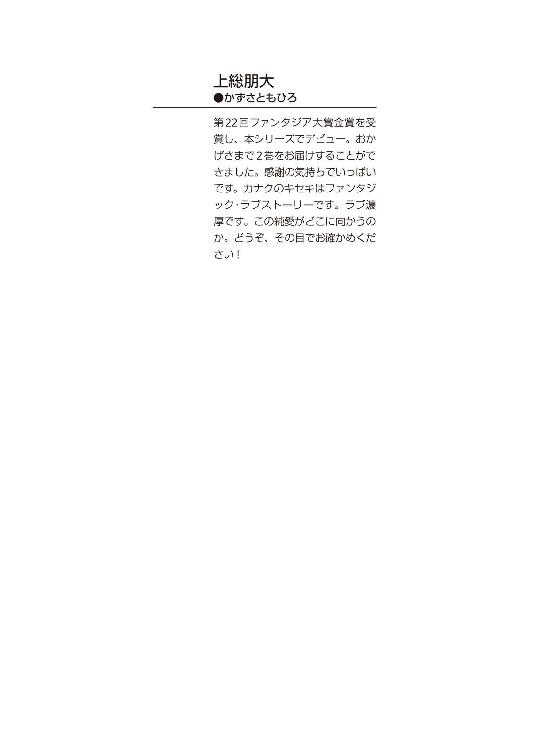
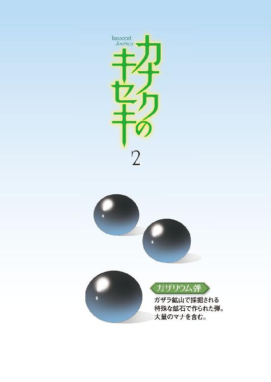
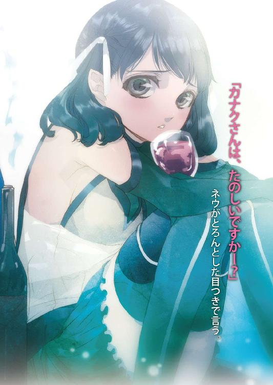
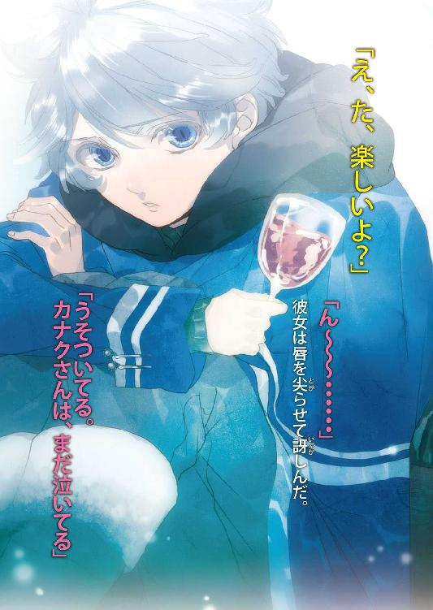
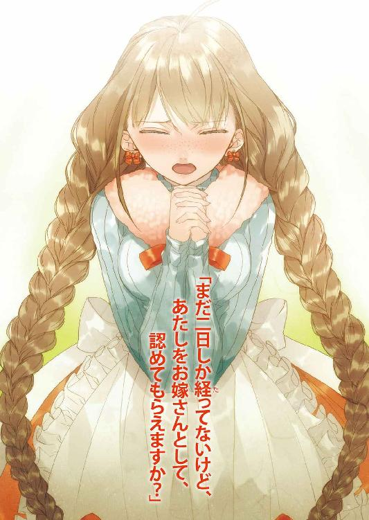

カナクのキセキ２
上総朋大

富士見ファンタジア文庫
本作品の全部または一部を無断で複製、転載、配信、送信したり、ホームページ上に転載することを禁止します。また、本作品の内容を無断で改変、改ざん等を行うことも禁止します。
本作品購入時にご承諾いただいた規約により、有償・無償にかかわらず本作品を第三者に譲渡することはできません。
本作品を示すサムネイルなどのイメージ画像は、再ダウンロード時に予告なく変更される場合があります。
本作品は縦書きでレイアウトされています。
また、ご覧になるリーディングシステムにより、表示の差が認められることがあります。
口絵・本文イラスト さらちよみ
目次
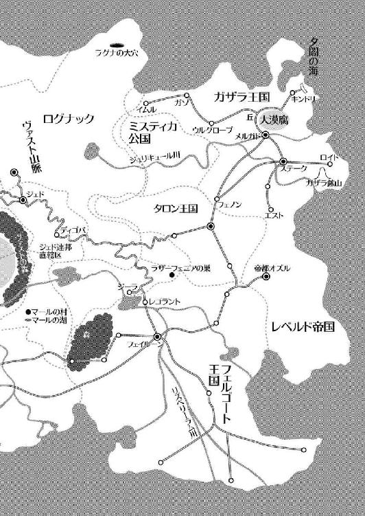
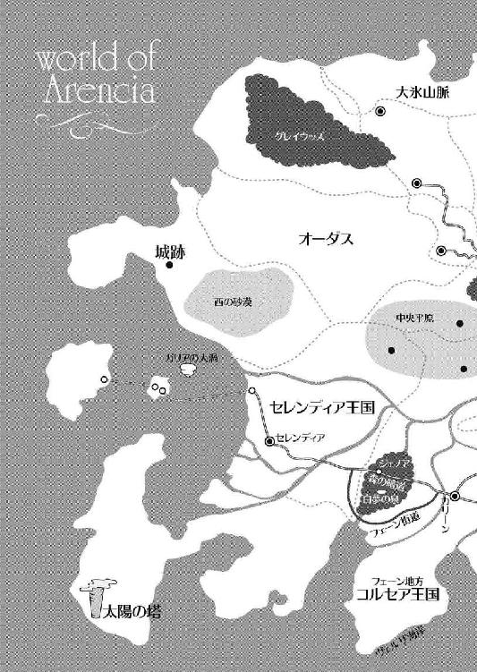
第一章・表 夕闇の影砲士
あたしは揺れる馬車の窓を開け、半身を乗り出して大きく息を吸い、
「お父さんの、ばかぁ──────────────────っ!!」
力いっぱい叫んだ。
「うおおおおおっ、何だ何だ？？？」
驚く御者のおじさんに小首を傾げて笑顔を向け、あたしは馬車の中に引っ込んだ。
あー、少しだけすっきりした。
窓の外に目をやると、また沸々と胸のむかつきが蘇り、口が自然とへの字になる。
爽やかな風が茂る草を波立たせ、踊るように地面を撫でていく......ってな風景ならまだ心も安まるんだけど、目に入ってくるのは毒々しく泡立ち、腐臭を吐き出し続ける灰色の大地だけだ。
大漠腐──メルガドからキンドリーに向かう途中に広がるそれは、いつしかそう呼ばれるようになった。一言で言えば、巨大なヘドロの沼ってとこ。百五十年前は存在しなかったらしいけれど、これのおかげでキンドリーの村は王都メルガドから隔絶されてしまい、今では辺境と呼ばれて旅人すらその足を向けることのない土地になってしまった。
あたしは今、そのキンドリーへ向かっている。
「おいレベッカ、ちょっくらキンドリーまで行って、影砲士の嫁になってきてくれ」
朝一番で父に言われた言葉がそれだった。
馬車が到着し、有無を言わさずあたしはそれに乗せられて王都メルガドに護送され、そこで数日過ごした後に、今ここにいる。
唐突すぎて、あたし自身がこの展開についていけてなかった。
とはいえあたしは家長である父に逆らうことはできない立場だった。
あたしの家は王都メルガドより北西にある町ウルグローブで牧場を営んでいる。家族が多くて、いつもお金に困ってた。
こういう家の娘が、どこかに無理矢理嫁がされるというのは別に珍しい話ではなかったし、長女のあたしはそれを覚悟して育った。
そんな厳しい現実に、将来自分の旦那さまになるのは王都の商家かな、それとも聖騎士団かな、などと、実際あり得ない夢を見て、自分を鼓舞しながら育ってきた。
まさか、まさかド辺境のキンドリーとは！
これは......酷すぎる！
考え得る中で、歩みたくない道だけが目の前に広がっているような感じだ。
どう前向きに考えても、明るい未来に繫がらない。
「お嬢さん、そろそろキンドリーの村が見えてきたぞ」
そう声をかけてきた御者のおじさんを、三つ編みをいじりながら胡乱な目で睨むと、おじさんは気まずそうに顔を前に戻した。おじさんに恨みはないけど、こっちはやり場のない怒りと絶望と不安で、胸がはりさけそうなのだ。
あたしはのっそりと天井の番を外して箱馬車の上から顔を出す。そこは高い丘の上で、右手には大漠腐、左手には森が広がり、そして前方には木々の間から建物が見えた。
小さな村......きっとあれがキンドリーなんだ。
それともう一つ、キンドリーの村のさらに奥に、砦のようなものがあった。
はて？ あの先は確か海しかないはず。
「ねえおじさん、あの砦は何？」
おじさんは長くのばした髭をさすりながら、
「ああ、あれか。あれは夕闇の長城と呼ばれるものだ」
「何であんなところに？ あの先は海しかないんじゃないの？」
「ああ、あの先にあるのは夕闇の海だけだな。言われてみれば何でかな？」
「むー、知らないんだ」
「ただ、あの長城は無人じゃない。夕闇の影砲士と呼ばれる者が住んでいるらしい」
「夕闇の影砲士!? そ、その影砲士って何なの？」
「さあ。ただ何やら大事な役目があって、国の兵士と共にあの長城を守っているという噂は聞いたことがあるが──」
うーん......まあ考えても答えが出るわけじゃないし、ここは会ってみるしかないか。
ただ、どうか影砲士さんが筋肉トロルとか根暗ダークエルフとかトカゲ人間ログナカンとか暴力的なフリーレンとか髭ドワーフではなく、人間の男性でありますように。
あ、エルフならＯＫ。
それだけは、強くマールに祈った。
その日の夕暮れ、馬車はキンドリーの村に到着してあたしを降ろすと、すぐさま引き返していった。そんなにここにいたくないのかしらね。
大きな鞄を抱えて途方に暮れたあたしは、とりあえず村をあてもなく歩き出した。いくら辺境とはいえ村は村、宿泊施設の一つくらいはあるだろうと探してみると、それは実にあっさり見つかった。
その建物に入ると、そこはたばこの臭いが鼻につく酒場だった。中年の人たちが酒を飲みながらベーコンやソーセージをかじりつつ、カードゲームや噂話で盛り上がっている。
カウンターで話を聞くと、二階は宿になっていて部屋も空いてるらしい。あたしは早速一室を押さえて荷物を置き、食事をするために一階に降りた。
どう見ても余所者の、しかも女一人。変なのに絡まれなければいいなあと思っていた矢先に、中年の男三人に声をかけられた。
「お、この辺じゃ見ない娘だな」
「なかなかべっぴんさんじゃないか。そばかすがちーと気になるがな！」
「女の子の一人旅か？ それじゃ寂しいだろ、俺たちに酌でもしてくれよ。たっぷり楽しませてやるからよ！」
当然というか、あまりにもベタベタな展開に、あたしは溜息をついた。
「遠慮します。ここまで馬車に揺られて疲れている上に、少々機嫌も悪いので」
出来る限り丁寧に断ったつもりだったのに、男たちは赤ら顔でニヤニヤしながら「まあそう言うなよー」などと言って勝手にあたしの両側と背後を固め、肩を組んできた。
はい、あたしが許せるのはここまで。
機嫌が悪いと警告はしたんだから、しょうがない。
数秒後、酒場の扉から男が三人、ありえない回転をしながらすっ飛んでいった。
女に蹴り飛ばされたからか、中年三人組は恥ずかしさのあまり顔が紫色になっていた。
あー......面白いっ！
「ち、ちくしょう、このアマ──」
間髪入れず有無を言わさず、まだ懲りなさそうな中年のおじさまのアゴに、キッチリと肘を入れる。
「う、うわ......ひぃい......」
戦意喪失の二人に、気を失った一人。
うふ、かわいそう。
「あたしに命令できるのはお父さんと（まだ会ってもいないけど）旦那さまだけなの。あなたたちだって家に帰れば家族がいるんでしょう。下らないことをしてないでさっさとおウチに帰りなさい！」
あたしがそう言うと、二人の中年はのびている一人を担いでこの場を去っていった。
そして酒場に戻ると歓声が起こり、あたしは村の人々に囲まれた。
「いやー、あいつらを一人でのしちまうとは、あんたやるなぁ！」
「こんなにちっこいのに、大したもんだ！」
あたしは酒場にいた村人たちから熱狂的な歓待を受けた。
でも、ちっこいってのは余計だわ。
「それにしても、君みたいな若い子がこんな辺境の村に来たってことは、君も影砲士の花嫁なのかい？」
その言葉にあたしはどきりとしてその村人を見た。
二十代前半くらいの、逞しい男の人だった。
「君......も？」
「あー、やっぱりそうなんだ」
それを聞いた村人たちは先ほどの歓待ムードから一転、あたしと話をしていた男を残してそそくさと酒場を出て行ってしまった。
「何？ 一体何なの？」
「悪く思わないで。仕方がないんだ」
「だからどういうこと？」
「この村の人間はみな影砲士を嫌っている。こんな辺鄙な村ですら重税でみんな苦しんでいるのに、影砲士は何もせずのうのうと税金で暮らしているって思われてるからね」
「あなた、影砲士と会ったことがあるの？」
「いや、ないよ。この村の人は誰一人として影砲士を見ていない。影砲士は一生をあの長城で過ごすし、国の兵士が影砲士を守っているからね」
「ふぅん......で、さっきあなたが言った〝君も〟ってどういうこと？」
「ああ、実は言いにくいんだけど、影砲士の花嫁としてここに来た女性は君で十人目なんだ。前に来た九人はみんな逃げ出した」
「影砲士......ばけものじゃなきゃいいなあ......」
「君も悪いことは言わないから、引き返したほうがいいんじゃない？」
「それはどうもご親切に。でも、あたしは長城に行くわ」
「え？」
首をかしげる男に、笑顔で答えた。
「さっきも言ったけど、あたしに命令できるのはお父さんと旦那さまだけなの。だからお父さんが影砲士に嫁げと言うなら、形はどうあれそれに従うわ。最初は嫌だったけれど、もうあたしは、あたしの意志で影砲士の嫁になってやるって決めたのよ」
そう。くよくよしててもしょうがない。
こうなったらどんな男だか知らないけど、とことん愛してやるわっ！
覚悟しなさいよ、旦那さま！
「君みたいな人は初めてだな......気に入ったよ。僕はダグラス、父から継いだこの村唯一の雑貨屋をやっているんだ。何かあったら力になるよ」
「ありがとうダグ。あたしはレベッカよ」
「長城に行くなら、明日の昼に僕の店においで。ちょうどその時間に、長城から荷馬車が来るんだ」
「ほんと!? それは助かるわ！」
あたしとダグは力強く握手を交わした。こういう見知らぬ土地で友達が出来るのはとても心強いし、何より嬉しい。
それからダグは酒場を出て行き、あたしは二階の部屋に戻ってすぐベッドに身を投げた。
疲れる一日だった。
煤けた天井を見上げていると、急に睡魔が襲ってきた。
こうしてキンドリーでの一日目はいつの間にか終わり、目を覚ました時には既に翌日の昼前だった。あたしは一階の酒場で遅い朝食をとり、早速店を出て数歩先にあるダグの雑貨屋へ向かった。
こういう時は、狭い村って便利だなって思う。数少ないお店が密集してるから、迷わずに済む。お店に選択の余地がないのは問題だけど。
「ダグー！ いるー？」
あたしの姿を見て、カウンターにいたダグが顔を上げた。
「やあ、レベッカ」
「馬車は来た？」
「いや、それがまだなんだ。いつもならもう来てるんだけどなあ。お店で待っててよ」
「うん。じゃあそうさせてもらうわ」
「じゃあ、ハーブティーでも飲む？」
ハ────ブ、ティ──────!?
「飲むっ!!」
ダグはにこやかに微笑んで戸棚から瓶を取り出し、お茶の準備をし始めた。
勢いで入ってきたから気づくのが遅れたけれど、ダグの店は意外に広く、様々なものが店頭に並んでいた。野菜や肉、薬草、それに甲冑から剣まで。
「ふーん、すごいお店だね」
「ま、この村で唯一の店だからね」
ダグはティーカップとクッキーが二枚載っているお皿をテーブルに置いた。
「はい、どうぞ。この村が誇るハーブティーに、名人コレットおばさんのクッキー。この村にこれ以上のごちそうはないよ」
「わーい、ありがとう！ いただきまーす！」
ダグがいれてくれたお茶は清々しくて本当においしくて、クッキーはほんのり温かくてサクサクだった。
「おいっっっしぃぃぃぃー！ 本当においしいよ、これ！ しっ、幸せっ！」
「でしょ？」
ダグもティーカップを手にとって、一口お茶を飲んだ。
「それにしても、今日は遅いなあ。何やってるんだろ、ザイルのやつ」
「ザイル？」
「うん。長城の衛兵で、僕の友人なんだ。ちょっと様子を見てくるから、店番頼める？」
「うん、いいよー」
彼は笑顔で店の奥へと消えていった。
しばらくクッキーとハーブティーを堪能していると、店の裏から馬の嘶きが聞こえてきた。どうやら例の馬車が到着したらしい。話し声がぼそぼそと聞こえた後、ダグは一人の男性を連れて戻ってきた。
「おおー、この女が今回の嫁さんか？」
見知らぬ黒髪の男性が、だしぬけにそう声をかけてきた。
たぶん、この人がザイルなのだろう。年の頃はダグと同じくらいだけど、穏和そうなダグとは違い、鋭くて細い目つきをした、とっても感じの悪い男だった。
「ええどーも初めまして！ あたしが今回の嫁さん、レベッカよっ！」
きつく言い放ったあたしにザイルは目を丸くしてダグと視線を交わし、大笑いした。鋭い目つきが一転し、人なつっこそうな細目に変わる。
この人......この顔......昔、どこかで会ったことがあるような気がする。
「はっはっは、いや悪かった。俺はザイル、夕闇の長城と影砲士を守る衛兵だ。もう一人はジョンというんだが、もう老年なんでな、こういう使いは俺がやってるんだ」
「レディに対するマナーがなってない人は嫌いー」
あたしが頰を膨らませてそう言うと、ダグが笑顔で宥めてきた。
「まあそう怒らないでレベッカ。ハーブティーもう一杯奢るから」
ハ────ブ、ティ──────!!
「許すっ!!」
ダグはにっこり笑った。
「ザイル、君も座りなよ」
「いや、俺はいい。早く荷物を運んじまわないと──」
「今日のコレットおばさんのクッキーは会心の出来だよ？」
「座ろう」
すんなり席に着いたザイルとあたしを見て、ダグは楽しそうに笑った。
「ねえザイル、率直に聞くけど、影砲士って何なの？」
三人でテーブルを囲んでお茶を楽しみつつ、あたしは素直に聞いた。
「言葉の通りだな」
「言葉の通り？ 影砲士が？」
「そう。影を砲撃する者、だ」
「はあ、意味がわからないわ」
「ま、言葉で何回言っても伝わらない、だけどな、これだけは言える。影砲士がいなくなれば、この国はおしまいだ」
困ったあたしはダグの顔を見た。彼も肩をすくめた。
「僕だってザイルに君と同じ質問を何度もしたよ。でも返ってくる答えはいつも同じさ」
ザイルは急にカップを置いて席を立った。
「ダグ、俺はもう長城に戻る。例のもの、届いてるか？」
「あ、ああ届いてる。馬車に積んでおくよ」
「悪いな、頼む」
ダグはにこりと微笑み、店の奥へと消えていった。
あたしはカップを口につけながら、じーっとザイルを見る。
「何だ？」
「ねえザイル、影砲士ってさ、すごいことをやってる人なんだよね？」
「ああ、それは間違いない」
「尊敬できる人なんだよね？」
「少なくとも、俺はな」
「ならさ、何で今まで九人もの花嫁が逃げ出してるわけ？」
「それは影砲士と長城でしばらく暮らせばわかることだ」
「ひょっとして影砲士って、闇種族？」
「んー、なんと言えばいいのか......そういう括りじゃない、って感じか」
「陽種族でもなく、闇種族でもない？」
「ただな、全てを受け入れるかどうかはあんた次第だ。今までの花嫁はそれができなかった。あんただってどうだか、わからねえけどな」
「そう？ あたしは出来ると思うけど？」
「何で会ったこともない男に対してそう言い切れるんだ」
「そういう育ち方をしてきたからね。お父さんの言うことは絶対だし、旦那さまになる人にも同じ。ただ、素直に言うことを聞くかどうかは別だけどね」
「あんた、相当の変わり者だな」
「ありがとう、最高の褒め言葉だわ」
その時、表からダグが呼ぶ声がした。
馬車を表に移動してくれたらしい。
「そんじゃ、行くか」
ザイルは立ち上がって手を差し出し、あたしはその手を取った。
「ええ、行きましょ。あたしの花婿殿に会いに」
あたしたちは微笑を交わして馬車に乗り、キンドリーの村を後にした。
第一章・裏 カナクとネウ
「しーんかーんーさまー！」
それは広場で行っていた日曜学校の授業の真っ最中だった。
小さな生徒五人と僕はその声に驚いて顔を上げた。
土手の上に大きな包みを持った女の子が、肩で息をしながら立っていた。
修道士のネウだ。
いつも外出する時は修道士用のローブを着ているのに今日は慌てたのか、短めのスカートに肩を出した白い上着という、普段着姿のままだった。
「はあ、はあ、神官さま！ おべ、おべんとう！ 忘れましたよ──！」
くすくすと生徒たちが笑い、僕は恥ずかしくなって顔を赤らめた。
「あ、ありがとう、ネウ！ でも、まだ授業が──」
「はい！ 今すぐお届けします！」
「いや、持って来てって意味じゃ──」
「わっと......お、う」
「そこからじゃ危ないよ！」
「うわわわ......わ──ん！」
「ネウ！」
あの辺りの草は短くてとても滑りやすい。ネウはお弁当の包みを抱えたまま、滑るように落ちてきた。白いぱんつを丸出しにして草にまみれ、それでも弁当を死守したネウは、慌ててスカートを直して僕の元に走ってきた。
「ネウ！ だ、だいじょうぶ？」
「は、はい！ お弁当は無事です!!」
「いや、そうじゃなくて......まったく、ふっ、あははは」
「え？ へ？ あう、も、申し訳ありません～」
体中に草や土をつけ、顔を真っ赤にして頭を下げるネウの周りに笑いの花が咲いた。
「じゃ、ネウおねえちゃんのがんばりに免じて、少し早いけどお昼にしようか！」
「「「わ────い！」」」
子供たちが立ち上がり、ネウのそばへ駆け寄った。
僕は寝転んで、よく晴れた空を眺めた。
小鳥たちの鳴き声と、木々の葉がこすれる音が優しく耳を撫で、ヴァスト山脈から流れ込んでくる涼しい風が、僕の少し伸びた銀の髪を揺らす。
気持ちのいい草花の香りが鼻をくすぐり、空に浮かぶ真っ白な雲がちぎれては、またくっついて流れていく。
清々しい、春の情景だった。
ここはコルセア王国領内、マールの村。
三方をヴァスト山脈の高い山に囲まれ、唯一開けた方向は湖になっている。
外界との繫がりは湖を走る十日に一本程度の連絡船のみで、その積荷は殆どが日用雑貨などの物資だった。この村には滅多に旅人も訪れず、欲望渦巻く外界に辟易とした者たち数十名が、助け合いながら生活している。
かつて、暁の賢者マールがこのアレンシアに残した石碑を巡る旅をした時、ここで存在するはずのない五つ目の石碑を発見した。
それから僕はここで暮らすことを決め、コルセアの女王さまに嘆願し、それを許してもらった。
あれから五年の歳月が流れた。
はじめは何もなかったこの場所も今ではすっかり村として成り立っている。僕は神官となってここ新生マールの村を任されていた。
神官の役割は主にアレンシアの守護神たるマールの教えを広めることだけど、こういう人の少ない村では医者になり相談役になり、今日みたいに先生になったりもする。
「あ、あの......神官さまも、お一つどうですか？」
ネウは子供たちにパンとハムを切り分けてあげた後に、僕にも持ってきてくれた。
「うん、ありがとう。頂くよ」
まるで計ったかのように切られたパンに、絶妙な量のハムとレタスが挟まっていた。かじりついても、形と同じように文句の付け所のない味だ。
「うん、おいしい！」
「わあ、ほんとですか！ うれしいです！」
手を叩いて喜ぶネウの表情は、とても眩しい。
「ネウおねーちゃーん、おかわりー！」
「おねえちゃーん、お茶ぁ～」
「はーい、いま行くよ～う！」
ネウは僕に一礼すると、汗を拭きながら走っていった。
春の日差しが草花に暖かな光を降り注ぎ、子供たちの半袖からは白い肌が覗いている中で、ネウのそれは周りの子たちとは明らかに違う。
黒、というよりは紺に近い肌の色に、暗闇のような漆黒の髪。すこし垂れ気味の丸い瞳。端正で美的なものを内包しつつも、人によってはそれを素直に受け取れないだろう。
ネウは闇種族、ダークエルフだった。
アレンシアの守護神マールを未だに〝紅の魔女〟と呼び、災厄の象徴である紅の信徒と称して崇めている闇種族の中で、ネウは僕らと同じようにマールを〝暁の賢者〟として信仰している、極めて珍しい、心優しき暁の信徒だった。
彼女とは石碑巡りの旅の道中、闇の国ジェドで知り合い、友達になった。
その後ネウは自分の足で石碑巡りを行い、ここマールの村を訪れ、それからはここの聖神殿の修道士となり、僕と寝起きを共にして仕事を手伝ってくれている。
この村の人たちも最初はネウに対して良い気持ちを持っていなかったけど、彼女が普通の闇種族でないことを理解すると、温かく接してくれた。
ネウは本当に献身的で、よく働く。
昼夜問わず困った村人がいればすぐに駆けつけて僕に詳細を報告してくれたし、連絡船の船長ともいつのまにか仲良くなって、外界の情報を仕入れてくれた。そういう意味では、彼女は僕にない才能を持っていた。
それでも彼女は自分をわきまえていた。
外では「神官さま」と呼んで僕より前を歩くことはなく、そして聖神殿に戻ると「カナクさん」と呼んで隣にやってくる。
それは神官と修道士の間柄ではなく「友人」としての距離だった。
僕はお腹が膨れると、また仰向けに寝転んだ。
マールの村の空気はゆっくりと柔らかに流れ、ついつい横になりたくなってしまう。
「あの、神官さま」
ネウの声がした。
「うん？」
「子供たちが遊びたいって言い出しちゃってるんですが......」
僕は目を閉じたまま、彼女に言った。
「ネウが良ければ、遊んであげて」
「は、はい！ ありがとうございます！」
ネウは嬉々として子供たちのもとへ戻っていった。
そんな彼らに、僕は目を細めた。
「いや～、少々遊びすぎてしまいました」
聖神殿への帰り道、ネウがすりむけた膝をさすりながら涙目で言った。夕刻を告げる鳥の鳴き声が山々に木霊し、辺りは茜色に染まっていた。
西の空には紅の月が顔を覗かせている。もう半時もしたら、あれを追いかけるように蒼の月が姿を見せ、世界を夜の色に塗り替えるだろう。
「子供だなあ、ネウは」
僕が笑顔でそう言うと、ネウは両手を上げて怒った。
「ちっ、ちがいますよ！ 子供たちに合わせてあげようと思って、わざと夢中になっていたフリをしてたんです！」
「そうは見えなかったけど？」
「ううっ！ あ、あたしは演技が上手なんですっ！」
草まみれの頭、泥だらけの服、すりむいた膝。
これが演技だとしたら、確かに上手だ。
「それよりも、神官さまが持ってらっしゃるその瓶は何ですか？」
ネウは僕が小脇に抱えている瓶に目をやった。
「あ、これ？ これはボーラさんから貰った桃のワインだよ。日曜学校のお礼にって、わざわざ届けてくれたんだ。この村で収穫された桃から作られた初物だって」
ボーラさんはこの村の村長さんだ。年は六十前、元は各地を転々と渡り歩いた傭兵だそうで、戦の話を血なまぐさく話してくれる、ちょっと困った人だ。
「わあ、ついに出来たんですね！」
「ボーラさんの話によると、この村はいい桃ができる条件が整ってるんだって。これからこのワインをいっぱい生産して、村の特産品にしたいそうだよ」
「す、素晴らしいお考えです！」
ネウ......よだれ......。
「末は〝マールワイン〟って名前をつけて、王都カリーンに出荷するんだっ！ って張り切ってたよ。元気な人だね」
その言葉に、ネウは溜息をついた。
「あたしは、それまでここにいられるんでしょうか」
ネウは足を止めて振り返り、炊煙の上がるマールの村を見下ろした。
「ここは素晴らしい村です。でも、ここはあたしがいていい場所なのでしょうか？ この肌が、この髪が......闇種族であるこの体そのものが、時々無性に憎くなります」
僕はワインを道に置いて、ネウの頭を撫でた。
「あ......」
「気にすることはない。君はマールの村のネウだ。君が望むなら、いつまでもそうあり続けられる」
「神官さま......」
「ネウは優しくて、心の強い子だ。君の良さは、みんな理解してる。それに、たとえこの村のみんながネウの敵になろうとも、僕だけは君の味方だよ。何といっても君は、僕とマールの親友なのだから」
僕は泣きそうな顔をして懐に飛び込んできたネウを、優しく抱きとめた。
第二章・表 夕闇の影砲士
馬車は鬱蒼とした森の中を進んでいた。
曲がりくねった道は行く先を隠し、見上げれば木々が作り出す緑色のヴェールが空を遮り、時折透き間から漏れて地面を射す光が目を眩ませる。
「ねえザイル、影砲士ってどんな人？」
荷台の藁の上で膝を抱えて座っていたあたしに、ザイルが振り向いて答えた。
「んー、そうだなあ。何もない時は普通の人間の男だ。いや、普通よりはむしろ少し弱々しいくらいだな」
「うーん、引っかかる言い方だなあ。名前は？」
「スフィアだ」
「へー、わりと普通の名前ね」
「お前はもう関係者だから率直に言うけどな、今後何が起ころうとも、決して影砲士の仕事の邪魔だけはするなよ。もしスフィアがミスれば、一つ百プラチナ貨は下らないというガザリウムの砲弾が無駄になるんだからな」
「ひゃ、ひゃ、百プラチナぁ!?」
「それに一日に二回も撃ったら、スフィアのほうがもたない。いいか、旦那さまの身が心配なら、黙っていることだ。それが一番の協力になる」
「うーん、まったくもって意味不明ね。もう少し説明が必要じゃないの？」
「夕闇の長城まではまだかかる。のんびり行ってたら日が暮れちまうから、お前はそこで寝てな」
ザイルはそう言ってふいっと顔を背け、馬に鞭を入れた。
「ああああわわ、ざざ、ザイルもっとゆっくり......いい!!」
「あん？ 聞こえん！」
「ひゃあーあああああああああー！」
結局、ザイルは馬の足を緩めてはくれなかった。
激しい揺れにげんなりしはじめた頃、突然森の細道が終わって視界が開け、目の前に予想よりも遥かに大きな長城が姿を現した。
「お、おおう......」
そのあまりにも壮大な造りに、思わず感嘆の声を漏らしてしまった。
中央には巨大な円筒形の塔があり、そこから南北に煉瓦造りの壁がのびていた。所々に雑草が生えており、古さを感じさせるものの、城自体はかなり頑強そうだった。
ザイルが中央の塔の前でようやく馬車を止めると、塔の中から一人の老兵がやって来た。
お年は六十代後半くらい、体が大きく骨太な体軀に、白い立派な髭に綺麗にまとまった髪。上品で温和な眼差し。背筋もしゃんとしており、凄くオーラがある。一見してただ者じゃない雰囲気を感じた。
「おー戻ったか、ザイル！」
「ああ」
ザイルが馬車から飛び降り、あたしは頭を振ってよろよろと荷台から落ちた。
「ほう、その娘さんが今回の──あ、い、いや失礼！」
「は、初めまして、レベッカと申します。あなたがジョンさんですね？ ザイルからあらかた話は伺っています。あたしで十人目だってことも」
ジョンさんは苦笑いを浮かべて頭をかいた。
「そそ、そうか、なんじゃ、聞いておったのか」
「気にしないでください。ザイルと違って、気を遣って頂けるだけましですわ」
あたしはじろりとザイルを見た。
「ここまでの道中だって、まるで荷物扱いですもの！」
「あーそれはだなー、一刻も早くレベッカを花婿に引き合わせてやろうと──」
「思ってなかったわよねっ！」
「......ああ、思ってなかったな」
ザイルとあたしは視線で火花を散らしていた。
あたしたちのそんなやりとりを見て、ジョンさんは髭をさすって目を細めた。
「何じゃ、随分仲良くなったんじゃの。これまでの娘らとは大違いじゃな」
「じいさん、それよりスフィアはどうしたんだ？」
「ああ、またいつものように本の虫じゃろ。今連れて来るわい」
ジョンさんが長城に向かうと、あたしはザイルの尻に蹴りを入れ、ザイルはあたしの頭を指で弾いた。
「痛ったいわねー！ もう少し丁重に扱ってよ！」
「オテンバにはこれくらいで丁度いい」
「お、お、オテンバぁ!?」
あたしがザイルを蹴り上げてやろうとしたその時、長城の入り口に人影が見えたので慌てて足を下ろした。
「............？」
その人影はこちらを窺っているようで、姿を現さなかった。
「何やってんだ、あいつは」
「もしかして、あの人？」
「ああ。お前の旦那さまだ」
ジョンさんの太い腕に捕まれ、まるで捕まった鼠のようにじたばたと暴れていた。
「スフィアはいい影砲士なんだが、どうも気が弱いというか奥手というか......な、おい、レベッカ!?」
なかなかこちらに来ない旦那さまに、あたしは痺れをきらせて近づいていった。
ジョンさんの腕から逃れようともがいていたその人は、あたしに気づくと急におとなしくなった。影砲士なんて怖そうな異名がついていたからどんな屈強な人なのかと思っていたら、あたしの前にいたのは背丈もあたしとあまり変わらない、女の子のような美しい銀髪の少年だった。
「あなたがスフィア？」
何故か涙目の少年は、顔を赤らめて頷いた。
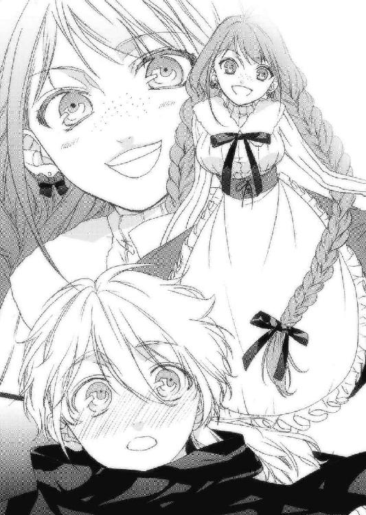
「初めまして。あたしはレベッカ。あなたのお嫁さんになりにウルグローブからやってきました。どうか末永く、可愛がってくださいね」
あたしはスカートの裾を持ち、膝を軽く折って頭を下げた。
スフィアはジョンさんに背中を押されて前に出た。
近くで見ると、本当に綺麗な顔立ちをした人だった。
線が細くて、少し大きめなのか、手は長袖のローブに隠れてしまっている。そのまん丸の青い瞳があたしを捉えると、顔を真っ赤にして軽く俯いてしまった。
「は、初めまして、レベッカさん。こちらこそ、よろしくおねがいします」
「今日は長城に新たな住人が加わっためでたい日じゃ！ 歓迎の酒でも出そうかの！」
酒、と聞いたザイルが顔をほころばせた。
「そりゃいい！ 早速飲もうぜ！」
「お前は荷物が先じゃろ、ザイル！」
「ちえっ、わかったよ」
しぶしぶと馬車に戻るザイルの背中を見て、あたしとスフィアは微笑みあった。
夕闇の長城に住む人たち、すなわちジョンさんにいじわるザイル、それに影砲士スフィアは、家事というものがとことん苦手らしい。その証拠は階段、風呂場、庭......あらゆるところに残されていた。
あたしはお料理をしようと台所に来たのはいいけれど、もはや元が何だったのかわからない布の固まりや腐敗して原型を止めていない野菜、妙な臭いを放つ塊などを前にとても調理をするような気は起きず、今日のところは外で調理をすることにした。
「いやのう、本当に恥ずかしい話じゃが、今までカビを払ったパンとか、缶詰とかばかりを食べていたんじゃ。何せ、誰も料理というもんができんからなあ」
どうりで非常食の類がないのね。
いつも非常事態だったから。
「荷物は全部片付けたぜ......ん？」
あたしがチーズを焼いていると、長城から荷物を降ろしに行ったザイルがやって来た。
「おいおい、このいい匂いはなんだ!? 何か、うまそうなもののようだが？」
「台所が使えなさそうだったから、肉と野菜のスープと鹿肉のチーズのせくらいしか作れなかったけど、食べる？」
三人が目を爛々とさせてあたしを見た。
「「「食べるっ！」」」
声を揃えてあたしのところへ駆け寄ってくると、器とフォークを手にとって鍋の周りに腰掛けた。あたしはそれぞれの器に作ったスープを注ぐと、三人ともすごい勢いでかき込み始めた。
「う、うまい！」
「よもやここで温かいものが食べれるとはのう......くくっ......」
「うん、本当においしい！」
器ごと食べそうな勢いでがっつく者、泣きながら食べる者、感心しながら食べる者......それぞれが感情を剝き出しにして器に集中していた。
それにしても、この三人の中で一人、決定的に作法が違う人がいる。
ジョンさんだ。この人の食事の作法は一見ぞんざいに見えて、実に上品で、滑らかで。スフィアは影砲士だからわかるけど、ジョンさんは何でここにいるんだろう？
そんな疑問も「おかわりっ！」という声にかき消され、結局ザイルとスフィアは三杯、ジョンさんは二杯おかわりした。
お腹が一杯になると、それぞれ幸せそうに横になって天を仰いだ。あたしはスフィアの隣に座り彼の顔をのぞき込むと、スフィアは恥ずかしそうに顔を赤らめて目を逸らした。
本当に、可愛い人！
「いやー、よかったなースフィア。十回目にしてようやく当たりじゃねぇか！」
ザイルがまた余計なことを言う。
「こりゃザイル、影砲士殿に失礼ではないか！」
「おっと失敬。じいさんは怒ると怖いからな」
ししっと笑うザイルからは、笑顔がこぼれていた。
「うう、ごめんなさい、ぼくが至らないばかりに......」
しょぼーんと俯くスフィアに、ザイルが畳み掛ける。
「そうだスフィア。お前がいっつも奥手だからいけねぇんだ。もっと積極的にガーッといかねぇか、ガーッと......ぅがっ！」
あたしは黙ってケダモノの腹を踏みつけた。
「せっかく堪能したスープが、正常でない場所から出ちまうとこだったぞ!?」
「出しちゃいなさい！ スフィアはあんたとは違うのよ、ザイル！」
「くっ、このオテンバ娘！」
「あーっ、また言ったなーっ!?」
あたしが逃げるザイルを追いかけると、ジョンさんとスフィアの笑い声が響いた。
第二章・裏 カナクとネウ
それは翌日の、朝の出来事だった。
「神官さま！ 神官さま！」
神官室で帳簿をつけていた僕の耳に、ネウの声が飛び込んできた。
「神官さま！ 表にご友人という方がみえてますが！」
その声に僕は手を止め、すぐにドアを開けた。
「僕の、友人？」
ネウは困惑した顔で僕を見つめた。
「はい。お二人みえてます」
はて、誰だろう？
「わかった、すぐに行くよ」
「あっ、あのっ......」
「ん？」
「あたしも、ついていっていいですか？」
何故だか、ネウは不安そうにそう聞いてきた。
「うん、いいよ。君はこの聖神殿の修道士なんだから」
「あ、ありがとうございます！」
僕はネウと二人で聖神殿の入り口に向かった。
そこには旅人姿の女性と、使い込んだ鎧を身につけた紳士が立っていた。
「あの......僕にご用とか？」
僕とネウが姿を現すと、女性のほうが片手を上げて叫んだ。
「いっよ─────────うっ！ カーナクっ、おひさしぶりっ!!」
こっ、この無駄に元気いっぱいの声は!?
「まさか......リリル？ リリルなの!?」
「あはっ、あったりぃ！」
そっか......魔法学校を卒業してから、もう五年も経つんだ。あの頃のリリルはまだ幼さがあったけど、今目の前にいるリリルは立派な一人の女性だった。
長く伸ばした美しい淡緑色の髪、大きな金色の瞳に意志の強さが滲み出ている。上着は袖無しのラフな格好だったけど、腰から下は甲冑のように厳つい鉄のレッグスを穿いていた。
それに彼女の腰には、立派な装飾を施された剣が鞘に収まっている。
「ここにいるのはリリルだけじゃない」
そう言って僕に近づいてきた紳士は、とても凜々しい男だった。
締まった体つきがわかるほどフィットした銀色のフルプレートメイルは、魔法の防具なのだろう。茶色のマントと炎のように赤い髪を靡かせ、緩そうに見えるけど奥深さを秘めた茶色の瞳が僕を捉えている。
「まさか......レニウス!?」
「まさかって何だよ。冷たい男だな」
レニウスは二年前、アレンシア西方を掌握し、コルセアの後ろ盾を得て独立国家となったセレンディア王国の王族であり、リリルと同じ僕のクラスメイトだった。
彼の父でありユーリエの養父であるセレンディア公は、建国と同時に引退し、その地位をレニウスの兄ラティアに譲ったという。
故にレニウスは、今や一国の王の実弟なのだ。
「なぜ......ここに？」
「オレは学校を卒業してすぐ中央平原に派遣されたんだ。その後の噂は聞いてないか？」
聞いているも聞いていないも、セレンディアのレニウスといえば今ではかなり名が知れ渡っている。
中央平原でジェドに対し劣勢だったセレンディア軍を率い、数多の功績をあげてジェド、コルセアと拮抗状態まで持ち直した。そのおかげでセレンディアはコルセアの後ろ盾を得て、国家として独立できたという噂もあるほどだ。
「それで何かと忙しかったんだが、一年前のセレンディア独立をもってようやく中央平原での任も解かれて、少し時間ができたんでな。本国に黙ってこっそりとやって来たってわけだ。
で、ユーリエはどこだ？」
「え？」
「だからユーリエだよ！ ここにいるんだろ？」
ど、どういうことだ？
僕は確かにオリヴィア女王陛下の命に従って、陛下と連名でセレンディア公に宛てて手紙を書いたし、ことはアレンシア全土に影響を与えるため、秘匿とすることを認めるとセレンディア公から返事も頂いた。
まさか、実の息子にまで秘密に......？
「セレンディアじゃ、あんたとユーリエが駆け落ちしたって大騒ぎだったのよ？ まあ、とくに騒いだのはこの男だけどさー」
リリルがレニウスの尻を蹴った。
「いてっ！ な、何だよ！ 妹を心配する兄として当然だろうがよ!?」
「あんたのは違う。絶対違う。断じて違う」
「なんでそう言い切れるんだよ！」
「ねえカナク、まじでユーリエは？ 元気してる？ それならいいんだけど～」
「ほっとくな！」
僕は、二人の顔が見れなかった。
ここまできて隠し通すのは不自然だし、無理がある。ならばいっそ、この二人には全てを知ってもらったほうがいいのかもしれない。
「二人とも僕についてきてくれないか。それとネウ、僕の部屋から彼女の腕輪を」
「は、はい」
ネウはすぐに踵を返して走り出し、リリルとレニウスは不思議そうな表情で顔を見合わせていた。
「おいカナク、今の娘、ダークエルフじゃないのか？」
「そうだけど、彼女は立派な暁の信徒だ。他の闇種族とは違う」
僕は黙ったまま聖神殿の中に入り、石碑の間へ二人を案内した。
「なに？ ここ......」
リリルは辺りを見渡しながら言った。
「二人とも、アレンシアに残されているマールの石碑の数くらいは知ってるよね？」
「ああ。よ、四つだったかな、確か」
レニウスが危なっかしそうに答えた。
「そう。ところがここにあるのは、五つ目のマールの石碑なんだ」
「な......に？」
そこへネウが、ユーリエの腕輪を持ってやってきた。
僕はそれを受け取ると、石碑にかざして魔法陣を出した。
「ユーリエがどこにいるのか。その答えは、この石碑の中にある」
「「はあ？」」
二人に怪訝な反応をされるのも無理はない。でも、これを見てもらう以上に、ユーリエの運命を伝えることはできないと思う。
二人は僕の真剣な眼差しを受け、石碑の文章に目を通した。
文章を読み進めるうちに、二人の顔つきがみるみる変わっていく。
そしてリリルが、膝をついて泣き崩れた。
「うそぉ......ユーリエが、マール？ そんなの、うそだぁ......」
レニウスは何も言わずに、ただ肩を震わせていた。
そして僕に向かって歩いてくると、いきなり僕の肩に摑みかかってきた。
「どうして、どうしてユーリエを守ってやれなかった!!」
返す言葉もなかった。
「お前にならユーリエを託せると思ったのに......それなのに、お前は何で薄汚いダークエルフなんかと一緒にいやがるんだ！」
ネウはびくっと体を震わせて硬直する。
その言葉だけは......駄目だった。
怒りを覚えて体が勝手に獣の姿になろうとしていたけど、もう五年前の僕じゃない。
「お、お前......!?」
それでも体から溢れるマナが、固く握る拳が、逆立つ髪の毛が、レニウスに怯えを感じさせている。それが、手に取るように伝わってきた。
僕は......その怒りを吐き出すように叫んだ。
「お前に何がわかる!! 何一つわかるもんか！ ネウはダークエルフだけど、お前たちよりも敬虔で、神聖なる暁の信徒だ！
それに彼女は僕だけじゃなく、ユーリエの友達でもある！ だからネウはここでずっと、僕と一緒にユーリエを弔い続けてくれているんだ！
僕だってユーリエを守ってやりたかったんだ！ こんなことになるなんて......こんな結末なんて、望んでいなかった!!」
涙を流しながら、息を荒げて叫んだ。
レニウスは力なく腕を落とし、膝を突いてうなだれた。
そんなレニウスに歩み寄ろうとしたその時、僕の腕をリリルが摑んだ。
「カナク、これ読んで」
そう言ってリリルが手渡してきたのは、手紙だった。
僕はそれを受け取ると、静かに目を通した。
リリルへ
私とカナクは今、コルセア王国の王都カリーンに来ています！
セレンディアからここまではソーン音楽団と一緒だったけど、これからはいよいよ二人っきりの旅です！
あーもー、何だかドキドキして胸がはりさけそうだよーっ！
絶対に、ぜーったいにカナクに好きになってもらって、恋人同士になってそっちに戻るからねっ！
本当にありがとう。じゃあねっ！
ユーリエより
「くっ......うう......」
悲しみが、一気に膨れあがった。
その手紙を抱きしめ、地面に額を当てて泣いた。
「本当はこの手紙をユーリエに見せて、からかってやろうと思ったんだけどね。ユーリエは、きっと幸せだったと思うよ。少しでも大好きなカナクと一緒にいれたんだからさ。
レニウスはバカだからさ、許してあげて」
そんなこと言われるまでもなくわかってる。
だってレニウスは、親友なんだから。
「それと、ネウちゃんだっけ。本当にごめんね。あいつ、悪気があってあんなこと言ったワケじゃないから。本当にバカなだけなのよ」
「はい」
ネウの瞳は涙で濡れていたけど、精一杯笑ってくれた。
それから僕らは、聖神殿の入り口に来た。
レニウスは僕を険しい目つきで睨み、僕はそれをしっかりと受け止めた。
「ほらほら、二人ともそんな顔しないのっ！」
「だってよ──」
レニウスが言いかけた時、リリルはレニウスの顔を勢いよくのぞき込んだ。
「だって何？ あたしの目ぇ見てはっきり言ってごらん？」
「う......な、んでもない」
こ、怖いっ！
「あたしたちはセレンディア魔法学校で苦楽を分かち合った仲間でしょ？ ユーリエのことは残念だったけど、これ以上揉め事起こすなら、あたしも参加しちゃうよ？」
うう、何だろう、この魔術師にあるまじき殺気は！
「あーそうだ、あたし転職したのよー。あたしにはこっちのほうが合ってるみたいでね」
そう言ってリリルは腰の剣をすらりと抜いて見せた。細身の剣だったけど、刀身がうっすらと橙色に輝いている。マナの力も感じるから、これは魔法の剣だろう。
「せ、戦士になったの？」
「うん。でね、今はかけ出しの聖剣士よ。これはあたしの相棒、聖剣フレイムウォーカー。訓練すんの、たーいへんだったんだからっ！」
戦士という職業は、そのまま戦いの道を極める者もいれば、聖剣や魔剣を手にしてさらにその上位職業である聖剣士や魔剣士の道を選ぶ者もいる。
上位といっても戦士より全ての面で優れているわけではなく、むしろ純粋な戦いにおいては戦士のほうが優位であるという。それでも上位に持ってこられているのは、これらの職業が魔法を使えるからだ。
それにしても......。
「リリルが聖......剣士？ 魔剣士じゃなくて？」
「あん？ 今なんて──」
「ご立派ですっ！」
「でしょー？」
駄目だ、リリルは怖い。
「それじゃ、そろそろいこっか、レニウス。船が行っちゃうし」
「あ、ああ」
レニウスがゆっくりと近づいてくると、僕の横にいたネウが顔を伏せた。
「ネウちゃんだっけ？ その、ホントに悪かった。いくら何でも、ありゃないよな」
レニウスはネウに深々と頭を下げた。
「い、いいんです。大丈夫ですから」
「そっか......なら、よかった」
そして頭を上げたレニウスの目の前に、僕の顔があった。
「レニウス。ユーリエを守ってやれなくて、ごめん」
「仕方ない。それがあいつの選んだ道だったんだろ」
レニウスはそう言って、僕の胸に軽く拳を当てた。
「よっしゃ！ それじゃ久々にアレやろ！ ネウちゃんも加えてさ！」
リリルがいきなり僕とレニウスの手を取ってそう言った。
「おう、いいなそれ！」
ネウは何が何だかわからない、といった感じで目をぱちくりさせていた。
「あの、何を......わわわっ！」
僕はネウに微笑みかけ、肩を抱いた。
そしてリリルが僕の肩に腕を回し、レニウスがネウと肩を組む。
僕らは、ひとつの円になった。
「んじゃ、あたしがいっくよ～！」
「「おおっ！」」
リリルは息を大きく吸い込み、大声で叫んだ。
『我々五人は真の友として、いつ如何なる時もその存在を忘れることなく心に刻み、助け合いながら共に道を歩むことをここに誓う！』
僕とレニウス、そしてネウの三人がリリルの言葉を繰り返した。そして僕らは天を仰ぎ、右の手首を空高く突きだして交差させると、全員で叫んだ。
『マールの気高き精神と、慈愛の心をこの胸に！』
それはセレンディア式の、親友同士が行う誓いの儀式だった。
「じゃあな、二人とも！」
「カナク、ネウちゃん、また会おうね～ん！」
こうして二人は手を振って、丘を降りていった。
僕らは一陣の春風に吹かれながら、二人の姿が見えなくなるまでそこに佇んでいた。
「いい人たちですね」
ネウが優しい微笑みを浮かべながらそう言った。
「うん。本当に、いい友達だよ」
リリルの叫びを、僕は反芻していた。
『我々五人は真の友として──』
ユーリエも加えてくれてありがとう、リリル。
それから僕はいつものように、神官室で仕事をした。
どれくらい時間が経ったのか、ドアをノックする音で我に返った。
「カナクさん、礼拝堂のお掃除、終わりました」
「あ、ありがとうネウ」
「お食事の支度もできているのですが......その、きょ、今日は、い、一緒に......」
「うん、そうだね。いつも一人じゃ寂しいよね。今日は一緒に食べようか」
「あ......はい！」
ネウは嬉しそうな声を残して、とたとたと走っていった。
一通り机の上を片付けて食堂に降りて行くと、ネウの笑顔が待っていた。
「あ、カナクさん。今すぐ水とパンを持ってきますので、座ってて下さい」
「うん」
エプロンをかけたネウがかいがいしく働き、僕の前に料理を並べてくれた。今日はじゃがいものスープだった。ネウが対面に腰を下ろし、僕らはマールへ感謝の祈りを捧げた。
「では、いただきます」
「いただきますー！」
相変わらずネウの料理は上品で美味しい。
ネウは感心しながら食事する僕の姿を、目を細めて眺めていた。
「どうしたの？ 食べないの？」
「あ、いえ、すいません！」
慌てたネウは、スープにフォークを突き立てた。
「あうっ！」
ネウは悲しそうに、フォークについたじゃがいものかけらをかじった。
「ふっ......あはははははは！」
ネウは与えられた仕事はきちんとこなすけど、少しおっちょこちょいなところがある。
「それにしても、せっかく女王さまがこんな立派な聖神殿を建てて下さったのに、僕ら二人しかいないなんて、贅沢すぎるね」
「そうですね。礼拝堂はいつもぴかぴかにしていますけど、最近じゃ集会を開いても礼拝堂の半分も埋まりませんしね」
ネウは意地になって、フォークでスープを飲んでいた。
「この村は自給自足だからね。この時期は秋の収穫に向けて、何かと忙しいのさ」
パンをちぎり、スープにつけて口に運んだ。
「でも、恵みの実りも収穫の喜びも、マールのご加護あってのものです。こんな時にこそ聖神殿に足を運ばないなんて、それは不心得なのではないでしょうか？」
僕は、パンを口に運ぶ手を止めた。
「ネウ、それは少し違うよ」
「えっ？」
「全力を尽くし、ご加護を待つ。それこそが正しい道だよ。最初から豊穣を願うなんて、それこそ不心得なことだよ。まずは己が全力を尽くす。全力で種を植え、魚を釣り、勉強し、鍛錬する。マールのご加護を得んとするならば、それからじゃなきゃ」
ネウはしょぼーんとした。エルフ族ならば耳が萎れんばかりに垂れているところだろうけど、ダークエルフだけは耳が尖っていない。
「あたしが間違ってました。お導きに感謝します」
「わかってくれて、ありがとう」
僕は身を乗り出してネウの頭を撫でた。涙で潤んでいた瞳が猫のように細くなった。
「今日はちょっとのんびりしたいな......あ、そうだ、あれを開けようか！」
僕は戸棚から桃のワインの瓶を取り出した。
「あ、それは！」
「たまにはあの頃の三人に戻ろうか。ただのカナクと、ただのネウ、それにマールではなく......ユーリエに」
「は、はいっ！」
「じゃあ僕はグラスを持って石碑の間に行くから、ネウは先に行ってて」
「わかりました......じゃなくて、うんっ！」
ネウは笑みを浮かべ、食堂を出て行った。
僕は神官室に戻ってコルク外しとグラスを四つ持ち、石碑の間へ向かった。
石碑の前ではネウともう二人、ささやかな宴への参加者が座っていた。一人は僕が魔法で作った草人、もう一人は千年前、ユーリエが作りあげた草人だ。
「カナクさん、おそいですよー。はやくしないとサラミが......あーっ！」
ふと目を落とすと、赤いドレスを着たユーリエの草人が凄まじい勢いでサラミにかぶりついていた。
「あいかわらずユーちゃんは肉ばっかり食べて！」
「ユーちゃん？」
「この子の名前です。いつまでも草人じゃ呼びにくいので」
「そ、そう。じゃあ、僕の草人は？」
「カナちゃんです」
「カナちゃん!?」
「かわいいでしょ？」
「か、かわいいけど、なんか照れるなあ」
「そうですか？ いい名前だと思いますけど」
「まあ確かに、いつまでも草人のままじゃかわいそうだね。それじゃみんなで飲もうか。か、か、カナちゃんと、ユーちゃんも一緒に」
「わーい」
ネウが目を細めてぱちぱちと手を叩き、草人たちがきゃーきゃーと騒ぎ出した。
僕はグラスにワインをつぎ、ネウに手渡した。そしてカナちゃんとユーちゃんに一つ。あと一つは、石碑の間の隅にあるマールの墓標に供えた。
ここに眠るユーリエに、彼女の好物、桃で作ったワインを。
「ユーリエ、今日は一緒に僕らと騒ごう。君もこういうの、好きだろ？」
僕らは墓標に手を合わせた。
それから僕はチーズとワインを持って騒ぐ三人を眺めた。ここを最初に発見した時は天井がなく、壁も床も風化してぼろぼろだった。僕はここに住むと決めたその日からこの部屋の補修を始めた。今ではネウの手助けもあって、聖神殿そのものも立派になった。
「カーナクさーん、どーしたんですかあー？」
ネウが僕のほうへ歩いてきて、転んだ。
その上を、草人たちが踊り回る。
「こらー、あっちでおどれー！」
ネウが手足をじたばたさせると、ユーちゃんがカナちゃんを引きずりながら、石碑の上までジャンプした。気のせいか、カナちゃんが青ざめていたような......。
「もー、ユーちゃん、おてんばすぎー！」
「ま、まあ、何せあのユーリエが作り出したものだからね」
「カナクさんは、たのしいですかー？」
ネウは四つん這いのまま僕に顔を近づけ、とろんとした目つきで聞いてきた。
「え、た、楽しいよ？」
「ん～～～～～～......」
ネウは口を尖らせて訝しんだ。
「うそついてる」
「えっ！」
「カナクさんは、まだ泣いてる」
僕はその言葉にどきりとし、ネウはグラスを片手に僕の隣に腰掛けた。
「もうだいぶ前になるけどね、コルセアの女王さまに石碑巡りの旅の顚末を伝えに行った時、僕も禁術アルヴァダーグを使えば千年前に行けるのか、って聞いたんだ」
ネウがこくり、と喉を鳴らした。
「そ、それで、陛下はなんと？」
「言葉はなかった。ただ、吹き飛ぶほど殴られた」
「ひ、ひええ......」
「女王さまはこう言った。『カナク、よく聞きなさい。アルヴァダーグは未知の魔法なの。同じ効果が現れ、同じ副作用が出る確率など無に等しい。ユーリエはお前を立派に愛し抜いたじゃない。だから、お前はしっかりと前を向いて生きなさい！』
恥ずかしくも僕は、その言葉で泣きじゃくったよ」
「そんな、恥ずかしくないですよ」
ネウは膝を抱えてグラスを揺らした。
「ねえネウ、君は二度も石碑巡りをしたよね」
「え？ ええ」
「辛かった？」
「それは......はい、とても辛かったです。陽種族の皆さんはあたしを見ただけで剣を抜き、槍を構え、罵声を浴びせてきましたから」
「そうだよね。それが普通の石碑巡りだと思うよ。僕らだって普通にジェドに行けば、同じような目にあっていたはずだし、本当はもっと辛くて長い旅だったはずだ」
少しの沈黙が、僕らの間に流れた。
「でもね、僕は楽しかったんだ。女王さまが馬車を下さったのもあるけど、何より彼女が......ユーリエがそばにいてくれたから。時間を忘れてしまうほど、楽しい旅だった」
「あたしもユーリエさんのこと、大好きでしたよ」
「うん」
僕らは黒光りする石碑の上で、くるくると踊る二人の草人を見上げた。
「意志が強くて、ひたむきで、人間とは思えないほど可愛くて、魔法の達人で」
「うん」
「とても辛い目にあっても、カナクさんを想い、愛し抜いて」
「......うん」
ぽたり、ぽたりと、手に握ったグラスの中に雫がこぼれ落ちた。
「カナクさんの悲しみを、ほんの少しでもいいから分かち合いたいです。あたしはそのために、ここにいるんですよ」
「う......うう......」
グラスが床に落ち、からからと音を立てて回った。
強烈な無力感に包まれて、いつの間にか僕は眠りに落ちていた。
第三章・表 夕闇の影砲士
食事の後片づけを一通り済ませると、ジョンさんとザイルは明日も早いからと言って城の中へ消えていった。
「ぼくたちも、そろそろ中に入ろっか。城の中を案内するよ」
「そうね。是非、お願いしたいわ」
あたしは子供っぽく笑うスフィアの後ろについて行き、城の中へ入った。
彼は城の内部を説明しながら歩いた。といってもその機能の殆どは中央の塔に集約されており、その中で彼らは暮らしている。
塔は五階建てになっており、一階にはあたしがさっき調理を諦めた、やたらと大きな台所と食堂があった。それに風呂場と診療室、兵士たちがかつて憩いの場としていた大広間、雑貨をしまう倉庫などがある。二階は一般居住区と武具庫があり、ジョンさんとザイルはここで寝起きしている。三階には図書室があり、それ以外の部屋は空き部屋だった。
そしてこの階には階段が二つあり、一つは影砲士が住まう四階のフロアへ、もう一つは城壁の上に通じる五階への直通階段となっていた。
「城の中は、大体こんな感じかな」
スフィアは少し誇らしげに話した。
「うん、思ったより広くて快適そうじゃない」
「元々、ここが造られた時は、数百名が防衛にあたれるよう設計されたんだって。もっとも、今はたった三人しか住んでないけど」
そっか、だから食堂やお風呂場があんなに広いんだ。
うふふ、広いお風呂、大好き！
「三階の部屋は図書室以外全て空いているんで、どこでも好きなところを使っていいよ」
「それはどういう意味？」
「あ、え、いや、言った通りの意味だけど」
おどおどするスフィアに対し、あたしは顔を強ばらせて言い放った。
「あたしがここへ何しに来たか、おわかりですよね？」
「え......うん」
「あたしはお客ですか？」
「い、いえ」
「では、召使いでしょうか？」
「そんな、とんでもない！」
「それでは何ですの？」
「えっと、ぼくの、お嫁さん......です」
その答えに、あたしはようやく笑みを作った。
「これから夫婦になる二人が別々の階で、別々の部屋で暮らすというのは、不自然ではないかしら？」
「そ、それはそうだけど」
「あたしの荷物は四階に運ぶわ。いいわね？」
スフィアは顔を赤くして戸惑いながら答えた。
「はい」
「どうもありがとう。じゃ、荷物を取ってくるわね」
階段を降りていく途中で、あたしは足を止めて振り返った。
「あ、そうだ。もうひとつ気に入らなかったことがあるわ」
びくっ、とスフィアが体を硬直させた。
「は、はいっ、何？」
「さっき、ここに三人しか住んでいないって言ったわね。そこ、四人に訂正してね」
あたしは固まるスフィアにウインクして、階段を降りていった。
四階はこの長城が出来てから影砲士とその一族が居住するために作られたフロアであり、ここに足を踏み入れられるのは影砲士の一族のみで、それは今でも伝統的に受け継がれているそうだ。
あたしはその四階に荷物を持ってくると、周りを見て嘆息した。影砲士以外立ち入れない場所に、家事が苦手な影砲士が住んでいるのだ。その状況は推して知るべし。
四階は中央に螺旋階段があり、それを囲うように扉が五つあった。
「あの、一つ聞いていい？」
スフィアがおずおずと聞いてきた。
「なあに？」
「えっと、その......本当にここで、ぼくと暮らすの？」
「当然じゃない。なんで？」
「う、そ、そうなると......寝室も？」
「夫婦は同じ部屋で寝るものでしょ？ はやく案内してよ、着替えとか置きたいし」
「う、うん」
彼が扉の一つを開け、あたしを中に入れた。
広々とした部屋なのに、衣装を入れるタンスが三つにベッドが一つしかなかった。
部屋の奥には窓があり、薄汚れたカーテンが引いてあった。
「ちょっと広すぎるし、殺風景ね」
「かつてぼくの祖先は、多い時には十人近く増えたことがあって、ここにベッドを並べて寝ていたんだって。でも、いつの頃からか徐々に減っていったとか」
「そういえばあなたのお父さんや、お母さんは？」
「......五年前に。それから影砲士は、ぼくだけです」
「あ──ごめんなさい」
「いいんだ、昔のことだもん。ただ、さっきぼくが言いたかったのは、見ての通りベッドが一つしかなくて......他のものは全て薪として燃やしちゃったし、予備のものは下の階にしかないから──」
「一緒に寝れば問題ないわね」
「そうだね......って、ええっ!?」
「あら、嫌？」
「い、いや、そういうことじゃなくて」
「とりあえずはここに荷物入れちゃうね。じゃ、次の部屋を案内して」
「あう......はい」
真っ赤になっているスフィアを連れて、各部屋を案内してもらった。
暖炉がある雑然としたリビング、立派な机と椅子が置いてある雑然とした書斎、雑然としすぎて訳がわからないカオス部屋。そしてもう一つの少し小さめな扉にはドアノブがなく、細い鍵穴のようなものがあるだけだった。
「スフィア、ここは？」
「あ、そこはこれの保管庫」
彼は、錠がかけられた木箱をいつのまにか手にしていた。
「それは？」
「今日、ザイルさんがキンドリーから預かって来た、大切なものだよ」
スフィアは懐から鍵を取り出して錠を外し、蓋を開けて中をあたしに見せてくれた。そこには真っ黒で、つやつやとしたくるみの実くらいの丸い球が三つ入っていた。
「これが、影砲士が使う弾なの？」
「うん。これはガザラ鉱山で採掘される〝ガザリウム〟っていう特殊な鉱石で、通常の鉱石の何十倍ものマナを含んでいるんだ。一説によるとマールがこのアレンシア大陸に残した石碑はこれと同じもので出来ているんだって。石碑に使われたものは、これよりもっと高純度らしいけど」
「で、それを使って、あなたは何をするの？」
「まずその前に説明しなくてはならないことが山ほどあるから、後でいい？」
「うん、わかったわ」
スフィアは違う鍵を扉の鍵穴に差し込んで扉を開けた。その中を覗いてみると、木箱に入っていたものと同じ球が二つ、棚に置いてあった。その棚に球を置き、全部で五つになったガザリウムの球を指さして確認すると、彼は溜息をついて扉を閉めた。
「とりあえずリビングへ行こうよ。まだ、夜は冷えるから」
彼はそう言って、あたしをリビングに案内してくれた。
この部屋は奥に暖炉があり、部屋の中央には平積みされた本とフルーツが入った籠が載った低めのテーブル、その脇には椅子が二脚あって、一つにはガウンのようなものが掛けてあった。スフィアは慌ててそのガウンを取り払って腕の中にしまうと「お茶をいれます」と言ってヤカンを火に掛けた。
あたしは椅子に座ると、辺りを見回した。小さな窓からはやわらかな潮騒が届き、ひんやりとした潮の香りが鼻をついた。
この部屋はどうやらスフィアが主に生活している部屋らしい。ガザラ王国周辺の地図や絵画などが壁に掛けられており、片付いてはいないけど、落ち着きのある空間だった。
「まずは、ぼくから話すね」
スフィアはお茶の支度をしながら続けた。
「この長城より北東に広がる〝夕闇の海〟は遠浅になっていて、およそ十日に一度、巨大な人影が現れ、ここに向かって歩いてくるんだ」
彼は話しながら紅茶をあたしに手渡し、自分もカップを手にして対面の椅子に座った。
「ぼくたちはそれを影の巨人と呼び、この長城はその巨人を二度と上陸させないために造られた。影砲士とは、あのガザリウムの弾で影の巨人を撃つ者のことを指すんだ」
「二度と？ ということは、一度は上陸を許したことがあるってこと？」
「今から百五十年前に。巨人はこの夕闇の海に忽然と現れ、木々をなぎ倒しながらガザラ王都メルガドを目指して侵攻してきた。でも、その巨人はぼくの祖先によってメルガドに到達する前に撃ち果たされた」
「ちょっと待って。百五十年前といえば、あの大漠腐が出来た頃じゃない！」
「うん。あの大漠腐は影の巨人を撃った時に散らばった巨人の体が、大地に染み込んで形成されたんだって」
あの大漠腐に、そんな由来があったとは......。
「ねえスフィア、そもそもその影の巨人というのは何なの？ 何が目的で、このガザラを襲ってくるの？」
「それは......未だに謎なんだ。ただ、今わかっているのは、巨人は絶対に倒せないってことくらいかな」
「絶対に、倒せない？」
「巨人は何体もいるわけではないんだ。ぼくが巨人を撃つと、その体は海に四散する。それがまた時間を掛けて巨人の形になり、元に戻るとまた侵攻を開始するんだ」
「つまり、一度粉々にした巨人が元の形に戻るまでの時間が、十日間ってことなの？ ということは、巨人は生物ではないってこと？」
「うん。巨人は、強大な〝黒夢〟の固まりなんだって」
「黒夢？」
「アレンシアに住む者の意識のエネルギーなんだ。ぼくも詳しいことはわからないけど」
「魔法を使うための力じゃないの？」
「マナとは違う。むしろ、炎、風、大地なんかに内包するエネルギーであるマナとは対極に位置するものらしいよ」
「つまり、それが目に見えて、形を作って、しかも何かの意志を持ち、物を破壊するほどの力というと──」
「あの影の巨人は、常識を遥かに超えたものなんだ。だから巨人を撃つには高純度のマナを含有するガザリウム鉱石を使わなければならないし、それを使える者も限られている。すなわちそれがぼく、影砲士というわけ」
「そんな重要なこの場所を、今までたった三人で守ってきたの？」
「うん。もう十年近く、ここに住んでいるのはぼくら三人だけだよ」
「そんな......もしここが巨人に破られて巨人が王都メルガドを襲ったら、とんでもないことになるっていうのに？」
「巨人の真の目的がメルガドかどうかはわからないし、ジェド連邦やタロン王国がいつ襲ってくるかわからないという状況だから、ここに人は割けないんだって」
あたしは口をつぐんだ。
確かに、この国が誇るガザラ鉱山の埋蔵量はアレンシア大陸でも一、二を争うほどで、そのせいで常に隣国に狙われているのだ。
でも......それでいいのだろうか？
「それに、最近はガザラ王国そのものの国力が低下しているみたいなんだ。その証拠に、今までは一回で十数個くらい送られてきた弾が、今日はたった三個だけだった」
「この先五十日の間に次の弾が送られてこなければ、この王国はおしまいってことね」
スフィアは薄ら笑いを浮かべて首を振った。
「それはぼくが一発も外さなければ、というのが前提だよね？」
あ、そっか。一発でも外せば、弾の消費は予想よりも早くなる。
「もしかして、外したこと、ある？」
「それはあるさ。風が強い日とか雨で視界が悪い日は特に。いくら相手が巨人とはいえ、こっちから見たら遠くにいるただの小さな物体だもん」
そりゃ、そうだね。スフィアって見た感じあたしとそんなに年も変わらなさそうだし、熟達の技を持っているようには見えないし。
「あとは実際に見たほうが早いと思う。巨人を撃ったのが三日前だから次は七日後だね」
「巨人って、必ずその間隔で現れるの？」
「うん。昔はもっと長かったらしいけど、今はまず狂うことなくその間隔だよ。そんなに頻繁に来られたら、困っちゃうよ」
スフィアは軽くはにかんだ。
「それじゃ今日はもう遅いし、寝ようか」
「そうね。じゃあ先に寝室に行ってるから、後で来てね」
「うん......って、ええっ！」
彼はぼんっ、と顔を赤くした。
「あの、もう一度確認するけど、本気？」
「本気だけど？ あたしとじゃ......その、イヤ？」
「い、いやじゃないけど──」
「それじゃ、先に行ってるね」
あたしはカップを置いてリビングから出た。
寝室に移り、着替えを入れた鞄からパジャマを取り出す。
手が......震えていた。
スフィアには強気に振る舞っていたけど、同世代の異性とベッドを共にしたことなんて今まで一度もない。
緊張と不安が体中を駆け巡って、心臓を激しく叩いていた。
しっかりしろレベッカ。あたしは今日からスフィアの妻になるんだ。身も心も彼に捧げてこそ、晴れて本物の夫婦になれるんだから。
うー、でも痛いのはやだな。優しくしてもらえるといいな。
あたしは頭を振って着替えを済ませ、ベッドにもぐりこんだ。
その時、かちゃっと音がして部屋の扉が開いた。足音がベッドに近づくごとに、どんどん顔が熱くなっていく。
掛け布団がめくられ、彼が布団に入ってきた。ぎゅっと目を瞑っていると、突然彼の手があたしの頭に触れ、髪の毛を優しく撫でた。
あたしはびくっと体を震わせ、怖いことなんてないんだと必死に言い聞かせた。
すると彼は、あたしの予想を超える行動に出た。彼はあたしの腕を取ると、パジャマの袖をまくってふんふんと鼻を鳴らし、そして次の瞬間──
かぷっ！
す、スフィアが、あ、あ、あたしの腕に優しく嚙みついてきた！
あむあむ......。
彼はそのまま甘嚙みし続ける。
「はうっ！」
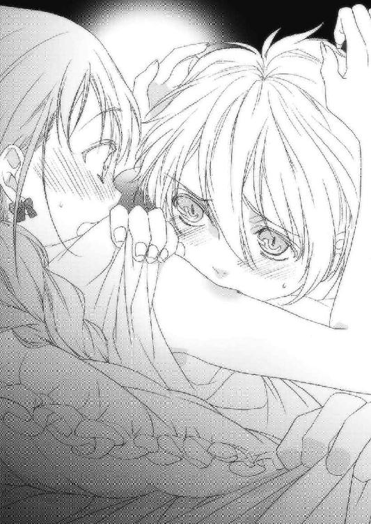
驚きとくすぐったさで小さく声を漏らすと、彼は突然背を向けてしまった。
「あ、あ......ああああっ、ご、ごめんなさいっ！」
スフィアは慌ててあたしに背を向けた。
あたしは今のはなんだったのかと、あっけにとられていた。
もっと違うことをされると思ったのに、まさか嚙まれるとは......。
「あの、スフィア？ いまのは──」
「ごめんなさい！」
「ごめんなさいばかりじゃわからないわ。あたしはあなたに全てを捧げる覚悟があるんだから！」
布団を剝ぎ、スフィアの肩を摑んで強引にこちらに体を向けさせた。
スフィアは涙目で震えていた。
「何故、そんなに怯えているの？」
「だって......その......レベッカに嫌われたんじゃないかと──」
「バカね！」
あたしはスフィアを力一杯抱きしめた。
「レベッカ......ぼくは、普通じゃないんだ。人を好きになればなるほど......ううっ」
震える声で言うスフィアから、必死さが伝わってきた。
「もう大丈夫だと思ったのに......心に決めたのに！」
スフィアの目から、ぼろぼろと涙が零れた。
「それだけあたしのこと、好きになってきてくれてるってこと、かな？」
「え......!?」
「そんなことで嫌いになったりしないよ、スフィア」
あたしは笑った。
スフィアの心配なんか吹き飛ばしてあげるつもりで笑った。
「大丈夫。あたしはあなたの妻、レベッカよ。大丈夫......」
あたしたちはそのまま横になった。スフィアはあたしを優しく抱きしめてくれた。
そして──そのまま寝息を立て始めた。
窓から差し込んできた月明りに映された彼の寝顔は、とても幸せそうだった。
第三章・裏 カナクとネウ
暖かな春の雨が、村に降り注いでいた。
この長雨が終わる頃には、日差しのまぶしい夏が来る。
僕とネウはレインコートに身を包み、薬草が入った鞄と魔術用のワンドを持って村へと降りた。
村に住んでいるのは大半がご老人で、こういう日は足や手の節々が痛む方が多い。だから僕らは村の西側から往診していき、体の痛みを訴える方に痛み止めの魔法をかけて、ネウが調合した特製の薬草を塗った。
痛みが抜けたご老人は僕らにお礼を言い、いろいろと持たそうとしてくれるのだけど、それは晴れたら聖神殿へ持ってきて下さいと言って丁寧に断った。
もし来れれば元気になった証拠だし、そうでなければ再び診察に出る。僕はこの村でそういうルールを作っていた。
村の西から南にある湖側へと診察を続け、東を経由して村の中央にある村長ボーラさんの家を訪れた頃には、もう日が暮れ始めていた。
古傷の施術が終わると、ボーラさんはシャツを着ながら口を開いた。
「ふう、助かったぜ。いつもありがとよ、神官さま。それにお嬢ちゃんも」
「いえ、当然の役目なので」
ボーラさんの傷痕はかなり多かったが、背中の火傷が最も酷かった。
「これぁよう、中央平原でセレンディアに従軍してた時にダークエルフの連中から食らった傷なんだ。まさかその傷をダークエルフであるお嬢ちゃんが診てくれるとは、皮肉なもんだなあ」
「う......も、申し訳ありません」
ネウはびくびくしながら俯いた。
「いや、誤解のねえように。ネウちゃんは何も悪くねえよ。それどころか、ネウちゃんみたいな闇種族がいるってことは救いでもあるんだ。頼むから、いつまでもこの村にいてくれよな。ネウちゃんの薬草と笑顔で救われるヤツあ、いっぱいいるんだからな」
「あ、ありがとうございます」
ボーラさんは無精髭に手をやりながら、破顔するネウの頭を撫でた。
僕らはボーラさんの家を出て帰路についた。雨足は徐々に強まり、僕はたっぷりと水を吸った土の道で転ばないよう注意深く歩いた。
「あ、う......わやっ！」
べちゃり、という音がしたので振り返ってみると、ネウが見事に顔から転んでいた。
「だ、大丈夫？」
「うう、つめたいけど、大丈夫ですー」
この辺りは雨が強く降ると霧になりやすい。視界も悪くなるし、早く戻らないとネウが風邪を引いてしまう。
「早く聖神殿に戻ろう」
「はい......あ！」
僕はネウの手を握り、支えになった。
多分、このほうが早い。
「あ、ありがとうございます」
「いいんだよ。さあ行こう、もうすぐだから」
僕は羽織っていたレインコートをネウに着せた。
「それよりも、早く体を温めなきゃ」
「はい！」
僕はネウと手を繫いだまま、早足で坂道を上り始めた。
聖神殿に戻ると、僕は広間にある暖炉に薪をくべてネウに毛布を与えた。
「ううー、すっかり冷えてしまいました」
ネウは顔についた土をぽりぽりと落としながら、火に手をかざしている。
「ネウってああいう状況だと、高確率で転ぶよね」
「はうっ、す、すいませんー」
「いや、責めているわけじゃないんだけどね。ただ、おかしくて」
僕がくすくす笑うと、ネウは恥ずかしそうに頰を染めた。
「そうだ、お風呂の準備をしてきてあげるよ」
「え！ そ、そんな！ あたしがやりま......っくしゅっ！」
「ネウはもう少し温まってなよ。風邪をひいたら大変だ。僕だって、お風呂掃除くらいできるんだから」
「はーうー、重ね重ねすみませんー」
「いいんだよ、気にしないで」
僕は風呂場に向かった。
ここの風呂場はそれほど大きくないので、掃除はすぐに終わる。あとは浴槽に水を張り、脱衣所の横にある部屋のかまどに火を入れればいい。
思い返せば、ユーリエもお風呂が大好きだった。石碑巡りの旅で立ち寄った森の町ジェノアで浴びたシャワーは、とても気持ちよかった。壁一枚挟んでいたとはいえ、まさかユーリエと一緒に入ることになるとは思わなかったけど。
目を閉じると、あの時の胸の高鳴りが蘇ってくる。湯気に包まれた木の香りが、爽やかな石鹼の香りが、軽やかに耳をくすぐる飛沫が......そしてユーリエの足音、全身を熱くさせる、彼女の声が。
僕は浴槽に水を張り、浴室を出てかまどに火を入れ、力なく壁に背を預けた。
胸に手を当てて乱れる呼吸を、鼓動を早める心臓を、火照る体をゆっくりと静める。
ユーリエ......ほんの些細なことから、君を思い出すんだ。
切ない想いで、胸が潰れそうになるよ。
共に旅をして、共に笑いあって、時には喧嘩もして。
君との旅はドキドキの連続で、本当に楽しかった。
あんなことさえ起こらなければ......。
僕はよろよろと広間に戻り、ネウに声をかけた。
「ネウ、お風呂沸いたよ。早く入っておいで」
「はい、それじゃお言葉に甘えて」
ネウは申し訳なさそうに、広間から出ていった。
僕はしばらく椅子に腰掛け、天井を眺めていた。
頭の中が真っ白だった。
気がつくと、ネウが薄い紫色のネグリジェに身を包み、髪を拭きながら部屋に入ってきていた。
「あの、お先に頂きました。ありがとうございます」
「あ、いや、いいんだよ。じゃあ、僕も入ってくるね」
頭から冷水をかぶりたい気分だった。
僕はネウに微笑んで立ち上がり、部屋を出ていこうとした、その時だった。
通り過ぎようとした僕の手を、ネウが摑んだ。
「............？」
ネウは何故か寂しそうに俯いていた。
「どうしたの？」
「か、カナクさん、その、ひとつ聞いていいですか？」
「うん？」
「だ、ダークエルフと人間が結ばれることって、あり得ると思いますか!?」
唐突に凄い質問だった。ど、どう答えたらいいんだろう。
村で好きな人でも出来たのだろうか？
「じょ、常識で考えれば、あり得るとは言い難いかな。一般的には、敵対関係にある種族だからね」
「少なくともあたしは、カナクさんに敵対心なんて持っていません！」
「うん。僕だって、君には敵対心どころか、好意を抱いているくらいだよ」
「好意......」
ネウの手が熱くなり、握る手の力が強くなった。
そうか、考えてみればネウは故郷を遠く離れ、同族のいないこの村で長いこと暮らしてきたんだ。
僕はバカだ、そんなことにも気づいてあげられないなんて！
「ネウ、君は寂しいんだね？」
僕はネウを優しく抱き締めた。
「あっ......カナクさん......」
「ごめんね、気づいてあげられなくて」
ネウは僕の胸に顔を埋めた。
「あたしの気持ち、通じちゃったんですか？」
「うん」
「あう、恥ずかしいです......」
「恥ずかしがることなんてないよ。それはとても自然なことだと思うし」
「は、はい」
「ダークエルフと人間が結ばれるっていうのはあまり聞かないだけで、絶対にないとはいえないと思うよ」
「そ、そう思いますか！ そういうのもアリですか!?」
「強い想いがあれば、どんな高い壁だって乗り越えられるさ」
「カナクさん......」
僕はネウの肩に手を乗せて体を離した。
「じゃあ──」
「はい、いつでもどうぞ！」
目を閉じて顔を上げるネウに、言った。
「お風呂に入ってくるね」
「へ？」
「え？」
「あ、あ、そうですね、ふつうはそっちが先ですよね！ いってらっしゃい！ あたし、待ってますから！」
「先に寝てていいよ。僕もすぐ寝るから」
「ええっ！ そそ、それはその、ベッドに行け、ということですか!?」
「うん、そうだけど？」
「カナクさんて、積極的......」
「え？」
「何でもないですっ！ ネウは喜んで、ベッドに行かさせていただきます！」
ネウは頰に手を当てたまま、とたとたと広間を出ていった。
喜んで、って......？
僕はお風呂から上がると、広間に行って暖炉の火を落とした。
外は相変わらず雨が降り続いている。
どうやらこの雨は明日まで続きそうだ。
ため息をついて広間を出ようとしたその時、燭台の明かりがドアの側にいる何かを映し出した。
ネウ......じゃない！
もっと背が高くて、男のようだ。
「誰だ!?」
僕は素早くワンドを腰から引き抜き、その黒い影に向けた。
第四章・表 夕闇の影砲士
「うわっ......あっ！ いたっ！」
朝、スフィアの騒々しい叫び声で目が覚めた。
隣に目をやると彼はそこにおらず、ベッドから落ちていた。
「んあ......おはよう、スフィア。大丈夫？」
「ごごご、ごめんなさい！」
「何が、ごめんなさいなの？」
「あ、いえ、その......なんでもない」
「あたしの存在を忘れてたわね、スフィア」
「うう、ごめん」
「まったくもー。あたしはこのまま起きるけど、あなたはもう少し寝る？」
「あ、うん。まだ少し眠いかな」
「じゃ、またあとでね、スフィア」
あたしはベッドに戻った彼の頰にキスをして、着替えを始めた。彼は驚いて布団を頭からかぶってしまった。
女性恐怖症なのかな、スフィアって。
着替えが済むと、あたしは外に出てお掃除用具とバケツを用意し、気合を入れて食堂を掃除し始めた。
食こそ、命の基本。命を頂くこの場所こそ、真っ先に綺麗にしなければ。夢中になって掃除をしていると、外から妙な打撃音が聞こえて来た。
音は海側からするようだ。
不思議に思ったあたしは城門をくぐり、海側へ行ってみた。
「なに......これ......」
そこであたしは、あまりの異様な光景に絶句した。
打ち寄せるしぶきが、風になびく波が、遠くまで広がる海の色が......。
全て、真っ黒だった。
これが、海？
確かに潮の香りはするし波の音だって海そのものなのに、色が黒いというだけで、ここまで底知れぬ嫌悪感をもよおすものだとは。あたしはふと、ウルグローブの神官さまが黒き海について話してくれたのを思い出した。
『キンドリーの更に果てに、黒き海が広がっている。そこに住む者は国王陛下に逆らった罪人の中でも、最も凶悪な者たちだけだ。決して、近づくでないぞ──』
重罪人......ザイルが？
ジョンさんが？
とてもそうは見えないけど......。
あれ？
ザイル......ザイラス？
まさか、ザイルが、あの!?
「驚いたかね、嬢ちゃん」
「ひゃわあああああああああああっ！」
突然、頭上から声が降ってきて、あたしはその声に驚き飛び跳ねた。
ジョンさんだった。
彼は破損した城壁を補修していた。お年のわりには身が軽く、四箇所に掛けた梯子を器用に渡りながら、崩れた箇所に鉄の楔を打ち込んでいた。
「お、おはようございます、ジョンさん」
なるべく脅かさないように、柔らかく耳に届く声で挨拶をした。
ジョンさんはあたしの顔を見ると、にっこりと微笑んだ。
「うむ、おはよう」
「ジョンさん、この海は──」
「これが〝夕闇の海〟じゃ。間違っても入ってはいかんぞ」
「頼まれても入りませんよ！」
「はは、それもそうじゃな。この海には影の巨人を構成する力が溶け込んでいる。下手に足を踏み入れれば、瞬く間に引きずり込まれてしまうぞ」
「あう。せっかく泳げると思ったのに......」
「はっはっは、それは諦めなきゃならんな」
「ジョンさん、お手伝いしましょうか？」
「いいや、手伝いはいらん。ここには最低限の限られた人数しかおらんから、誰一人として仕事がない者はおらんし、皆それぞれその自分の仕事に誇りを持っておる。この老いぼれとて例外ではない。だから気にせず、お前さんはお前さんの仕事をするがいい」
あたしはスカートの両裾を持ってお辞儀すると、振り返って食堂へ走っていった。
掃除をあらかた終えた後は四人分の朝食の準備をし、食料庫を掃除した。
しばらくしてジョンさんが休憩に戻ってきたので、とうもろこしのスープを出すと、それを美味しそうに飲んで、また外へ出て行った。それからもあたしは休みなく居住区をかたっぱしから掃除していくと、二階の一室から寝起きのザイルが出てきた。
もう昼になる時間だった。
「ふあぁ......よう、お嬢ちゃん。よく眠れたか？」
「こんにちはザイル。あなたほどじゃないわ」
むすっとするザイルに埃を浴びせかけた。
「むあっ！ な、何しやがるっ！」
「どいてどいて！ お掃除の、じゃ、ま、よっ！」
「掃除ってお前、朝からバタバタやってたのは......」
「あたしよっ！」
「まるっきり休みなしでか!?」
「これくらい、牧場生まれじゃ当たり前なのよっ！ さっさと一階に降りてよ！」
「う、おわっ、そんなに急かすんじゃ──だ、だああああああああああっ！」
箒でザイルの足をひと撫ですると、彼は転がるように一階へ降りて......落ちていった。
それにしてもまったく、よくこの環境で暮らせるわ。積もりに積もった埃は層となって固まり、まるで地層のようになっているし、三階の部屋は図書室以外使われていなかったせいで特に酷かった。
三階はとりあえず図書室だけに絞ることにしよう。ここは本棚が所狭しと並び、さらに本棚から溢れた本が中央のテーブルにぎっしりと積まれている。
うう、これは手ごわそう。ここも後回しにしようかと思ったその時、一冊の古びた本が目に入り、あたしは思わず足を止めた。
『マールの軌跡』
背表紙にそう書かれたその本に不思議と興味が湧き、箒を横に置いて手に取った。
それはこのアレンシアの神として崇められている、マールの物語だった。
「その本に興味があるの？」
気がつくと、戸口にスフィアが立っていた。
「あ、ごめんなさい。勝手に入っちゃって」
「いや、いいんだよ。ここはみんなが自由に入れる場所だから」
スフィアはあたしの隣に来ると、本を覗きこんだ。
「マールの軌跡、だね」
「うん。あたし本を読むのが好きでね、ウルグローブ・マール聖神殿にある本は殆ど読んだのよ。でも......この本は見たことがないわ」
「それはこれだけある蔵書の中でも、特別なものなんだ」
「特別な？」
「その本は遥か昔、ぼくの祖先が著者から直接もらったんだって」
「ちょちょちょ、ちょっと待って！ ひょっとしてその人って旧約マール史を書いた、ノートリアスって人じゃないの!?」
「そうだよ。よく知ってるね」
「凄いじゃない！ マールの偉業を伝えた人に、直接手渡された本だなんて！」
あたしは思わずその本をそっとテーブルに置いて飛び退いた。
「いいんだってば。靴は履くために、服は汚れるために、本は読むためにあるんだから」
スフィアはテーブルに置いた本を取ると、あたしに手渡した。
「ここには本以外に娯楽はないからね。好きな時に、好きなだけ読んでいいからね」
彼はそう言って、部屋を出ていった。
あたしは丁重に本を棚に戻し、図書室の掃除を始めた。こんな貴重な本がある部屋が埃だらけでは、いくら何でも本がかわいそうだ。それにたまには空気も入れないと、大切な本が傷んでしまう。
本を読むのは大好きだけど、あたしはその環境にもこだわりたい。青空の下で風吹く草原に寝転がりながら読む本、雨の日に窓際で雨音を感じながら読む本、夜更けにコーヒーをいれて、燭台の下でしっとりと読む本......それぞれが、違う楽しみを持っている。
『マールの軌跡』という至高の本を読むのに、この図書室の環境は残念ながら劣悪極まりない。整然と並ぶ本に囲まれて、真っ白なクロスを掛けたテーブルに一つだけ燭台を置いて、紅茶を片手にページをめくる。
想像しただけで、何て素敵な時間だろうと身震いした。この本を読むには、それが最高の環境だ。あたしは夢中で棚の本を整頓し、テーブルに積まれた本を片付けていった。
気がつくと、開け放った窓からひんやりとした風が入って来た。外に顔を出すと、辺りは既に日が暮れていた。
晩ご飯の支度、忘れてた！
あたしは急いで掃除用具を片付けて食堂に行くと、そこには既に三人が座っていた。
「おーう、嬢ちゃん、掃除をよう頑張ったの」
「あんまり遅えから、もう晩メシを先に食っちまおうかと思ったぜ」
ジョンさんとザイルがあたしを見て言った。
「あ、あれ？ ご飯の準備は？」
「今日はザイルさんが作ってくれたんだ。さ、椅子に座って食べよ！」
「え、ザイルが!? 料理なんてできたんだ！」
あたしはほんの少しだけ見直して椅子に座り、テーブルを見て大いに見損なった。パンとハムと焼いたチーズが......大きなお皿に丸ごと載っているだけだった。
「これ、どうやって食べるのよ！」
「決まってんじゃねぇか。ナイフで好きなだけ切って食え」
そう言って高らかに笑うザイルだったけど......笑えない。しかもジョンさんもスフィアも特に不思議そうな顔をしていなかった。
なるほど、これが今までの食事なのね。あたしは立ち上がり、全ての皿をかき集めた。
「お、おい、何すん──」
「黙ってなさい！」
あたしはそれらを調理場に持って行くと、パン、チーズ、ハムを薄切りにし、間にスライスしたトマトとレタスを挟んで食堂へ持って行った。
即席サンドイッチ。同じ材料だって、何も材料だけを食べることはない。
「「「おお～～～～！」」」
あたしが三人の前に皿を並べると、歓声が上がった。
「時間がなかったから、今日はこんなもので許してね」
「いや、すごいよ！ とても同じものを使ったとは思えない！」
スフィアが称賛すると、ザイルがぶすっとした顔になった。
「そんなもん、腹に入っちまえば同じじゃねえかよ」
「いやいや、食欲をそそるかどうかも重要じゃ。お見事であるぞ、嬢ちゃん」
こんな料理とも言えないもので褒められても、逆に恥ずかしいわ。
「ささ、食べちゃいましょう。お腹すいたでしょ？」
三人は早速、サンドイッチを口にした。その顔から、その食べっぷりから、それなりに満足してくれたようだ。あたしはどうも夢中になると時間を忘れてしまう悪い癖があるみたいだから、今後は気をつけよう。
あたしはお茶をいれて三人に配ると、お風呂の支度をしに行った。昨日は疲れてたからお風呂に入ろうとは思わなかったけど、さすがに今日は汗を流したい。
あたしは外に出てお風呂のかまどに薪をくべ、火をつけた。ここのお風呂はかつて大人数で使えるようにとかなりの広さがあるもんだから、お湯を沸かすだけでも結構時間がかかる。それでもゆっくりと湯に浸りたかったから、がんばって井戸から水をくみ上げては火力を調整し、お風呂場にどんどんお湯を送りこんだ。
そうして一汗かいて戻ってくると、食堂には紅茶をすするスフィアしかいなかった。
「あれ？ 二人は？」
「もう自室に帰ったよ、レベッカさん」
あたしはスフィアの隣に腰を下ろすと、彼をきつい目つきで睨んだ。
「な、何？」
「あたしのこと、今何て？」
「レベッカさん、だけど？」
「もう夫婦なんだから、あたしのことはレベッカと呼んで」
「は、はい、以後、気をつけます」
「今！」
「はいっ！ れれ......レベッ、カ」
「よろしい」
おどおどと涙目で脅えるこの人が、王国の命運を左右する存在だとは。
そうは見えないのが、とてもおかしかった。
「もうすぐお湯が沸くから、お風呂に入れるわよ。先に入っていいからね」
「わ、それはうれしいな」
「あたし、ちょっとザイルに用事があるから、彼のところに行ってくるわ」
「うん」
あたしはサンドイッチを口に放り込み、ザイルの部屋に向かった。
ドアをノックすると、中から「どうぞー」という声が聞こえた。
鼻につく薬品の匂い、そして医学書と魔法書が並ぶ本棚。
それがザイルの部屋だった。
「何だ、レベッカか。どうした？」
「これは......薬草の根を煮込んでるの？」
「何でわかんだよ、そんなこと」
「今日ね、夕闇の海を見たわ。それでいろいろ思い出したのよ。元ガザラ王国後方支援部隊長、ザイラス・ウォートン」
その名を聞いて、ザイルの顔つきが豹変した。
「お、お前、何でそれを？」
あたしは扉を閉めると、上着を脱いでブラウスのボタンに手を掛けた。
「お、おいおい──」
上からひとつ、またひとつとボタンを外していく。
「何してんだお前！」
ザイルの言葉を無視して、あたしはボタンを全て外した。
「ザイラス・ウォートン。彼は医学と治癒魔法学に通じ、更に武人としても弓を持たせれば右に出る者はいないとまで言われたガザラの名将。ところがある時を境に、彼は表舞台から姿を消した」
「............」
あたしはブラウスを開いて胸をはだけて見せると、ザイルの顔が一気に青ざめた。
あたしの胸の中央に刻まれた、消すことは絶対に不可能な、
大きな傷痕を。
「うう、ま、まさか、お前......あの時の!?」
「これでも結構探したのよ、あなたの行方」
「う......ああ......」
「ねえザイル、この傷はあなたがあたしに与えたと聞いたわ。あなたは何をしたの？」
「そ、それは──」
「教えて」
短い言葉の中に、思い切り感情を込めた。
「......わかった。話すから、ちゃんと服を着ろ」
「うん」
あたしは後ろを向いて、ブラウスのボタンをひとつひとつかけていった。
物心がつく頃には、既にこれはあたしの胸にしっかりと刻まれていた。
長い間、訳がわからなかったこの傷。
その謎が、思いもよらずここで明らかになろうとしている。
あたしは頭が痺れるほど緊張した。
「ちょっと長くなるが、いいか？」
「もちろんよ」
ザイルはふう、と一呼吸すると、両手で顔を拭いて椅子に腰掛けた。
「あの時、俺はマール石の解析と運搬の任に当たっていた。マール石はその昔、マールが生きた時代では豊富に採れたが、今では数百年に一度しか採れないといわれているほど希少なものだ。それがガザラ鉱山で採掘されたと聞き、王は大変喜んだ。
だが俺は、そのマール石で王が何をするつもりなのかを偶然知ってしまい、既にマナをたっぷり注入してしまったマール石を密かに処分しようと考えるようになった」
「処分？」
「ああ。あろうことか王は......マール石を使って、自分の偉業を刻んだ石碑を建てるつもりだったんだ！ あの偉大なマールと自分は同等であると、内外に示す象徴としてな。
思い上がりも甚だしい行為だ！ 俺はそれがどうしても許せなかった！」
彼は涙目であたしを見つめた。その目から、噓偽りは感じられなかった。
「マール石の解析を終え、王都へ運搬中のことだ。俺は道中でガザラ市民を襲うタロン王国軍と出くわした。俺はすぐに敵兵を追い払おうと兵を向け、一人の敵兵に矢を放った。すると狙われた兵はあろうことか、幼いお前を盾にした」
「────！」
「俺は敵兵を追い払う役を部下に任せ、胸を矢で打ち抜かれて冷たくなっていくお前に、一か八か......マール石を埋め込んだ」
まるで自分のこととは思えないような話に、血の気が引いていった。
「あ、あ、あたしは一度、死んだの？」
「死んではいないが、お前の心臓は止まっている。だが、マール石が心臓の代わりとなってお前の体を動かし、育て、血液を体中に送り、お前を生かしたんだ。マール石は、それそのものにはマナは全く含有されていないが、マナの込め方や量次第で、様々な奇跡を起こせる、無限の可能性を秘めた石だったんだ」
あたしは呆然としていた。この体の中に、そんな石が......。
「俺がお前の中にマール石を埋め込んだことはすぐ王の耳に入った。それから俺は全ての地位を剝奪され、ここに送られた」
「あたしはこの先も、普通に生きられるの？」
「それは問題ないと思うが、影砲士の妻になるのは諦めろ」
「な、何で!?」
「影砲士の妻、その最大の役目は子供を産むことだ。お前の体が果たして胎児を無事に育てられるのか、出産に耐えられるかどうかがわからないからだ。普通の人間の子供ならまあ問題ないだろうが、スフィアは別だ」
「なんで、彼は別なのよ！」
「スフィアは影砲士で、普通の人間じゃないからだ」
「何か、遠回しな言い方......」
「お前は普通の人間よりも疲れないし筋力だって人並み外れているはずだが、どうだ？」
「それは、その通りだと思うわ。ウルグローブじゃ大人よりもずっと働いたし、あたしにケンカで勝てる男の子はいなかったもの」
「それはまさにマール石がお前に与えた力だ。お前は何事もなく生活していれば、人間の常識を超え、エルフ並みに生きられるかもしれない。だが子供を産むとなれば、母体から相当のマナを持っていかれる。確実にお前の寿命は縮まるし、最悪命を落としかねない」
子供を産めば、その分あたしの命が減る、ってことか。
「悪いことは言わないから、黙ってここを去れ。今ならスフィアが受ける心の傷も浅くて済むだろうからな。
お前にそんな傷を残し人生を狂わせたことに関しては本当に悪かったと思ってる。すまなかった」
頭を下げるザイルに対し、あたしは無言で彼に近づいた。
「あたしは謝罪の言葉を聞きたいから、あなたを探していたわけじゃないわ」
驚いた顔で頭を上げたザイルに、あたしは抱きついた。
「レベッカ？」
「あたしはね、ずっとお礼を言いたかったの。あたしの命を救ってくれて、ありがとう。あたしの人生を続けさせてくれて、ありがとう。あなたがいなければ、あたしはここにいられなかったのだから」
「俺を......許してくれるのか？」
あたしはザイルに満面の笑みで言った。
「許すも何も、最初からあなたに対して怒ってなんかいないよ。ただ再びこの世界で生きるチャンスをくれた恩人に、ずっと感謝の言葉を伝えたかっただけ」
「おお、おおお......」
ザイルはむせび泣いていた。きっと懺悔の念が強くて、ずっと引きずってたんだ。
あたしはザイルの背中に手を置いて言った。
「それに、あなたのおかげで素敵な旦那さまと結婚できたしね」
「！ お前──」
「あたしはここを離れないし、子供も産むわ。たとえこの身が朽ちようともね」
彼は涙を拭って、あたしの肩をつかんだ。
「止められないのか、その想いは」
「無理ね。もっとも、スフィアがあたしを嫌っていれば話は別だけど」
「それはないだろうな。アイツはお前を愛し始めている。ただアイツは人生経験が少ないせいか、幼いところがある。その想いをうまく表現出来ないだけだ」
「そっか......ならもう、何も言わないで」
あたしはザイルから離れ、部屋のドアを開けた。
「本当にありがとう。ありがとうございます、ザイラスさま」
ザイルは苦々しく微笑み、あたしは精いっぱいの笑顔を残して部屋を出た。
あたしはその足ですぐスフィアを探した。
お風呂場に行ってみると、タオルで体を拭いているスフィアがいた。
「うわあっ!?」
あたしはそのままタオルで体を隠した彼にずんずんと迫った。
「あの、ななな、何？」
「ねえスフィア、あたしのこと好き？」
「え、ええっ!?」
「あたしのこと好き!?」
彼は困惑しながら、震える唇を動かした。
「うん。好き、だと思う」
「証拠を見せて」
「え？」
「キスして」
「えええええっ!?」
あたしは目を閉じて、彼を待った。
「あ、あの、その......」
「早く！ 女の子に恥をかかせる気!?」
「わわわ、わかりました！」
彼の両手があたしの肩を押さえると、唇に熱い感触が広がった。
「ありがとうスフィア。あたしもあなたが好きになってきたと思う。まだ二日しか経ってないけど、あたしをお嫁さんとして、認めてもらえますか？」
あたしは後ろを向いて俯き、彼の返事を待った。
その返答次第で、あたしの運命は大きく変わる。
顔が熱い。胸の高鳴りを感じつつ、彼は確かに、力強く言った。
「ぼくは、レベッカさ......レベッカを、お嫁さんにしたいです！」
あたしは振り返って、彼をきつく抱き締めた。
第四章・裏 カナクとネウ
僕は素早く魔法陣を描き、呪文を唱えた！
「光明の魔法！」
呪文を唱えると、天井めがけて魔法陣が飛んでいき、明かりを灯して部屋を照らした。
「ふーん、初歩の魔法だが、陣を描く速度はなかなかのもんだな」
壁にもたれ掛かっていたその男は、僕を余裕の笑みで眺めていた。
背が高い。僕より頭ひとつ抜けている。
手入れしていないぼさぼさの茶髪に、抜け目のなさそうな眼光を放つ灰色の瞳。袖のないレザーアーマーから伸びた腕は筋肉質で、傷がいくつもあった。機動性を重視した革のズボンに、堅そうな黒いブーツ。
このいでたち、この雰囲気......盗賊!?
「何者だ？ 返答次第では怪我をしてもらうよ？」
「ぷっ、はははははは！ 俺が怪我？ そりゃ──」
ふっと、目の前から男の姿が消えた！
「無理だろ」
その男は背後から話しかけてきた。
「俺はアルマ、マスター級の盗賊だ。この距離なら誰にも負けねえ自信がある」
気がつくとアルマという男はまた姿を消し、いつのまにか机の上に座っていた。
その手にはワンドが握られている。
「あっ！」
僕のワンドだった。は、速い！
「何が目的だ！」
盗賊......まずい。
魔法陣を描かなければならない魔術師系に対して、素早さ、敏捷さを旨とする盗賊は、最も相性の悪い職業だ。
状況次第では、あの姿になるしかないか......。
「慌てんな。こっちは仕事で来てんだからよ」
「仕事？」
盗賊の仕事といえば、やっぱり泥棒？
「この聖神殿には価値のあるものなんて、何もない！」
アルマは僕のワンドをくるくると回しながら溜息をついた。
「んなこたぁ見りゃわかる。俺をそこいらのコソ泥といっしょにすんな！」
「じゃあ、何の仕事なんだ？」
アルマはひょいと机から降り、ワンドを投げてきた。
僕が慌ててそれを受け取ると、アルマは椅子に座り目を閉じた。
随分と余裕を見せてくれる。
「とある方に頼まれてね、あんたを護衛しに来たんだ」
「は？」
「あんたはちーっと厄介なモンに狙われているらしい。だから俺は、そいつからあんたを守るためにわざわざやって来たんだ」
「厄介なもの？」
「最近、妙なことはなかったか？ そいつはもうこの村に来ているという情報が入ってるんだが」
僕はワンドをアルマに向けたまま、この村で起きた出来事を遡ってみた。
でも、いつもこなしていた仕事しか思い浮かんでこない。
「いや、君の言うようなことは何も起きてない」
「じゃ、これから起こるってことだな」
何故だかわからないけど、このアルマという人物はかなり強気だ。
「僕はマールの聖神官だ。君に守られなくたって、一人で十分やっていける！」
「んー、なんか勘違いしてないか？」
またアルマの姿が忽然と消えた！
「あんたの意志なんざどうでもいいんだよ。俺はリュシオルファクルの盗賊だからな。依頼されたことは、キッチリやらせてもらう」
「リュシオルファクル！ あの、盗賊団の？」
「へえ、知ってるのか。なら話は早い」
「それでも、僕に護衛は必要ない」
アルマはじれったそうに足で床を鳴らした。
「っかー、話のわからねえヤツだな！」
「いや、十分わかってる。でも、僕を倒せる者がいるとは思えない」
「ほほう、言ってくれるな。俺の動きすら見切れないヤツが」
「君は......何もわかっちゃいないんだ」
いくらリュシオルファクルの盗賊とはいえ、こんな得体の知れない人物を受け入れるわけにはいかない。僕は無事でも、彼がダークエルフであるネウに危害を加えないという保証がない。
こうなったら、見せてあげるしかなさそうだ。
神官衣のボタンが弾け、青白いマナが上着を吹き飛ばす。
そして僕は久しぶりにこの姿になった。
長くなびく銀の髪、岩も削る鋭い爪、肉をちぎり、かみ砕く堅い牙。
幻の希少種族、銀獣人の姿に。
「まま、まさか、お前!?」
当然ながら、アルマの顔色が激変した！
「もう一度言う。僕に護衛はいらない」
「くっ......銀獣人だなんて、聞いてねぇぜ！」
先ほどと同じようにアルマが姿を消す。
でも、その動きは丸見えだ。
僕はやすやすとアルマの背後に回り、首筋を片手で摑んで持ち上げた。
「な、何だとォ!?」
「これでわかっただろ？」
ぎりっと、腕に力を込める。
アルマの全身が硬直するのを感じた。
僕が首を離すと、アルマは跳んで後ずさりし、短剣を抜いて身構えた。
「いい動きだ。本当に腕利きの盗賊なんだな」
「はあ、はあ......なーんてこったい」
アルマは無理矢理口を緩めて笑ったけど、目には恐怖の色を浮かばせていた。
「わかった、今日のところは引き下がるぜ。だがな、また日を改めてここに来るからな」
「まるで安い悪党の台詞だな」
「うるせぇ！ こっちにだってプライドってもんがあるんだ！」
「それは小さな命をかける価値があるものなのか？」
僕は眉間にしわを寄せ、牙を剝いた。
「あ、ああその通りだ。命がけじゃなきゃな、盗賊なんかできねぇんだよ！」
「ふん、ご立派だな。だが忠告しておくぞ。お前がどう動こうが構わんが、僕の周りのものに危害を加えた時は......お前がどこにいようと、僕はお前を狩るぞ」
ごくり、と唾を飲む音が聞こえた。
アルマは見た目以上に、僕に対して恐怖心を抱いてる。
「またな」
闇に溶け込むように、アルマはその姿と気配を消した。
僕は人の姿に戻り、嘆息して椅子に腰掛けた。
それにしても、何かが引っかかる。
今まで平穏無事だったこのマールの村に、何かが起きようとしているのだろうか？
どうしたものかと考えていたその時、僕は妙な違和感に気がついた。
ちょっと......待てよ。
あのリュシオルファクルが、たった一人の盗賊を送り込むだろうか？
僕を守るとか言ってたけど、とても信用できない。
となると、まだ誰かがここに来ているのか。それも、強大な力を持った何かが。
思い過ごしならいいけど、そうでないならうかうか寝てもいられない。
僕は聖神殿の外に出た。ひんやりとした空気が頰を刺し、白い吐息が夜の闇に溶けて消える。もうすぐ夏だというのに、やっぱり夜はまだ寒い。
僕は少ないマナを集め、銀獣人のマナと練り合わせて魔法陣を描く。
「対・瞬間移動魔法！」
魔法陣は強烈な輝きを放ち、光の矢が四方に向かって飛んでいった。
これで、この聖神殿の周辺では瞬間移動魔法は使用できなくなる。銀獣人のマナを込めたから、向こうひと月は効果を発揮し続けるだろう。
こうしておけば、いきなり窮地に陥ることはないだろう。
......あの時のように。
そして地面に生えていた草を数本抜き、再び魔法陣を描いて呪文を唱える。
「探知の魔法！」
魔法陣の中の草がひょこっと立ち上がり、聖神殿を囲うように四方八方へ飛んでいった。
とりあえず、これで今夜は大丈夫だろう。いちいち草が刺さってくるのが難点だけど、何者かがこの聖神殿に近づけば、この草がすぐ教えてくれる。
僕は聖神殿の扉を閉め、鍵をかけて自分に「不可視破りの魔法」をかけた後、各部屋を点検した。
アルマは盗賊なので隠れることにも長けている。現に彼がこの聖神殿に入り込んでいたことに、僕はまったく気がつかなかった。
だけど、あらかじめ知っていればそれを看破することは可能だ。
こうして聖神殿をくまなく調べてみたけど、不審な人物が隠れている様子はなかった。
ならば、あとは「探知の魔法」に任せても問題ないだろう。
僕は広間に戻り、椅子に腰掛けて一息ついた。
ふと、あのアルマという人物が狙うとしたら、何なのかを考えてみた。
この聖神殿で最も価値のあるもの。それはマールの五つ目の石碑とマールの墓標、それに古書『マールの軌跡』の三つだ。
石碑や墓標を持って行けるとは思えない。
とすると......まさか......！
僕は急いで神官室に戻り、注意深く辺りを探った。
......誰かがいる。
僕のベッド、布団の中だ。
慎重にワンドを構え、掛け布団を思い切りめくりあげた！
「いっ!?」
そこに横たわっていたのは盗賊ではなく、ネウだった！
「あ、あわわ......」
僕は慌てて布団をかけ、しりもちをついた。
な、何でネウが僕のベッドで!?
というか、緊張のあまりネウの存在を忘れてた。
考えてみれば、ネウは幻術系魔術師でもあるので、マナの察知能力に優れている。
起きてさえいれば、銀獣人が発する強力なマナに気がつかないはずがない。
僕はそっと立ち上がり、ネウの顔をのぞき込んだ。
ネウは幸せそうな笑みを浮かべながら、ぐっすりと眠っていた。
第五章・表 夕闇の影砲士
「両親はウルグローブの郊外で牧場をやってるの」
あたしたちはベッドの中で話をしていた。
紅の月と蒼の月が混じり合い、紫色の月光となってあたしとスフィアが脱いだ衣服を照らしていた。
さざ波の音が耳を優しく撫でる、美しい紫月夜だった。
「あたしは九人もいる姉弟のいちばん上だから、お父さんのお手伝いをするために朝早くから起きて牧草を準備したり、お母さんの負担を軽くするためにご飯の支度から掃除、洗濯、子守とかもして、夜遅くまで働いたわ」
スフィアはあたしの生い立ちを知りたいな、と言った。
もちろんあたしは自分のことを旦那さまであるスフィアに話すことに抵抗はない。
でも、あまりにもありきたりでつまらないよ、というあたしの頭を撫で、ぼくが好きになった人の全てを知りたいんだ、と恥ずかしそうに言った。
「それでね、あたしのお父さんって、とっても凄い人なの！ お母さんを心の底から愛してるし、あたしや弟、妹たちにも分け隔てなく接してくれたわ。
お父さんの言葉って、すごく深いの。聞いたその時は意味がわからないんだけど、いざ困ったことが起きると、決まってあたしの中にはお父さんの言葉が蘇ってきて、助言してくれるのよ」
「へえ、さすがはレベッカのお父さんだね！」
「でも今回ばかりは少し恨んだわ。だってさ、いきなり『おいレベッカ、お前今から嫁になってこい！』ですもの。最初は何を寝ぼけたことを言ってるのかしらと思ったわ」
あたしがお父さんの真似をして低い声で言うと、スフィアは目を細めて笑った。
「そっか、じゃあ君のお父さんは影砲士の花嫁に君に無断で応募したんだね」
「そうなるわね。メルガドで聞いたんだけど娘を影砲士のお嫁さんに送り出した家には、国からお金が貰えるって。だから最初はお父さんのやつ、お金に目がくらんであたしを売ったんだって、それはもうへこんだわ。夢じゃないかと思ったくらいよ。
でもね、それが現実のもので、本当に家の前に迎えの馬車が現れたときは、そりゃあもう暴れようかと思ったわ。だから、お父さんが隠していた秘密の本をさ、ぜーんぶ食器棚に入れてやったの！ 今頃、お父さんはどんな顔してるかな」
「あははは、さすがはレベッカだね！」
「でもね、あたしはお父さんを心の底から尊敬しているの。だってお父さんの言葉はいつだって間違いなかった。だからお父さんが嫁になれっていうからには、そうすれば必ずあたしが幸せになれるって思ったからなのよ」
「うん、なんかいいね。羨ましいよ」
「ねえ、今度はあなたの番よ。スフィアのお父さんはどんな人だったの？」
「酷い人だったよ。小さい頃から何でこんな痛いことばかりしなきゃならないんだ、って思ってて......大嫌いだった」
「うん......」
「いつも二言目には『そんなんじゃ立派な影砲士にはなれないぞ』って。父さんと過ごす時間は、いつも訓練の時だけだった。だからぼくの唯一の楽しみは、あの図書室で本を読んでいる時と、母さんの昔話だけだった」
スフィアは悲しそうな瞳であたしを見た。
「でも、寂しくないよ。ここにはザイルさんもいるし、ジョンさんもいる。そして何より、こんなぼくにも、やっと本気で守りたい人ができたんだから」
スフィアはもう一度あたしを抱きしめて、唇を重ねた。
それから彼はベッドの下を探り、丸いものを取り出した。
「これは影砲士との結婚の証でもあるんだ。受け取って......くれる？」
それは影砲士が使う、ガザリウムの弾だった。
「喜んで、お受け取りします」
あたしは彼の心に、満面の笑みで応えた。
その翌日から、長城に住む三人の男たちの顔つきが変わった。
影の巨人が現れるまで、あと三日。スフィアはガザリウムの砲弾を、ザイルは医療道具を、そしてジョンさんは城壁の補修に使う材料を点検している。
それぞれが、影の巨人を迎え撃つ準備を始めたのだ。そんな中であたしにできることは、ただ皆が無事でありますようにと祈りながら、夕飯の仕込みをすることだけだった。
やがて夕闇の海に日が傾いてきた頃、あたしたちは一階にある大広間に集まって、くつろぎのひとときを堪能していた。
「そうか、嬢ちゃんにとっては次が初めて巨人を見る日になるのか」
ジョンさんは熱いコーヒーを飲みながら言った。
「はい。でもあまり怖いとは感じていません。皆さんがいるので」
「はっはっは、それは有り難いお言葉じゃ。こりゃ影砲士殿も格好良い所を見せんとな」
スフィアは頭をかきながら困ったように「そうですね」とだけ言った。
「おいおいじいさん、あんまりこいつにプレッシャーかけるなよ。弾を外されて二度も砲撃したら、傷ついたスフィアを治療するこっちがたまらねぇぜ」
「ははは、そうじゃの。わしの仕事も増えるから、そりゃ困る」
ザイルはいつものように軽口を叩き、スフィアに更なる重圧をかけた。
あの日のあたしの告白に衝撃を受けたのか、ザイルはその翌日、一日中部屋でふさぎこんでいたけど、今はすっかり元に戻っていた。
「ちょっと二人とも、あまりあたしの旦那さまを苛めないで下さる？」
あたしがスフィアを庇ってそう言うと、ジョンさんとザイルは顔を見合わせて笑った。
「こりゃ、申し訳なかったのう」
「すっかり女房が板についてきたなあ、レベッカ」
あたしが膨れっ面で二人に小言を言おうと思った、その時だった。
突然ずん、と体が持ち上がるような振動に襲われた！
部屋そのものが、何かに突き上げられたようだった。
「なな、なになになに!?」
「お、おいおい、まさかこれって──」
ザイルは慌てて大広間を飛び出して行く。あたしたちも彼に続いて部屋を出て階段を駆け上がり、城壁の上へと躍り出た。
「ちょっとザイル、いきなりどうしたの？」
呆然と立ち尽くす彼は、ゆっくりと海を指さした。海の色が黒ではなく、夕日に照らされて橙色になっている。そしてその先を目で追って行くと、空と水平線の間に、巨大な人影が佇んでいるのに気がついた。
「そんなバカな、三日後のはずじゃ......」
ジョンさんも、ただそう言って衝撃を受けていた。
「ねえスフィア、あれが影の巨人なの!?」
スフィアはあたしに目を向けると黙って頷き、脱兎の如く城内へと走り出した。
「な、なぜ今日現れたのかはわからねぇが、来ちまったもんは仕方ねえ！ じいさん、レベッカを頼むぞ！」
「わかった。そっちは任せたぞ！」
「おう！」
突然の巨人の出現に、城内は俄然慌ただしくなった。
ザイルは城の中へ入り、ジョンさんは懐から双眼鏡を取り出して巨人を確認した。
「な、なんじゃ、あれは......」
双眼鏡を外して目を擦り、また覗くということを繰り返してそう呟いた。
「どうしたの、ジョンさん!?」
「巨人が......いつものものではないのじゃ！」
ジョンさんはそう言って双眼鏡をあたしに手渡してきた。いつもと違うと言われても、そのいつもを知らないあたしには、見てもきっと理解できないだろう。あたしは巨人が歩く度に生じる不気味な振動を感じながら、双眼鏡を覗きこんだ。
海の上を歩いてくるその巨大な黒い影は、目を黄色く光らせ、そこから青い血管のような模様が胸まで広がり、輝く網目が上半身を走っていた。
そして何より不気味だったのが、左胸に巨大な白い仮面をつけていることだった。
「ま、まさか、あの痴れ者が......」
冷や汗を垂らしながら何やら考え込むジョンさんの所に、スフィアが肩まである大きめのガントレットを装着し、ガザリウムの弾を持って現れた。
「ジョンさん、現在の距離は？」
「もうだいぶ進んどる。こっちの射程には入っとるが、いつもの巨人ではないぞ！」
「なんですって？」
あたしがスフィアに双眼鏡を手渡すと、それで巨人の姿を確認した。
「ジョンさん、こ、これは......」
「十日の間隔より早く現れたこと、そしてあの異形の姿......影の巨人に何らかの変化が起きたのは確実じゃな」
スフィアは双眼鏡をジョンさんに渡すと、鋭い眼光を海に向けて上着を脱いだ。
「どのみちやらなければならないことは同じです。ジョンさん、レベッカを頼みます」
「お、おう」
スフィアは上着を脱いで城壁の縁に立つと、波風に吹かれて銀の髪をなびかせた。
「こ、これから何をするの？」
あたしのその言葉に、スフィアはゆっくりと振り返ってあたしを見た。
「レベッカ、君にはまだこの姿を見せていなかったね」
一陣の風が、あたしの三つ編みをなびかせた。
「今までぼくに嫁いで来た花嫁の半分はあの巨人を見て、そしてもう半分はぼくの姿を見て、ぼくの本性を知って......逃げ出した。でも、君は──」
「あたしは大丈夫!!」
こぶしを固く握り、城壁に立つスフィアに向かって叫んだ。
「何があっても、あなたから逃げないよ！」
あたしは懐からガザリウムの弾を取り出し、それを力強くスフィアに掲げた。
「レベッカは、影砲士スフィアの妻だから！」
今まで幼く見えたスフィアの顔つきが、急に凜々しくなった。
「ありがとう、レベッカ」
スフィアがガザリウムの弾を握りしめると、弾は青白く輝き出し、彼の胸の前でふわふわと浮いた。そしてスフィアは両腕を広げ、目を閉じた。
スフィアの体が少しずつ変化し始めた。上半身の筋肉が隆起し、銀色の髪が長く伸びて波打った。耳や爪が長く鋭く尖り、口からは牙が覗いている。
「これがぼくの本当の姿......銀獣人だ」
初めて目の当たりにした獣のようなその姿に、あたしは不思議と恐怖を感じなかった。
「とっても素敵よ、スフィア」
夕映えに輝く銀の姿は例えようもなく美しく、神々しさすら醸し出していた。
「もう、何一つ迷いはない」
「え？」
彼は突然、城壁から飛び降りた！
あたしは驚いて城壁から身を乗り出すと、スフィアは魔法陣を背負い、宙に浮いた。
「ジョンさん！ スフィア、飛んでるよ!?」
「静かにするんじゃ嬢ちゃん！ 影砲士殿の集中を切らしてしまう！」
そう窘められて、あたしは口を押さえた。
スフィアは泳ぐように浮いている弾に右の手のひらを向け、マナを込める。すると弾はそれに応えるように青白い輝きを強めた。
影の巨人は夕闇を背に、一歩、また一歩と近づく。
その度に地響きが起こり、煉瓦の破片がぱらぱらと音を立てて砂浜に落ちる。
その不気味な眼光は、長城の遥か先を見ているようだった。
「あの巨人、侵攻速度も速い！」
ジョンさんは小声であたしにそう言った。
「スフィアは、あの巨人を迎撃できるんですか？」
「............」
ジョンさんは言葉を返さなかった。あたしは少し、影の巨人に対して軽く考えすぎていたかもしれない。
「嬢ちゃん......最悪の場合、おぬしだけでもここから逃げるんじゃ」
「イヤです。ここにいます！」
躊躇いはない。だって真っ正面から巨人と対峙しているのはあたしではなく、スフィアなのだ。あたしはここで、彼の無事を祈ることしかできない。
あたしは拳を握りしめ、スフィアの背中に向かって叫んだ。
「がんばってスフィア！ あたし、まだあなたを愛し足りないわっ！」
下の砂浜で医療鞄を抱えたザイルが、あたしの横にいたジョンさんが、二人して青い顔になった。あれほど静かにしろと言われていたのだから無理もない。
でも、スフィアは左手を横にのばして親指を立てて応えてくれた。
「いくぞっ！ みんな目を瞑り、耳を塞げ！」
スフィアが荒々しく叫ぶと、左手で右の二の腕をおさえ、右手を前にかざして弾に手のひらを向けた。あたしは咄嗟に耳を塞いで屈んだ。
そして次の瞬間、瞼を突き抜けるほどの閃光が走り、耳を塞いでいるにもかかわらず耳鳴りがするほどの爆音が轟いた！ 急いで海に目をやると、スフィアがこちらに向かってもの凄い勢いで吹き飛んできて、爆音とともに城壁に激突した!!
「スフィアああああああッ！」
その衝撃で城が揺れ、城壁がえぐれ、煉瓦の破片が飛び散って土埃が舞い上がった。
「レベッカぁ、スフィアのことは任せろ！ お前はあの巨人をしっかり見てやがれッ！」
ザイルの叫びに驚いて海に目を向けると、スフィアが放った弾が青白いオーラをまとって巨人に迫っていた。巨人は雄叫びを上げ、その重低音を辺りに振りまくと、両手を胸の前で交差し防御の姿勢をとる。
スフィアが放った弾が、激しい爆音を上げて巨人を直撃した！
海が衝撃を受けて波立ち、巨人は必死にその弾を、その勢いを、その破壊力をねじ伏せようと腕に力を込める。
だけど、スフィアが放った弾の威力は凄まじかった。影の巨人はじりじりとその巨軀を後退させ、その悪魔のような顔を苦悶の色に染め上げた。
そして弾は巨人の上半身を貫通し、丸ごと吹き飛ばした！
上体を失った巨人の下半身は力なく海へ倒れ、巨人の破片は黒い飛沫となって海面をばちばちと叩いた。
「やった......やったぞ！ 成功じゃあああ！」
ジョンさんが城壁の下に向かって叫んだ。
急いで下に目をやると、スフィアが激突した城壁が抉れ、砂浜に瓦礫の山が出来ていた。
「スフィア──────ッ！」
砂浜に駆け出して煉瓦の山へ向かうと、ちょうどザイルがスフィアの手当てをしているのが見えた。
「ザイル！ スフィアは!?」
ザイルは細い目をさらに細めて親指を立てた。
「大丈夫だ。意識もはっきりしているし、傷も浅い」
突然、スフィアが体を起こした。
長く伸びた銀色の髪を潮風になびかせて、彼はあたしに何事もなかったかのようににっこりと微笑む。あたしは涙をこぼしながら、思わずスフィアに飛びついた。
「お、おいおい、無茶すん──」
「いいんです、ザイルさん」
スフィアが泣きじゃくるあたしを優しく抱き、そっと髪を撫でる。
「スフィアのばか。もっとちゃんと話をしておいてよ！ すごく心配したんだから！」
「ごめん。でも影砲士というものは、言葉では理解してもらえないと思ったんだ」
あたしの手に、彼のねっとりとした血と砂が混じった液体が触れた。
「あなたは今までずっと十日に一回、巨人を撃って、こんな傷を負っていたの？」
「うん。それがぼくの仕事だから。父も、父の父も、その前の代からずっと、影砲士はそうしてきた。王国の皆が何も心配せずに暮らすためには、一人くらい割の合わない仕事をしなきゃならないものなんだって、大嫌いな父がいつも言ってたよ」
あたしはまるで何もわかっていなかった。いや、あたしだけじゃない。この国の殆どの人が、この血を流しながら戦っている影砲士のことを知らない。
そう思うと、涙が止まらなかった。
「何故泣くの？ よくやったと、笑って褒めてもらえると思ったのに」
あたしは獣の姿のスフィアの唇を強引に奪った。
そして彼から少し離れると、涙を拭いて思いっきり笑顔を作った。
「よくやったわ、さすがはあたしの旦那さま！」
それを聞いて、スフィアは人の姿に戻った。
「えへへ、今日も、頑張ったよ」
あたしは痛みに耐えながらも、無理して笑うスフィアを優しく抱き締めた。
「ああ、スフィア......あたし、しっかりあなたを愛しているわよ」
スフィアと抱き合いながら、顔を赤くしてばつの悪い顔をしていたザイルに言った。
「ザイル、あたしはこの人の子を産むわ。駄目とは言わせないわよ」
「お、おい、それは──」
驚いたザイルがあたしの目を見据えた。
「もう一度言うわ。駄目とは言わせない！」
ザイルはあたしが本気であることを悟ると、溜息をついて医療道具を片付け始めた。
「はー、俺もレベッカがどういう奴か、だいぶわかってきた。一度言い出したら絶対に曲げない、超頑固者だってな」
あたしが笑みでその悪態に応えると、ザイルはふんと鼻を鳴らして服に付いた砂を払い、踵を返した。
「スフィア、立てるなら中に来い。傷は城の中で診るぞ。ったく、ちょっと前まではガキだったのに、いい嫁が来たらすっかり男の顔になりやがって」
あたしはスフィアに肩を貸し、くすっと笑い合ってザイルの後に続いた。
「それにしても今日のことは、異例中の異例じゃ。十日間隔という原則を破り、さらに異様な姿で現れたあの巨人......」
ジョンさんは暖炉で踊る炎を見つめながらそう呟いた。あたしたちは大広間に集まり、今日起きた出来事を話し合っていた。
スフィアの治療は前回よりは早く終わったという。打ち所が良ければ、今日のようにすぐ立ち上がれるほどの傷しか受けないらしい。
「それに今日の巨人は弾が当たる瞬間、それを防御しようとした。これも明らかに、今までとは違う行動だ」
ザイルも、今日現れた巨人に違和感を覚えているようだ。
「ちょっといい？ あたしはここに来てから初めて影の巨人を見たんだけど、今までのものとどこが違うの？」
その問いにはスフィアが答えてくれた。
「そもそも影の巨人とはその名の通り全身が真っ黒で、白い仮面だけをつけていた。目も鼻も口も、今日見た変な模様もなかった。それに、巨人はいつものらりくらりとしていて、ぼくが砲撃をしても全く動じないまま撃たれていた。ところが今日現れた巨人には怪しく光る目があり、ぼくの砲撃に対して防御体勢をとった。これはつまり──」
「進化した、と見ていいのか？」
ザイルがコーヒーを手にしたまま尋ねた。
「そう考えるのが一番自然ですね」
スフィアの言葉に、場の空気が凍った。
「何か、事態は急速に変化しつつあるようじゃのう」
口を開いたジョンさんに、今度はスフィアが問いを投げかけた。
「ジョンさん、あなたがここに来たのは、確か二十年前でしたよね？」
「そうじゃ」
「何か、思い当たることはありませんか？ 何故、急にこんなことになったのか」
「ふむ......」
ジョンさんは目を伏せ、何か思い悩んでいたが、ひとつ膝を叩くと顔を上げた。
「確かにわしは、影の巨人が現れる間隔が短くなった頃のことを知っている」
「この際、知っていることがあれば教えて下さい！」
ちらっとザイルを一瞥したジョンさんは、溜息をついて話し始めた。
「その前に、影の巨人が現れる前のことを話したい。かつてメルガドやウルグローブを含めたこの辺り一帯はログナックに侵攻され、かの国の領土となっていた」
「ログナックということは、ジェド連邦ができる前ということですか？」
「そうじゃ。当時はまだタロン王国とも親密な関係じゃったから、タロンの援軍によってログナック軍をこの辺りから一掃した。
それからなんじゃ、この夕闇の海に影の巨人が現れるようになったのは。最初の巨人は皆知っての通り、上陸してしまってから撃ったもんだから、あの大漠腐になってしもたがの」
スフィアはジョンさんの話を聞きながら一冊の古びたノートをめくった。
「この歴代影砲士の記録によると、当時は三十日間隔だったようですね。ところが三十年前、突如として二十日間隔となり、ついには現在の十日間隔で巨人が現れるようになった。つまりあなたがここに来る十年前、影の巨人に何があったんですか？」
「ううむ、そ、それは......」
「ちょっと待ってくれ！」
ザイルが突然、声を上げた。
「そう言えば、基本的なことを俺は知らないぜ。ジョン、あんたここに来る前、どこで何をしていたんだ？ どんな罪で、ここに送られたんだ？」
あたしは思わず口を挟んだ。
「ザイル、罪って？」
「ここは辺境キンドリーの最果てだ。王都で何かやらかさない限り、こんな所には送られない。ジョンじいさん、俺はてっきりあんたのことを物好きな職人崩れだと思っていたが、あんたが時折見せる表情は、どちらかといえば軍人に近いな」
「ジョンさんが、軍人!?」
スフィアも、ザイルの言葉に驚いていた。
「わしの話は後じゃ。その前に三十年前に起きた、ある騒動のことを話したい」
それぞれの思惑が交錯する中、ジョンさんは緊張を破るように口を開いた。
「今から三十年前、当時のガザラ王、即ち現王の父の元にある一報がもたらされた。王都メルガドにある丘に、ログナック政権時代に築かれたものであろう巨大な地下迷宮が発見されたのじゃ。そこで当時の王は軍隊の精鋭や腕利きの冒険者からなる探索隊を結成し、地下迷宮へと送り込んだ。
迷宮の中は魔物の巣窟となっておったが、精鋭揃いの探索隊はそれらを蹴散らし、封印を破って地下二階へ降りていった。だがそこで探索隊は急遽、帰還命令を受けて引き返した」
「何故だ？ そこまで順調に進んでおいて」
ザイルに向かって、ジョンさんは厳しい口調で言った。
「王都に、ここ夕闇の長城から急報がもたらされたからじゃよ。即ち──」
「影の巨人が現れる間隔が、短くなった」
スフィアの言葉に、ジョンさんは頷いた。
「そうじゃ。それ以降、その地下迷宮は王国の機密として厳重に監視されるようになった」
「つまり、その地下迷宮にある封印が巨人に何らかの影響を与えているってのか？」
「うむ。つまり、最近何者かが迷宮に入り込み、迷宮の封印を解いてしまったのだろう」
「それでわかったわ」
あたしは立ち上がって、みんなの顔を見た。
「みんなはここに長くいるから都のことはあまり知らないでしょう。王都メルガドどころか、今やアレンシア中がガザラの地下迷宮を知らない人はいないでしょうね」
「なん......じゃと？」
ジョンさんは青い顔をして愕然とした。
「迷宮の最深部には伝説の剣が眠っているって噂が流れたの。アレンシア中の冒険者がその剣と財宝を目指して、今日も迷宮探索をしているんじゃないかしら」
「バカな！ そんな噂、誰が──」
「さあ。噂の出所まではわからないわ」
「あの地下迷宮の封印のことを知るものは、僅かのはずじゃったのに......」
「ジョンさん、あなた今日の巨人を一目見て〝あの痴れ者が〟って言ってたわよね。もしかしてその〝痴れ者〟って、現ガザラ王のこと？」
スフィアとザイルが、驚いた表情であたしの顔を見た。
「レベッカ、君は一体何を言いたいの？」
あたしは顔を伏せているジョンさんの元へ近づいた。
「今から二十年前、当時の王ガザラ十七世はクーデターによって王都を追われ、何処かに姿を消した。ガザラ王国は現ガザラ十八世が治めることとなったけど、民は重税をかけられ軍役は厳しくなり、ついにはガザラ鉱山のドワーフたちですら愛想を尽かし始めた」
ジョンさんは目を剝いてあたしを見た。
「ねえザイル、あなたは先代の王様には会ったことがないんでしょ？」
「ああ、何せ俺が王国軍に入ったのは十五年前の話だからな」
「でも、先王さまの評判ぐらいは聞いたことがあるでしょう？」
「もちろんだ。近隣諸国はおろか、かの大国フェルゴート王国ですら一目置くほどの名君だったそうだ」
「あたしもそう聞いているわ。ねえジョンさん、あなたがここに来たのが二十年前、名君ガザラ十七世が追放されたのも二十年前。あたしが言いたいこと、もうわかるよね？」
この言葉で、ザイルとスフィアは驚いて立ち上がった。
「ジョンさんの食事の作法や時折垣間見せる気高さは凡人のものではないわ。それこそ、まるで王侯貴族のようだった。さあ、答えてジョンさん！」
ジョンさんは深い溜息をつくと、観念したように力なく椅子に腰を落として言った。
「いかにも。わしが先のガザラ国王、ジョナサン・セヴティス・ティル・ガザラじゃ。現王バルディア・エイティス・ティル・ガザラは......わしの息子である」
第五章・裏 カナクとネウ
自分のベッドを占拠されてしまった僕は、結局修道士の部屋で一夜を明かした。
それはまるでセレンディアにいた頃みたいで、少し懐かしかった。
そして翌朝。雨はようやく上がってくれた。
玉になった雫がつやのいい葉っぱから跳ねて、太陽がヴァストの山々とマールの村に恵みの輝きを降らせてくれた。
空には綿のような雲が浮かび、遊ぶように形を変えてゆっくりと動いている。
先に起きていたネウは、こんないい天気とは対照的に元気がなかった。
「お、おはよ、ネウ」
「おはよござまーす」
ふにゃふにゃだった。
「ねえネウ、何で君は僕の部屋で寝ていたの？」
「だ、だって昨日、そういうのもアリだと──」
「え？」
「なんでもないです～」
ネウは肩を落とし、しょぼーんとしていた。僕、何か悪いことしたかな？
「そうだネウ、今夜から暫く、僕も修道士の部屋で寝るよ」
その言葉に、胡乱としていたネウの表情がぱっと輝いた！
「あ、そういうことでしたか！ そうですよね、いくらなんでも神官さまの部屋でだなんて、不謹慎すぎますよね！」
「へ？ 不謹慎？」
「ああーもう、あたしってばバカなんだから！ それじゃあカナクさんは昨日、修道士の部屋で？」
「うん。なかなか寝心地はよかったよ」
「あーん、もー、ちょっと考えればわかることなのに......すいませんでした！」
何で謝っているんだろう？
アルマの侵入に気づかなかったからかな？
「あ、いや、いいんだよ。昨日は僕だけで何とかなったし」
「えっ......えええええっ!? ごごごごごごごごご、ご自分で!?」
ネウの頰が真っ赤に染まり、目を丸くしていた。
「うん。ちょっと危なかったけど、何とか」
「危な......はああ、あう、あ、朝から大胆な......」
「そう？」
「こ、今夜は、絶対にお手伝いしますので、ご安心下さいっ！」
「あ、ありがとう。それで、暫くあまり一人にならないでほしいんだ」
今度は目を細めて瞳を潤ませた。
「あ、あたしをそこまで......うれしいです！」
「あの男がいつ襲ってくるかわからないし、まだ得体の知れない侵入者の可能性も否定できない。相手は何を考えているかわからないから、君を狙う可能性もある」
「しん、にゅうしゃ？」
「うん......うん？」
「あう、え、え、何ですかぁ？」
いまいち要領を得ないネウに、僕は昨夜の出来事を話して聞かせた。
勿論、銀獣人のことは内緒にして。
「──というわけで、アルマという盗賊はおそらくまだ村のどこかに潜んでいる」
「き、昨日、そんなことが......」
「昨日は僕だけで何とかなったけど、幻術系魔術師である君が側にいてくれれば、すごく心強いからね」
「あ！ そ、そういうことでしたか」
んん？
いま得心!?
おまけに、顔がもの凄く赤い。
「ど、どうしたの？ 熱でもあるの？」
「......あたま冷やしてきまーす」
ネウはよろよろと部屋を出ていった。
だ、大丈夫かな、本当に。
僕らはそれから普通に一日を過ごした。
共にマール教典を開き、食事をし、雨が上がった村を回った。
「あう......わわわわ、あんっ！」
べしゃり、とネウが水たまりに顔から転んだ。
また服が泥だらけだ。
「ひーん」
「そこ、昨日転んだ場所と同じところ......」
「うう、すいませんー」
ネウのドジさは本物だ！
「僕もすぐ戻るから、先に聖神殿に戻ってていいよ」
「はひー」
僕は素早く村を回り、村人たちの様子を窺った。
晴れの日はみんな体調もいい。畑に出る方や魚釣りに出かける方、それに買い物に行く方など、マールの村はささやかながら活気づいていた。
これなら安心だ。僕は道行く人たちに挨拶だけ済ますと、足を聖神殿に向けた。
途中、女性が水たまりの横に座ってしくしくと泣いていた。
ネウだった。
「ど、どうしたのネウ!?」
「うう、すいません......足を挫いちゃって、動けませんでした......」
「何だって!?」
僕はネウの側に駆け寄り、足首を触ると、右足が腫れていた。
「治癒系魔法は？」
「ワンドを忘れました......」
「なな、何と......」
魔術師のワンドは戦士の剣に等しい。
それを忘れるというのは、実に珍しいことだ。
「しかも同じ場所で転んだ揚げ句に足まで挫いちゃって、情けなくて......うう、えーん」
「仕方ないさ、君が悪いわけじゃない。さあ、僕の背に」
「えっ！ で、でも、大事な神官衣が汚れちゃいます！」
「本は読むために、靴は履くために、服は汚れるためにあるんだ。気にしないで、ほら」
僕はネウの手を取り、彼女を背負って歩いた。
「はうう、本当にすいません」
「いいんだよ」
背中に冷たい感触が広がり、そのあとに柔らかな温もりを感じた。
「あ、あの......」
「何ですか？」
「いや、何でもない」
昨日の夜、偶然見てしまったネウの寝姿が一瞬脳裏をよぎり、僕は目を閉じてそれを払拭した。
「ごめんね、ネウ」
「え！ い、いえ、こちらこそですよ」
「違うんだ、こっちの──」
その時、眼前の聖神殿から恐ろしいほど巨大な力を感じた！
「な、何ですか、これ!? ......マナじゃない、何かもっと、どす黒い......」
「聖神殿の中、だって!?」
探知の魔法には何の反応もなかったのに、一体どうやって侵入したっていうんだ！
僕は急いで聖神殿に戻り、礼拝堂の椅子にネウを座らせた。
「ネウはここにいて！ 僕は様子を見てくる！」
「ちょ、カナクさん!?」
僕は慌てて石碑の間へと走ると、石碑の前に全身をローブで覆った人物が立っていた。
「動くな！」
僕はワンドをその人物に向けた。
背は小さいが、もの凄い力を感じる。頰がびりびり震えるほどの力だ。
「何者だ！ どうやってここに来た!?」
その人物はゆっくりと僕のほうを向き、フードを外した。
「そ、そんな......バカな！」
彼女の顔を見たその瞬間、僕は驚きのあまりワンドを落としてしまった。
絹のようになめらかなすみれ色の髪、気品溢れる顔立ちに、まん丸の瞳。
その人物は......間違いなく、ユーリエだった。
「あたしのこと、忘れちゃった？ カナク」
忘れるもんか！
この声、その姿は、間違いなくユーリエだ！
「で、でも、どうして......君は、千年前に飛ばされて、天寿を全うしたはずじゃ......」
「あなたに会いたくて、戻って来ちゃった」
涙が出そうになった。
ああ......ユーリエだ。
僕の大好きなユーリエだ！
「カナク、会いたかったよぅ」
「僕だって......僕だって!!」
僕とユーリエの距離が一歩、また一歩と近づいた。
「あたし、カナクのこと、大好きよ」
「僕だって......君のことを愛してる！」
僕はたまらず彼女に駆け寄って思い切り抱きしめた。
「カナク......」
「ユーリエ！ ユーリエぇっ！」
........................。
..................。
............。
......。
違う！
「......君は誰だ？」
「何言ってるのよ、あたしはユーリエよ！ ユーリエ・リヴァルトよ！」
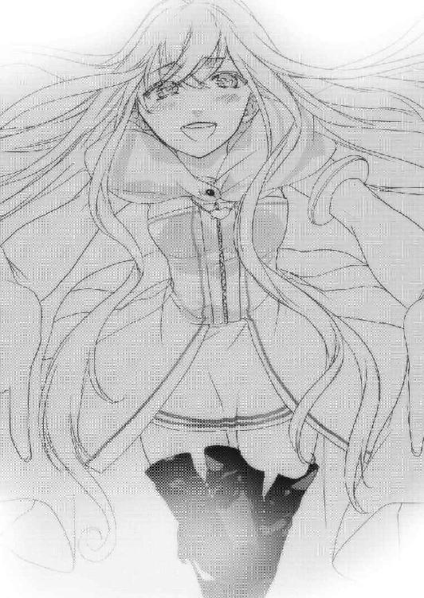
「ユーリエは自分のことを〝あたし〟とは言わず〝私〟って言ってた。君は──」
「そこまでだッ！」
その時、聞き覚えのある力強い声が響いた。
振り返ると、盗賊アルマが立っていた。
「アルマ!?」
「騙されるなバカ神官！」
「何故、君がここに──」
「いいからさっさと下がれ！」
わけがわからず混乱する僕をよそに、アルマは雷のような早さでユーリエの背後に回り込み、短剣を首元に突き立てた！
「ユーリエぇえっ!!」
僕はワンドを手にし、魔法陣を描いて叫んだ。
「反発の空波!!」
ユーリエとアルマの間にふわりと風が流れ込むと、爆発的に膨張して二人の体を吹き飛ばした。
「ユーリ──」
それはユーリエではなかった。短剣が突き刺さった箇所からさらさらと砂がこぼれ落ち、顔も体も、見るに耐えないほど崩れてしまっていた。
「あうう......」
どうしていいかわからなかった僕の背後から、別の声が聞こえた。
「火炎の霧!!」
瞬く間に崩れたユーリエの足下から炎の霧が立ち上り、ユーリエの絶叫が轟いた。
「カナクさん、大丈夫ですか!?」
それは足を引きずったまま壁にもたれかかって、ワンドを握るネウだった。
「ネウ、ユーリエが、ユーリエが......」
「落ち着いてカナクさん！ ユーリエさんはもうこの世にはいないわ！」
苦しみ叫ぶユーリエを目の当たりにして、僕は落ち着いてなんかいられなかった。
「あそこで苦しんでいるのはユーリエだ！ 早く、早く助けないと──」
どすん、という鈍い衝撃が腹に響いた。アルマの拳が、僕に突き刺さっていた。
「くうっ......なん、で」
「バカ神官が、よく見てみやがれッ！ あれが人間か!?」
ユーリエ......いや、ユーリエだったものは、炎の中で笑い始めた。
「気をつけろ！ あいつ、ただ者じゃない」
アルマは姿勢を低くして、再び両手に短剣を持った。
ネウもワンドを片手に警戒している。
「うふふ、邪魔さえ入らなければ、もっと楽にことを運べたのに」
女が腕を一振りすると、ネウが出した火柱が一瞬のうちに消えた。
「この程度の魔法じゃ、私は止められないわ」
闇のように真っ黒な髪と瞳、血のような唇に、土気色の肌。
そこにいたのはユーリエとはほど遠い、全くの別人だった。
「お前が魔導師リーゼだな!?」
リーゼと呼ばれた女が、ぎろりとアルマを見た。
「何故私のことを？」
「このバカ神官は、お前の手には渡さない！」
ざわっと、辺りの空気が変わり、リーゼからどす黒いオーラが立ちのぼった。
「ふーん。まあ、あなたのことなんて、どうでもいいか」
リーゼの体が、黒いオーラの中でふわりと浮かんだ。
「お前の目的は何なんだ!?」
アルマが短剣で顔を隠しながら叫んだ。
「ねえ、カナク」
名前を呼ばれ、ぞくりとした。
「私ね、あなたに大事なことを伝えに来たの」
「聞く耳を持つなッ！」
アルマが呆然としている僕の前に立った。
「マールは何十年もたった一人で、あなたを想いながら苦しい旅をしたわ」
「そんなこと、言われなくたって──」
「そのマールの......ユーリエの苦しみを、あなたの力で救ってあげられると言ったら、信じる？」
「な......なん、だって!?」
「この......化けモンがあッ」
アルマの短剣が金色に輝き出すと、瞬時にリーゼとの間を詰め、短剣を振るった！
「盗技・扉破り！」
リーゼの体は真っ二つに裂かれ、上体がずるずると落ちていった。
だが、不思議なことが起きた。
何食わぬ顔をしたリーゼが、アルマの短剣を握りしめたのだ。
「な、にぃっ!?」
僕は驚愕と困惑の表情を浮かべるアルマに向かって、急いで魔法陣を描いた。
「無欠防護の魔法！」
唱えたと同時にリーゼの体から黒い巨大な拳が現れ、アルマの体を殴りつけた！
アルマは目にも留まらぬ速さで僕の背後にある壁に叩きつけられた。
「があっ......うっ！」
アルマは首を垂れ、気を失った。
無欠防護の魔法は一回しか効果がない。リーゼの一撃は防げたけど、その後の壁にぶつかった衝撃はもろに受けてしまったようだ。
「話はまだ済んでいないの」
リーゼは僕とネウに向かって言った。
アルマに斬られたはずの体はいつのまにか元に戻り、リーゼの背中から黒い巨大な腕が生え床を摑んでいた。
な......何なんだ、これは！
「もう一度言うわカナク。あなたの力をもってすれば、マールを悲しい宿命から救ってあげられる。あなたが望むなら、千年前に飛ぶことすら......できる」
「あなたは、何者なの!?」
ネウが僕にしがみついてきて、リーゼに聞いた。
「私はリーゼ。夢と意識の世界・イストリアルからの使者よ」
「イストリアル？」
「今日は挨拶に来ただけ......また会いましょう、カナク」
爆音と共に黒き腕が天井を貫き、黒いオーラが吸い込まれるように天井から抜けていくと、いつのまにかリーゼの姿はなくなっていた。
ユーリエを苦しみから救い出せる？
ユーリエがいる千年前に行ける？
常識で考えれば、どちらもあり得ない話だ。
でも......それでも、心が揺さぶられるのは......何故だろう。
僕は頭を振って、ネウと共に気を失っているアルマを修道士の寝室へ運んだ。
盗賊は戦士系職業ではあるものの、隠密行動を旨とするため金属製の鎧は好まない。だがその代償として、盗賊が着用するレザーアーマーは防御力の面でかなり劣る。
アルマの鎧をゆっくり脱がせると、やはり背中に血がにじんでいた。
「カナクさんは、大丈夫ですか？」
ネウが心配そうに僕の顔を覗いていた。
「あ、うん。大丈夫」
「それなら、いいんですけど」
「ネウ、アルマに治癒の魔法をかけてあげてくれる？」
「え、ええ、いいですけど」
ネウは魔法陣を描きながらも、そわそわと僕を見た。
「さてと、僕は石碑の間を修復してくる。あのままじゃ大事な石碑が、雨ざらしになってしまうからね」
「あ......はい」
僕はネウに背を向けて、石碑の間へと急いだ。石碑の間は見事なまでに天井を破られ、そこから霧雨が石碑に降り注いでいた。まるで、石碑が泣いているようだった。
「ごめんね。今すぐ直してあげるから」
大きな魔法陣を丁寧に描き上げ、修復の魔法を唱えた。
ゆっくりと、天井の欠けた煉瓦が元に戻っていく。
ふと下を見ると、草人たちが抱き合いながら涙を流していた。
「ごめん、君たちにも怖い思いをさせたね。さあもう大丈夫だから、こっちにおいで」
草人はぴーぴー泣きながら僕に飛びついてきた。
千年前に飛ばされたユーリエが作った草人と、千年後に僕が作った草人。この子らは、僕とユーリエの絆そのものだ。僕はその場に寝ころんで、徐々に閉じていく天井から微かに降ってくる雨を体に受けた。
今まで僕はユーリエのためにできることは、この地に眠る彼女のそばにいることだけだと思っていた。
そうやって生きていくしかないって思ってた。
でも、あのリーゼという女は言った。
『あなたの力をもってすれば、マールを悲しい宿命から救ってあげられる。あなたが望むなら、千年前に飛ぶことすら......できる』
あの言葉は本当なのだろうか？
現実的に考えれば到底あり得ない。
それなのに、こんなに胸をざわつかせるのは何故だろう。
僕はそんな思いを抱きながら石碑の間の修復を終え、眠ってしまった草人たちをいつもの寝床に運んだ。
二人は石碑の台座の下に穴を掘って、そこで暮らしていた。
草人は本来、術者とリンクして遠隔操作できるように僕が作った魔法だけど、ユーリエは千年前に飛ばされた後にこの魔法を改良し、術者ではなく膨大なマナの込められたこの石碑とリンクさせた。僕もそれに倣い、時間をかけてその術式を解析し、石碑と草人をリンクさせることに成功した。
それ以来、二人はいつも一緒だ。
ずっと一緒にいられなかった、僕とユーリエの代わりに。
僕はこのユーちゃんに千年前からの、無言のメッセージを感じる。
マールは......ユーリエは、本当に僕を愛してくれた。
それこそ命をかけて、僕を求めてくれた。
できることならば、その思いに応えたい。
でも、でも......。
僕は石碑の間を静かに出て、ネウとアルマがいる寝室に向かった。扉を開けようとドアノブに触れようとしたその時、部屋の中から会話が漏れ聞こえたので思わず手が止まった。
「へー、アルマって一流なんだ」
ネウの声だ。
「ばーかにすんじゃねぇよ小娘がッ！ 俺ぁリュシオルファクルでもちったぁ名のある盗賊だぞこらっ！」
「ふーん」
「なんだその興味なさそうなリアクションは！ 気にいらねぇ～!!」
「んで、あんたはこれからどーするの？」
「しばらく、ここで厄介になってやる」
「え、えええええええええええええええっ!?」
「今日のことでわかった。俺はここにいないとダメだ！」
「嫌あッ！」
ネウが全力で拒絶した。
「なっ、何でだよ、俺がいたっていいじゃねえか！」
「カナクさんはあたしが守るんだもんっ！」
「守れてなかったじゃねぇか......」
「これから頑張るんだもん！ あんたはボーラさんのとこに行きなさいよ！」
「は？ 誰だそりゃ？」
「ここの村長さん」
「おっさん？」
「うん」
「何で俺がおっさんとひとつ屋根の下で寝泊まりしなきゃならねぇんだ......」
「とにかく嫌なの！ イヤイヤ嫌ぁ～っ！ 絶対にイヤ！ 出てけどろぼー！」
「ど、泥棒って言うな！ 俺らはそのへんのヤツからは銅貨一枚盗まないんだっ！」
「こそどろ！ さっさと帰ってよ！ ここは神聖なるマール聖神殿なんだから！」
「こそ......ははぁーん、読めたぞー？ お前、そんなこと言って、ただ単にあのバカ神官とイチャイチャしたいだけなんだろ？」
「俺がいたら邪魔だもんなぁ～。まさか、今夜あたり何か狙ってたんじゃないのかぁ？」
「ちちち、違うもんそんなんじゃないもん！」
「おい、ドジ修道士」
「何よ！」
「すけべ」
「............むっかぁ─────っ！」
僕は手を下ろし、扉に背を向けた。
ネウもついてるし、あれだけ元気なら彼は大丈夫だろう。
それより、あのリーゼの言葉が頭から離れなかった。
......少し、考える時間が欲しい。
僕はそっとその場を離れ、神官室に向かって歩き出した。
翌朝。
朝靄に包まれた村は、陽を受けて幻想的な様相を呈していた。
マールの村は、本当にいい村だ。
空気も水も冷たくておいしいし、表情豊かで飽きることがない。
「おはようございます、カナクさん」
朝の礼拝をしていた時、背後からいつものようにネウの声がした。
「おはよう、ネ──」
その顔を見て、思わず僕の口が止まった。
頰は腫れ、腕や足は擦り傷だらけだった。
「どっ、どうしたのそれ!?」
「あのアルマとかいう男、なかなか......」
「やりあったんだ......大丈夫？」
「平気です！ それよりもカナクさん、あの男は盗賊のくせにしばらくここにいるつもりですよ!?」
「そう。なら、それでいいんじゃないかな？」
「え────っ、何故ですか!?」
「彼がいれば、賑やかになるからね」
賑やかなほうが、いろいろと悩まなくて済みそうだから。
リーゼのこととか......ユーリエのこととか。アルマが何を企んでいるのかはわからないけど、今の僕に必要なのは、彼のような人にもそばにいてもらうことだと思った。
「かっ、カナクさんには、あたしがいるじゃないですか！」
真っ赤な顔をして、ネウが叫んだ。
「うん。友達として、とても有り難いと思っているよ」
ネウの肩がすっとーんと落ちた。何故!?
「それにねアルマって、それほど悪い人じゃないよ」
「あっ、あたしのこの顔を見てもですか!?」
「うん」
「どこがです!?」
「アルマは、これまで一度たりとも君をダークエルフだと蔑んでいない。違う？」
「............！」
「だから、きっと仲良くなれるよ」
「でで、でも、盗賊ですよ!? 闇職業ですよ!?」
「闇種族である君が、闇職業を差別してはいけないよ」
「う！」
「たとえ闇種族であろうと良い人はいるんだってことを僕とユーリエに教えてくれたのは、君なんだからね」
「ううう、はい」
僕はネウに微笑んだ。
「あ、あの、か、カナクさん、昨日あのリーゼという女が言っていたカナクさんの力って、何なんですか？」
僕はネウの目を見つめて、暫し逡巡した。
「......気になる？」
「全然そんなことないです、と言えば噓になります」
「そう......」
僕は目を閉じて、静かに上着を脱いでいった。
「かー、かかかかっっかか、カナクさん!?」
「友である君に見せないのは、不公平だったね」
僕は体の奥底に眠る力を、ゆっくりと解放する。
長く伸びる銀の髪、硬化した爪、獣の牙。
僕は銀獣人の姿を、ネウに見せた。
「これが僕の本性、銀獣人だ。この姿になれば、魔法陣をワンドなしで素早く描けるし、どんな屈強な戦士にも負けない自信はある」
ネウは驚くか怯えるかするかと思いきや、何故か頰を染めていた。
「か、か......」
「うん？」
「かっこいい」
「ええっ!?」
「あ、いえそのあのなんでもないです！」
狼狽するネウに微笑み、僕はまた人の姿に戻った。
「まさか、カナクさんが銀獣人だったなんて......驚きです！ 銀獣人って、今まで噂でしか聞いたことがなかったですから」
「噂？」
「はい。特にガザラでは、マールに並ぶ国の守り神として崇められているそうです！」
「へえ、そうなんだ」
「それに何といっても、このアレンシアで最強の希少種族ですもの！」
「だから、僕はリーゼに狙われたんだと思う」
「そ、そんな......!!」
その時、礼拝堂の入り口に気配を感じた。
「おはようアルマ。どうやら怪我はもういいみたいだね」
「へえ、バカ神官は鼻が利くんだな」
ネウが驚いて顔を跳ね上げると、そこには額に大きな絆創膏を貼ったアルマがいた。
「おでこ、どうしたの？」
アルマは恥ずかしそうに顔を赤くした。
「き、昨日、ちっとだけ不覚を取ったんだよッ！」
「チョコマカすばしっこいんで、幻視の魔法で部屋中を透明にしただけですよ」
「まったく、アルマの名が泣くぜ！ まさか逆手に取られるとはよ！」
あの素早さで何かに激突したのか......それは痛そう......。
「ま、それでドジ修道士とは和解だ！」
「あたしだって、ほっぺた痛いんですよ？」
「おあいこだろ！ 気にすんなよ♪」
アルマは豪快に笑いながら、ネウの肩をばしばし叩いた。
「んじゃ、飯くおーぜ！ 支度、ヨロシクなー！」
「ちょ......手伝えー！」
すたすた出て行くアルマを追って、ネウもぷんすか怒りながら出ていった。
あの二人、案外気が合うのかな？
第六章・表 夕闇の影砲士
「ななななな、なんだとォ──────────！」
ジョンさんの告白にザイルは椅子から転げ落ちて驚き、スフィアも口をぽかんと開けたまま固まっていた。
「じゃがの、わしは今の生活のほうが気に入っておる。ジョンじいさんと言って仲良くしてくれる人もおるしのう」
「しかし先代さま、影の巨人の侵攻が現実のものとなりつつある今、あなたに出来ることは、やらねばなりません」
「嬢ちゃん、わしはもう七十歳を超えた老人じゃ。今更、何が出来るという？」
「人は年齢じゃねえ！ 強い気持ちがあれば、何歳だろうが凄いことが出来る！」
突然、ザイルが声を上げた。
「するとザイル、お前さんはこの老いぼれに今一度立ち上がれと言いたいのか？ 二十年も前に追放された、このわしに？」
「今のままじゃ、どの道ガザラ王国は影の巨人かタロン王国か、もしくはジェド連邦に攻められて崩壊するんだろ？ だったら、やれることはやろうぜ。
それに、じいさんは自分が考えているよりもまだまだ元気だ。俺が保証する！」
ザイルの言うとおりだろう。何せこの城壁を修復していた時の動きなんて、とても七十を超えている方の動きではなかった。
「しかし、そんなに簡単に国を覆せるものではない」
「じいさん、とにかく今は時間がないんだ。巨人を撃てる砲弾はあと三つ。今の状況から考えて、弾の補充は望めないだろう。やるしかないんだ！」
二人のやりとりを聞いて考え込むあたしに、スフィアが声をかけた。
「レベッカ、君は何を考えているの？」
「バカ王様に代わって、賢君に今一度ご出馬願える方法を考えているの」
「それって、クーデターじゃ？」
「向こうだってもともとクーデターで政権を強奪した連中じゃない。おあいこよ」
「それは、そうだけど......」
あたしたちはジョンさんの顔を見た。
困惑しているというか、迷惑そうな表情だった。
「悪いが、そんなのはお断りじゃ」
「何故!? 今のままでは、国が滅ぶのよ？」
ジョンさんは今まで見たことがないような威厳を放った。
「わしはクーデターなど望んではおらん。途方もない時間を国と民とが争って、何になるというのじゃ」
「先王さま、あなたの唯一の欠点は、その考え方ですわ」
「なんじゃと？」
ここは何としてもジョンさんの理屈を論破しなくてはならない。
あたしは拳をきつく握り、ジョンさんと向き合った。
「二十年前、あなたが王国内の商会と不正取引し私腹を肥やしているという噂が流れ、世直しという名目でミスティカにいたあなたの四男が兵を挙げました。
戦力はガザラ王国軍側のほうが圧倒的に有利だったにもかかわらず、あなたは自らの罪を認め、追放された」
「そ、それは違う！ あの時、わしの側近たちはほとんど買収され、殆どバルディア側にまわっていたのじゃ。兵力差はあってもこのまま両軍がぶつかれば、ガザラの国力は一気に半減する。ミスティカ公国はそれを狙っておったのじゃ！」
「そうか......あれは、ミスティカの策謀だったのか」
ザイルが唇を嚙む。
「残念じゃが、バルディアにはそれが見えなかった。市民を守り、国力を維持するには、わしがあえて濡れ衣を着て、王座から去るしかなかった！」
ジョンさんの無念はいかばかりだろうか。国を愛し、民を愛し、平和を愛した先王さまは、涙ながらにその座を追われていたんだ。
「だからわしは、いまさら表舞台に出ようとは思わん。国を混乱にたたき落とし、多くの血が流れるクーデターなぞ、まっぴらごめんじゃ......」
「でも、あなたのその考えが、あなたの子供たちや王妃さまをはじめとした、多くの人々を犠牲にした」
ジョンさんは、その言葉で顔色を変え、目をむいた。
「そ、そ、それはまことか？」
「現王は自分に従わない兄や姉、それにお母上さますら......お労しいことです」
「おお、おおおおおおおお......」
ジョンさんは両の手で顔を覆い、泣き崩れた。
ザイルは顔を背け、目を閉じる。
でも今は悲嘆に暮れている時じゃない。
あたしはジョンさんの肩をしっかりと抱き、強い口調で続けた。
「いいですか、先王さま。現王の無道は枚挙に暇がありません。過ちを正すためにも、このクーデターは絶対に必要なのです」
「うう......」
「それに、あなたは少々勘違いしてます」
あたしは強い口調で言った。
「ジョンさんはあたしが血で血を洗う凄惨なクーデターを起こそうとしていると考えている。でも、あたしが考えているのはもっと違うことですわ」
「違う、こと？」
「ずばり、ガザラ王国無血クーデター」
あたしがそう強く叫ぶと、ジョンさんは重く嘆息した。
「そんなの不可能じゃ」
そう言うジョンさんに対し、意外にもスフィアは目を輝かせた。
「無益な争いを起こさずに相手を屈服させるには、カリスマ性を持つ強力なリーダーと、絶対的な戦力があれば可能です！」
ザイルは肩をすくめて苦笑した。
「だがな、リーダーはじいさんがいれば何とかなるかもしれないが、絶対的戦力なんてどこにある？ これだから素人は何を考えているのか──」
その時、ザイルの顔色が変わった。
「ま、まさか......そうか、そういうことか!?」
あたしは笑顔で着席し、紅茶を一口飲んだ。
「なんじゃ、ザイルまで」
ジョンさんの言葉が耳に入っていないのか、ザイルは顎に手を当てて考え込んだ。
「ザイルには少し計画が見えたみたいね」
「ああ、大体な。それにしても、本気か？」
「勿論よ。だからあたしは明日、王都に行って王様と掛け合ってくるわ。あなたたち三人はその後で、残ったガザリウム弾を全部持って王都に来るように」
「ちょ、そんなことをしたら影の巨人が──」
スフィアはハッとして口に手を当てた。
「まさか、レベッカ......」
「スフィアも気づいたみたいね」
「き、君は、思い切ったことを考えつくんだね！」
あと一人。
「おいおい、一体何がなんなんじゃ？ わしにはさっぱりわからんのだが」
「さっきザイルが言ったでしょう。クーデターに必要なのは強力なリーダーと絶対的戦力だって。両方ともここにあるじゃない。先王であり名君だったガザラ十七世というこれ以上ないリーダーと、夕闇の海から歩いて来る絶対的戦力が」
「あっ、あああああああああっ！」
ジョンさんは手を叩いて唸った。
「で、でも、もし影の巨人をメルガドの中で撃ってしまったら、百五十年前の悲劇が繰り返されてしまうぞ？」
「その前に、大漠腐あたりで巨人を撃ち果たす必要はありますけど、どうせ弾がなくなれば巨人は王都に向かってまっしぐらです。
この国の人々は、百五十年もの長きにわたって享受されてきた平穏が、影砲士のおかげでもたらされているということを知らない。
だから、二度と影砲士の足を引っ張るようなことをしないように、王都の連中に影の巨人を見せつけてやる必要があるのです。そのためにも──」
あたしはジョンさんの手を取った。
「こんな好機は二度とないのだから、ジョンさんには絶対に立ち上がってもらうわ」
「そ、そんな......」
「息子の悪行を親が窘めないで、どうするの！」
「うう、それは、そうじゃが──」
「ジョンさん、いえ、先代さま。この王国を救えるのは、あなたしかいないの。父は子を導き、子は父を助ける。それが王家に生まれようが牧場に生まれようが関係ない、親子のあるべき姿じゃないの？ 違う？」
ジョンさんの手が、力強くあたしの手を握りしめた。
「わし、今年で七十二歳じゃよ？」
「でも元気じゃん」
「老い先短い身なんじゃよ？」
「だから、今やらないでどうするの!?」
「............」
重い沈黙があたしたち四人を包み込み、ぱちぱちという暖炉の中から聞こえる薪の燃える音だけが辺りの空気を動かしていた。
「全て、お前たちの言う通りじゃ。この年になっても足腰丈夫で元気に動けるのも、マールのご加護なのかのう。
わかった、その案に乗ろう。わしは全身全霊、老い先短いこの命をかけて、あのバカ息子を叱り飛ばしてくれる！」
スフィアもザイルも、意を決した顔つきになった。
「よぉし、何だか燃えてきたぜ！ ガザラ王国内中の隅から隅まで、片っ端から檄を飛ばしてやる！ レベッカ、俺もその策、乗ったぜ！」
そこにいたのはいつもの気の抜けた男ではなく、経験豊富な歴戦の勇者だった。
「とりあえず今日はここまでにして、明日の朝にもう一度話を詰めましょう」
スフィアが暖炉の火を落とすと、ジョンさんとザイルは頷いて部屋を出ていった。
「ねえレベッカ、ぼくについてきて」
「え？ うん」
そう言われ、あたしはスフィアの後を歩いた。
あたしを連れてきたのは、二階にある古びた軍備が納められた部屋だった。スフィアはその部屋の奥にあるチェストの鍵を開け、赤い布にくるまった物体を取り出した。
「これを、君に受け取ってもらいたいんだ」
スフィアからそれを受け取ると、大きさの割にはかなり軽かった。
「あ、ありがとう。開けていい？」
「もちろん」
丁寧に布をめくっていくと、中から出てきたのは紅に輝く美しい胸当てだった。
「鎧？」
「うん。指輪とか宝石とか、そういったものでなくてごめんね。でもこれは初代影砲士セリオが愛用していた魔法の鎧だから......きっと君を守ってくれると思うんだ」
「着けてみていい？」
「うん」
その胸当ては少しサイズが大きかったけど、着けてしまうとあたしの体にぴったりと合うように形が変わった。
「ありがとうスフィア。どんな高価なものよりも、この鎧に勝るものはないわ！」
あたしは万感の思いで彼を抱きしめた。
スフィアはあたしに口づけし、頭を優しく抱えた。
「気をつけて。マールのご加護がありますように」
「ありがとう......ありがとう！」
彼の温もりに身を委ねながら、あたしは自分に課せられた使命の重さに、心が熱くなるのを感じていた。
翌朝、あたしはスフィアからもらった紅の胸当てに剣を携え、長城で一番足が速く元気な馬に乗って城を後にした。牧場育ちだから馬術には自信があったし、辺境とはいえさすがに城で育てられた軍用の馬は足の強さが違った。
あたしはキンドリーの村と王都メルガドの間にある小高い丘で一晩を過ごし、朝になるとすぐ馬に乗って駆けた。
脳裏を過ぎるのは、長城を出立した時に見せてくれた愛しいスフィアの笑顔と、小憎たらしくも賢くて、偉大な父の髭面だった。
スフィアは、どうしてるかな。初めて長城に行った時は、いろんな意味でこんなことになるとは思わなかった。体は急いでメルガドに向かわなくてはならないのに、長城から離れるごとにこみ上げてくる切なさが胸をかきむしる。
そしてお父さん。
一度命を落としかけたあたしだったからこそ、厳しく手をかけて育ててくれたのだろう。あの頃は父の教えを半分も理解できなくて、家を出たくてしかたなかった。
でも、いざ本当に離れてみると、父があたしに叩き込んできたもの一つ一つが克明になって色づき、香りを放ち、形を成し、あたしの中で強力な武器となっている。
ありがとう、お父さん。ありがとう、スフィア。
あたし、がんばるからね。
泡を吐き続ける腐った大地・大漠腐を左手に森の中の細道を抜けると、目の前に巨大な城壁が姿を現した。
アレンシア北東部に君臨し、十八代続くガザラ王国の王都、メルガドだった。
王都メルガドは何度か来ているから、よく知っている。
ヴァスト山脈から流れてくるジュリキュール川を利用した天然の要害であるこのメルガドは、内堀、中堀、外堀の三層からなる堀が張り巡らされており、王城にたどり着くまでにあと三つの跳ね橋を通過しなくてはならない。
外郭にあたるエリアは労働者階級が暮らす住居や旅人たちのための市場、宿屋などが軒を連ねている。西のジュリキュール川上流には、例の地下迷宮がある。
中心には王宮がそびえ、上流階級の貴族や、軍事施設、マール聖神殿などが王宮を守るように取り囲んでいる。
走りっぱなしで疲れが見えはじめた馬の首をさすりながら、あたしはそのまま城門にやって来た。
衛兵にキンドリーの長城からの急使であることを告げると、影砲士スフィア署名の手紙を見せただけですんなり通してくれた。
それから三つの橋を渡り、王宮の前まで駆けに駆けてきた。
「待て！ 何者だ!?」
あたしは馬を降り、行く手を遮る衛兵に声をかけた。
「夕闇の長城からの急使です。取り急ぎ王との面会をお許しいただきたい」
「何、長城から？ 身分を証明するものはあるか？」
「あたしは影砲士スフィアの妻、レベッカです。影砲士の手紙を持参しました。とにかく急いで、この国の存亡に関わることよっ！」
「わ、わかった。では確認してくるので、ここで待たれよ」
衛兵は城の中へ入って行ったが、それから一向に戻ってくる気配がなかった。
急使だと言っているのに。苛立ちが募り、そろそろ勝手に踏み込もうかと思い始めた矢先に、先ほどの衛兵が汗を滴らせて戻ってきた。
「急使どの、待たせてすまない。君の身元は確認できたよ」
「それで王は会って下さるの？」
「そ、それがな......そのう、今は朝食中なので後にせよとのお言葉だ」
「は、はあっ!?」
あたしは瞬時に頭に血が上り、くらりとよろけた。
「あ、あとどれくらい待てばいいの？」
「そうだなあ、王のお食事は時間がかかるからな、あと三時間くらいか」
「話にならないわね」
あたしは衛兵を突き飛ばすと、勝手に中へ押し入った。
「王はどこで食事を？」
「待て待て待て！ いくら影砲士の妻であろうが、勝手に城に入れるわけには──」
あたしを止めようと割って入ってきた衛兵の腹に、思い切り拳を叩き込んだ。
衛兵は苦悶の表情を浮かべ、声も立てずに倒れた。
「な、き、貴様！ 何をしている!?」
「女がたった一人で、我々に刃向かうのか!?」
たちまち十人の衛兵があたしを取り囲んだ。
大の男が女一人に対し、こんな大勢で槍を向け威嚇してくるとは。
あたしは怒りと情けなさで溜息がこぼれた。
「さあ、痛い目にあいたくなければ──」
何かさえずっていた衛兵の側頭部にあたしの素早い回し蹴りが綺麗に入り、衛兵はあえなく小石のように飛び跳ねながら堀へ落ちていった。
「き、き、貴様ァ！」
「うるッさぁ──────────────い！」
腹の底から怒りを込めて、城中に響きわたらせるように吼えた。衛兵たちはあたしの恫喝に怯み、槍を持つ手を緩めた。
「私はキンドリーから国の一大事を伝えに来た使者である。ことは一刻を争う故、女の身でありながら体に鞭打って馬を走らせここまで来た。
その返礼がこれとは......情けないことこの上ない！ こうなれば影の巨人に城ごと踏みつぶされてから、あの世で存分に後悔するがいいッ！」
その時、突然地面が静かに震え、動揺がさざ波のように衛兵たちに広がった。
「この揺れは......またか！」
混乱する衛兵たちとあたしの背後から、太い声が降って来た。
「狼狽えるな」
いつのまにか開かれていた城の扉の奥に、一人の男が立っていた。揺れが収まると、金色の胸当てに茶色のズボンを穿いたその人物が、ゆっくりとあたしたちのところへ歩いて来た。金色の髪、威厳を湛えた髭、そして全身から漲る威圧感。
ただ者ではなさそうだ。
「こ、これは、ヴォード将軍」
ヴォード将軍。
聞いたことがある名前だった。
「ご使者どのの声はよく響いた。彼女の言うことはもっともだ。それに今の地震も気になる。ここには二名だけ残り、あとは町に被害がないか確認してこい！」
「は、はい！」
衛兵たちは将軍に敬礼すると、怯えた野ウサギのように去って行った。
「さて、君は影砲士の妻だそうだな。長城で何かが起きたのか？」
ヴォード将軍は、あたしを試すような目を向けた。
「ここで話すことではありませんでしたわね。ですが、本当に急を要するのです。もう間もなく影砲士は巨人を撃てなくなります。そうなる前に、王様に嘆願しに参りました」
「そうか。陛下は食事中だが、私と行けば何とかなるかもしれない。ついて来たまえ」
「ありがとうございます、将軍」
まだこの城にも、礼儀と話が通じる人がいたんだ。あたしは少しだけ見損なった気分を持ち直し、将軍について行った。
だがそんな気分は、城に入って再び地に落ちた。
食堂は城の二階にあるという。そこに向かう途中、何ともきらびやかな調度品の数々が綺麗に飾り立てられてあった。
ふかふかの絨毯、大瀑布を思わせるような水晶のシャンデリア、黄金でできた無数の燭台、油を使った見事な絵画、大理石の階段。
市民は重税で飢え苦しみ、若い男子は労役と軍役に駆り出され、長い間ガザラに貢献してくれたドワーフ族とも敵対している。
そんな疲弊した国の城だとは、とても思えなかった。
「......悪く思わないでもらいたい。私も君と同じ思いだ」
どうやらあたしの表情から、考えていることを察したようだ。
「あなたは、少しはまともな人みたいね」
「苦言は、甘んじて受けよう」
ヴォード将軍は豪勢に飾り立てられた扉を叩き、返事を待たずに扉を開け中に入った。
「食事中だ！ 話は後にしろと言ったはずだぞ！」
朝食とはとても思えない豪勢な料理が純白のテーブルクロスの上に並び、後ろには二人の衛兵が、壁際には十人近くのメイドが静かに立っていた。
部屋もまさに贅沢の極みで、見たこともない絵画や壺などが置かれている。そして二十人は座れようかというテーブルの奥に、派手に着飾り、少しでも威厳を見せようと薄い髪を束ねた小男がいた。
これが現王・ガザラ十八世か。やっぱ頭の悪い王様っていうのはこうでなくちゃ。
「ヴォードぉ、またお前か。それにもう一人、その小汚い娘はなんだ。しかも娘の分際でそのような鎧を身に纏うとは」
一瞬カッとなりかけたが、将軍が前に出てあたしを押さえた。
「お楽しみ中申し訳ありませんが、火急の知らせをこの娘が持って来ましたので」
「その話はさっき衛兵から聞いた。だが、いかなる場合であろうと余の食事の邪魔は許さん。貴様だってわかっているだろう、ヴォード」
「しかし......」
「目障りじゃ、下がれ！ まったく、貴様のむさ苦しい顔を見たら、油っこいものが欲しくなった。これ、豚を一頭丸焼きにし、脂がのったところだけ持って参れ」
メイドは王の命令を受けるとひざを軽く曲げて返答し、部屋を急いで出て行った。
「すまん、使者どの。ここは一旦下がろう」
あたしの肩を摑んでそう言うヴォード将軍の手を、力強くはたいた。
「茶番はもう結構」
あたしはどかどか足音を立てて王に向かって行った。
「使者どの、落ち着け！」
将軍の声に、あたしは怒声を浴びせて答えた。
「落ち着け？ それは無理でしょう将軍。はるばる辺境から大事を伝えに来た急使にこんな態度で応対するバカ王様を目の当たりにして、落ち着いてなんかいられるか！」
バカ王様は目をぱちくりさせて驚き、真っ赤になって怒り始めた。
「きき、きさま、いまなんと申した！」
「バカ王様って言ったのよ！ バカじゃ気に入らなかったなら、愚鈍とか暗君とか愚昧とか暴君とか、そちらを使わせてもらうけど？」
「だだ、誰か、誰か来い！ この小娘を地下牢に連れて行け！ 今すぐだ！」
怒りを爆発させたガザラ王は声を裏返らせて怒鳴った。すると、メイドたちは悲鳴を上げて部屋から逃げ去り、王の背後にいた二人の衛兵が槍を振りかざして襲って来た。
「バカね、槍は振り回すものじゃないわ」
あたしが力いっぱい衛兵の腹に蹴りを入れると、王様の脇をすり抜けるように吹き飛んでいった。
もう一人は槍を捨てて剣を抜いて斬りかかってきたが、あたしはそれを難なく躱し、カウンターで顎に拳を突き刺した。
かわいそうな衛兵は天井に頭を打って失神した。
「ぬうう、ヴォ────ド！ おお、お前がやれ！」
あたしは振り返ってヴォード将軍を睨みつけた。
今まで一国の将軍と戦ったことはないけど、正直言って負ける気はしない。ザイルがその地位を捨ててあたしに与えてくれた力は、そんなに軽くない。
将軍は嘆息して目を閉じ、剣を抜いてその切っ先をあたしに向けた。
第六章・裏 カナクとネウ
アルマが聖神殿を訪れてから一週間が過ぎた。
僕とネウはアルマと共に朝食を取り、村を巡回し、いつものように働いた。
アルマは朝食後にいつの間にかいなくなっていたけど、夕飯の頃になるといつの間にか食卓についている。
今日の夕飯は、ネウが腕によりをかけて作ってくれたポトフだった。
「んー、味はまあまあだが、量が少ねぇなあ」
アルマはまたネウがカチンと来るようなことを言い出した。
「何よ！ 全く手伝わないくせに、文句だけは超一流なんだから！」
「おうっ、文句だけとは何だ！ 気にいらねぇな！」
「ならさっさとおウチに帰んなさいよっ！」
「い、や、だ！」
「何でよ！」
「俺は命令されるのが大ッ嫌いなんだ！」
「だったらずっとここにいなさいよっ！ これは命令よっ！」
「そうか、ならそうさせてもらうぜ」
ネウは瞬時にして頭に血を上らせた。
「なによなによなによーっ！ 言ってることが違うじゃないのーっ！」
「臨機応変っていうんだ」
「使い方が間違ってるわよ、このこそどろー！」
「コソドロっていうなっつったろうが！」
「何度でも言ってやるわよ、こそどろ！」
「この......バカ神官一人誘惑しきれない小娘が！」
「んなっ、そそそ、そんなこと......」
「もう少し乳でかくする魔法でも勉強したらどうだ、この貧乳娘！」
「おっぱいはかんけーなあーいっ!!」
子供のケンカだね、まるで。
僕はまたそっと食堂から抜け出し、神官室へ向かった。
アルマが何を好きこのんでこんな田舎の聖神殿に滞在したいのかはわからないけど、彼のおかげで僕やネウは楽しい時間を過ごせていた。
だけど......だからといって、あのリーゼの問題が解決したわけじゃない。
リーゼはいつか、必ずまた僕の前に姿を現すだろう。
彼女が口にした「イストリアル」という言葉は聞いたことがある。
それはアレンシア北東にある名家ガザラ王国の伝承だ。アレンシアの人々は、眠りにつくと肉体から精神が離れ、夢の世界イストリアルへ向かうという。
人々はそこで浄化され、幸せな夢を見て、アレンシアに帰って目覚めるのだ。
また、こんな話もある。
『悪いことばかりしていると、魔王があんたを気に入っちゃって、イストリアルから帰してもらえなくなるよ！』
子供に、親が言い聞かせる言葉だという。
それにユーリエが最後に使った魔法、禁術アルヴァダーグ。その最後の詠唱にも確か「イストリアル」という言葉があった。
だからたぶん、イストリアルというものは存在するのだろう。
リーゼはそのイストリアルから来たと言った。
そして......僕の力を使えば、ユーリエを救えると。
何が噓で、何が本当なのか。
考えれば考えるほど、頭が熱くなった。
もし、もし仮にリーゼの言うことが全て本当だとしたら、僕はどうすればいい？
僕は石碑巡りの腕輪を身につけ、石碑の間へ行った。
ユーリエが残した、最後の石碑。
僕は久しぶりに腕輪を石碑にかざし、魔法陣を呼び出した。
あなたは、無事にこれを見ているでしょうか？
すべてを思い出すのに時間がかかってしまったの。ごめんなさいね。
私は、あなたの世界では「ユーリエ」という名前でした。でも、この世界では「マール」と名乗っています。私が、あの「紅の魔女」だったんだよ？ 信じられる？
この世界にやってきた時、私は殆どの記憶をなくしていましたが、あなたとの楽しかった旅の記憶だけは、私の中にしっかりと焼き付いていました。
その朧気な記憶こそが、私の支えでした。
あなたの本当の姿を見た時はちょっと驚きましたが、私の気持ちは少しも変わりませんでした。
不器用で理不尽で乱暴な私で、ごめんなさい。優しい言葉ひとつかけられない私で、ごめんなさい。
そしてこんな私と一緒にいてくれて、本当にありがとう。
私は、この地で眠ります。
でも、あなたの旅はまだ始まったばかりです。
しっかりと、強く生きなさいよね！
そして私の分まで、幸せになるのよ！
最後に、これだけは伝えさせてね。
私はいつまでも、どこまでも、あなたを愛しています。
双月暦５４５年 千年後のあなたへ、ユーリエより
僕は倒れるように寝転んだ。
ユーリエが望んだのは、たぶんこの世界で僕が幸せになることだと思う。
でも、そんなのずるいよ。
君は、僕を何十年も想いぬいてくれたじゃないか。紅の魔女として人々から罵り蔑まれながらも......僕を忘れようとはしなかったじゃないか！
暁の賢者マールのことは、子供の頃から学んでいたからよく知っている。どんなに辛い旅をしたのか、どんなに酷い目にあったのか。
それだけに、リーゼの言葉が僕の胸を締め付けた。
自然と、涙が頰を伝う。そんな僕に草人たちが心配そうな顔を浮かべて近づいてきた。僕は涙を拭いて、草人たちの頭を指で撫でた。
二人は嬉しそうに笑うと、また石碑のそばの小さな洞に戻っていった。
ユーリエ、僕は君を忘れることはできない。
僕も、あの草人たちのように、君のそばにいたい。
もしそれが本当に叶うなら、たとえ全てを捨ててしまっても......。
僕は寝室に戻ると、ベッドには入らず堅い石の床で横になった。
この村は山に囲まれている上に、この聖神殿は更にいちばん高い丘にあるので、春が来たとはいっても夜になるとかなり冷え込む。
ユーリエはもっと寒い真冬の夜でも、暖かい布団で寝ることを許されなかったのだ。なるべく草が茂っているところを探し、身を縮めて寒さをしのいでいたという。
千年前に飛ばされたユーリエの辛苦は、並大抵のものではなかった。人から罵られ続けたのもそうだけど、暑さや寒さ、雨や雪、飢えと渇き......決して熟睡できない環境の中で、やっと眠りについたと思えば魔獣や盗賊団、暗殺者に襲われる。
ユーリエはありとあらゆる苦しみの中に叩き込まれたのだ。
なのに僕は......のうのうと暖かいベッドで横になり、毎日の食事を欠かさず、ネウやアルマらと楽しく日々を送ってしまっている。僕は目を閉じて、背中から伝わってくる床の痛みを感じた。こんなもの、ユーリエの痛みに比べれば、痛みにすら入らない。
もっともっと、僕は苦しまなくてはならない。ネウの献身やアルマの豪放さに引きずられて、僕が背負っているものの重さを忘れてはならないのだ。
その時、寝室のドアが静かに開いた。
力なく頭をドアに向けて、思わず目を剝いた。
そこに立っていたのはネウだった。
窓から差し込んでくる明かりに照らされた彼女の姿は、体のラインが透けて見えるほど薄いブラウスに、下着だけという格好だった。
僕は慌てて体を起こし、目を背けた。
「ネウ、その格好は......」
「カナクさん、何も言わないで」
「でも──」
刹那、ネウがそのままの姿で僕に抱きついてきた。不意を突かれた僕は、彼女に押し倒された。息も白くなるこの寒さの中で彼女の体はすっかり冷え切って震えていた。
「カナクさん......あたしを、温めてください」
「な──」
「あたし、カナクさんが考えていること、わかっているんです。カナクさんは表には出さないけど、あのリーゼという女の言葉に相当揺さぶられてます。もしあの女の言うことが本当だったら......もし本当に千年前に行けて、ユーリエさんの元へ駆けつけられるならと」
「ネウ......」
「でも、ユーリエさんはそんなこと望んでいないです。石碑にも書いてあったじゃないですか！ あなたはこの世界で幸せになってほしいって！
ユーリエさんの願いは、この世界でのカナクさんの幸せだったはずです！」
「でも、それは──」
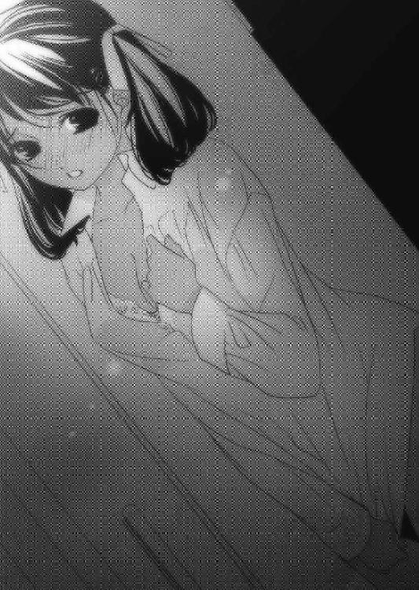
「あたしじゃダメですか？」
僕が驚いて言葉に窮していると、額を冷たい涙が打った。
ネウは潤んだ瞳から、想いを込めた涙をこぼしていた。
「あたしは、カナクさんのことをずっと好きでした。あたしが大好きなのは、あなたなんです！ 石碑巡りの旅を終えてここにとどまったのは、もちろんユーリエさんを偲び続けたいという想いもあります。
でも一番の理由は、カナクさんのそばにいたかったからです」
ネウは震えながら、僕をぎゅっと抱きしめた。
「あたしはダークエルフです。汚れた体を持つ闇種族です。こんなあたしがカナクさんのような立派で優しい人を好きになっちゃいけないことだってわかってます。でも......それでも......ひっく......うう......あうう」
ネウが涙で顔をくしゃくしゃにしながら、必死に自分の想いを形にしようとしていた。
「ネウ、僕は君を汚れているとは思ってない。君のように友達を思い、行動に起こせる人はそうはいない。君の魂はフェイエルフにも劣らないほど綺麗で、澄んでいると思う」
「友達だからじゃないもんっ！」
ネウは力強くそう叫ぶと、僕の唇を強引に奪った。
「友達だからじゃないんですよ......あたしは、あなたに千年前ではなく、この世界でちゃんと幸せになってほしいんです。ユーリエさんの想いを引き継いで、あたしがあなたを幸せにしたいんです！
その為なら、こんな体で良ければ、好きに使って構いませんから......う、ううう」
言葉以上に、心で伝わってきた。
ネウは、僕に夢を見るのはよせと言いたいんだ。
確かにリーゼの言うことに信憑性はない。しかし、僕のせいで千年前に飛ばされて、苦しみの中で死んでいったユーリエを救えると言われれば、僕の心が揺るがないわけがない。
一方で、僕をこんなに必要としてくれている人がいる。神官としての地位を与え、眠るユーリエのそばにいさせてくれている人がいる。
それも、紛れもない事実だ。
僕は体を起こし、ネウをベッドに運んだ。
「あ......」
横たわるネウの額にそっと口づけをし、布団を掛けてあげた。
「かなく、さん？」
「僕は、君が望むことをしてあげられない」
「............」
「僕の中でユーリエの存在は絶対で、それは一生変わることはない。だから軽々しく君と、その......そういう関係にはなれない。
でも、君の想いはちゃんと伝わったよ。ありがとう」
ネウは涙を浮かべて掛け布団を口まで引き上げると、目を細めて頷いた。
「本当にありがとう、ネウ」
ネウの髪を撫で、僕はそっと部屋を出た。
そのまま聖神殿の外まで歩いて、天を仰いだ。
満天の星が美しく瞬き、蒼の月が紅の月を追いかけるようにゆっくりと動いていた。
僕とユーリエは、あの月のようなものだ。追いかけても追いかけても、決して交わることのないあの二つの月のようだ。
夢を見るのはよそう。
僕が生きているのは、今この現実なのだ。
レニウスやリリルが、アルマが、オリヴィア女王さまが、グウェイル大神官さまが、ソーンさんやヤヒロちゃん、セレンディアの神官さま......そしてこのマールの村の人々と、ネウがいるこの世界が、僕が生きる場所だ。
ユーリエのことは決して忘れてはならない。でも、ユーリエに固執するあまり、僕のことを心配してくれる人たちに迷惑をかけちゃいけない。
それを教えてくれたのはネウだ。
彼女の必死の訴えはしっかりと僕の心に響いた。
そして僕に冷静な判断力を取り戻してくれた。
そうなのだ。僕はユーリエの元へ行けるかもという言葉に踊らされて、それを発したリーゼという謎の存在を疑わしく思うことを忘れていた。
リーゼとは、一体何者だろう。本当に、イストリアルから来たんだろうか。
ユーリエの姿を模写し、アルマの剣をその身に受けても平然としていた。あれは魔法でも妙な術でもない。少なくとも、あんな体を持つ種族はこのアレンシアには存在しない。
はたして僕は、リーゼに打ち勝てるだろうか。
いや、打ち勝たなければならない。
僕を大切に思ってくれた人のために。
この世界で、生きていくために。
第七章・表 夕闇の影砲士
「使者どの、悪く思わないでくれ」
あたしは将軍と激しく視線を交わす。
ヴォード将軍は......本気だ。
だからこそ、改めてこの人は信頼できると思った。
たとえ理不尽な命令でも、王命とあらば受け入れる。
それは忠義の人である証だ。
「将軍。残念だけど、それはあたしの台詞よ」
あたしは口元を緩めて、ヴォード将軍が向ける剣の刃を握った。
「な......く、くっ!?」
ヴォード将軍が持つ剣は、びくともしなかった。
「なな、何をしておるのだヴォード！ 早く片づけよ！」
王がヒステリックに金切り声を上げる。あたしがじろりと睨むと、王は小さく「ひっ」と悲鳴を上げ、体を硬直させた。
「そう簡単にいくと思わないでね。あたしは誇り高き影砲士の妻なのだから！」
あたしは本気で手に力を込めると、甲高い音と共に剣が砕けて折れた。
「ば、バカな......これは魔法の剣だぞ！ そ、それを片手で!?」
将軍は目を丸くする。
「ヴォード！ ええい、この役立たずが！」
んー、どう考えてもこのバカ王にあのジョンさんを追放出来るとは思えない。
この王には、器量も知恵も力も足りない。
そんな王がクーデターを起こせたとすれば──。
「何の騒ぎだ、ヴォード将軍？」
背後から臓腑を抉られるような、暗い声がした。
振り返ると、煌びやかに飾りたてられたローブを着て金の眼鏡をかけた、線の細い初老の男が立っていた。
「サリュー丞相！」
あたしはその声で、その男に目を向けた。
丞相は大臣や将軍よりも格上で、王に次ぐ権威を持つ位だ。それだけに一目見ただけで頭の回転が早そうな人物だと思ったけど、同時に胡散臭いものも感じた。
なるほどね。二十年前、バカ息子を担いで反乱を起こしたのは、この男か!?
「おお、よく来てくれた、丞相！ この無礼者を早々に追い出してくれ！」
丞相は蛇のような目つきであたしを見て、口を開いた。
「陛下はご多忙である。話は私が伺おう。二人ともついて参れ」
有無を言わさぬ口調とその声に、あたしは背筋が寒くなるのを覚えた。
このサリューという人物、何か胡散臭い。
でも今はその考えを一旦止め、丞相の後を追った。
丞相は大広間にあたしと将軍を通した。
「さてと、私も先ほどキンドリーから急使が来たと報告を受けた。お主、レベッカと申したか、その火急の話とやら、早速伺おう」
あたしは訝しみながらも、長城で起きた出来事について話した。将軍は半信半疑といった具合で、丞相は目を閉じて静かにあたしの報告を聞いていた。
無理もない。ここ王都メルガドにいれば、遠くキンドリーのさらに奥地で起きている出来事なんて、他人ごと以下なのだろうから。
「そうか......影の巨人が......」
「さらに、影砲士が巨人を撃つために必要不可欠なガザリウムの弾は、残り三つです。影の巨人が次にいつ襲ってくるか読めない状況で、この数は少なすぎます。直ちに、ガザリウムの弾を調達して頂きたいのです」
サリュー丞相は暫く考え込んだ後、重そうに口を開く。
「残念だが、ガザリウムの弾はもう手に入らん」
「な......何故ですか!?」
「先日からガザラ鉱山のドワーフどもが鉱石を上納してこないのだ。おかげで我が国は、貴重な資産の一つを失った」
その原因を作ったのは、お前たちのくせに！
「王がドワーフ族に頭を下げて、今まで通り親交を温められては......」
「なぜ誇り高き我々ガザラの民が、石臭いドワーフなぞに頭を下げねばならんのだ？」
............絶句するしかない。
「影砲士には今しばらく待てと伝えよ。もうまもなく王都にある地下迷宮の探索が終了し、伝説の剣と莫大な財宝が手に入るのだ。その中にはガザリウム製のものもあるはずだろうから、それを精錬して弾を作り、すぐ長城に届けさせよう」
ああ、やはり地下迷宮に手を出していたのね......。
あたしは今すぐ暴れたい衝動に駆られたけど、それをしてしまえば全てご破算だ。
ここは拳を握って耐えるしかない。
「丞相。その地下迷宮探索隊に、直ちに帰還命令を出して下さい！」
「何だと？ そんなことが出来るわけないだろう！」
「先代国王様が何故、地下迷宮を立入禁止にしたのかをご存じですか!?」
「地下迷宮にはログナック統治時代の魔物が棲んでいて危険だからではなかったか？」
「違います！」
あたしがジョンさんから聞いた話を丞相に聞かせると、サリュー丞相は胡散臭そうな目つきであたしの話を聞いていた。
「その話には、証拠も根拠もないのではないか？」
半信半疑、いやむしろ一信九疑といった表情だった。
「あたしがキンドリーを出立する前日、十日間隔で現れるはずの巨人が七日目に来襲してきました。そして事実、あなた方は地下迷宮に人を送り込んでいた。過去に起きた出来事、今起きている出来事。これは状況的に十分論拠になると思いますが」
丞相はむう、と唸る。もともと頭のいい人なんだから、あたしの言っていることはすぐ飲み込めているはずだ。
「それに、迷宮の地下に降りる階段は封印されていたと聞いています。誰も到達したことがない迷宮の最深部にそんな財宝があるなど、誰がどうしてそれを知り得たのですか？」
「言われてみれば......それは確かにおかしな話だな」
今度は隣にいたヴォード将軍が思わずそう漏らした。
「先遣隊は我が国が誇る聖騎士団長エッジを隊長とする一団だが、私の配下の兵士たちも後続隊として地下迷宮に潜っている。先ほど地震があっただろう、あれは地下迷宮の封印を破った時に起こるらしい」
「将軍、それ以上の口外は許さん！」
丞相が鋭い目つきで将軍にそう言ったが、将軍も負けじと睨み返す。
「しかし丞相、この娘の言うことは的を射ています。しかも地震は既に二度起きている。地下三階への封印は先日破られていたのだから、先遣隊は地下四階を越え、地下五階に進んでいるということになる」
あたしは血の気が引いた。逆算すると、先遣隊が地下三階の封印を破って四階に進んだ日が、あの七日目に影の巨人が異形の姿で現れた日なのだろう。
それから地下四階の封印も先ほど破られたという。
ということは......。
「丞相！ 一刻も早く探索隊に中止命令を！ 影の巨人は、前にも増して強大な力を宿しています。早くしなければ、影砲士でも巨人を止めることが──」
「黙れ!!」
丞相は一喝し、あたしと将軍に背を向けた。
「もう遅いのだ。我が国はもう資金がない。ドワーフは我々に対し反旗を翻しているし、市民からもこれ以上搾り取ることはできん。地下迷宮に眠るという財宝にすがるしか、この国を救う道はないのだ」
「丞相......」
「話は終わりだ、早々にここを去れ。私は忙しい」
サリュー丞相は早足で部屋から出て行った。
後に残されたあたしとヴォード将軍は、絶望的な空気に包まれていた。
「使者どの、我々はどうすればいい？」
「さあね。ただ一つ、考えられることがあるわ」
「な、何だね、それは」
「せいぜい丞相の館を厳重に警備するのね。あの調子じゃ、丞相は大慌てでここから逃げ出そうとするでしょうから」
「な、なんだと!? この一大事に、一国の宰相が逃げ出すと!?」
「あのサリューという男、現王に仕える前は何をしていたの？」
「元はミスティカ公国で商人をやっていたと聞いている。先王さまが裏で不正を働いていた証拠を見つけ出し、現王さまに取り入って兵を挙げ、先王さまをキンドリーに追放した。その功績を認められて丞相の位にまで登りつめたとか」
「商人か......なら、なおさらよ。商人は計算で動く。この国で得るものがなくなったとすれば、すぐにでも逃げ出すはずよ」
あたしは眉間にしわを寄せて、丞相の逃走経路を考えた。
「巨人は北東の夕闇の海から大漠腐を越えてやってくるんだから、北東には逃げない。もし巨人がメルガドを通過してしまったらとも考えるだろうから、南西のフェノンもない。となると東のステーク・ガザラ鉱山方面だけど、もし有事となれば市民は東側に逃げるはずだから、大混乱が予想されるこっち方面もない。すると残るは？」
「西の......ウルグローブか！ おい、誰か!!」
将軍がもの凄い形相で怒鳴ると、慌てて三人の衛兵が大広間に飛び込んできた。
「お前たちは西門の衛兵と、我が軍の第二軍と第五軍に通達せよ。西門とウルグローブ方面の関所に兵を配置し、サリュー丞相を見つけたら直ちにこれを捕らえよとな！」
その命令に、衛兵たちは困惑した。
「あ、あの、丞相さまをでございますか？」
「そうだ。サリューは丞相という大任にありながら、国外逃亡を企てている。全責任はこのヴォードが取る故、しかと命令を守るように！ さあ行け！」
「は、ははっ！」
慌てて部屋を飛び出す衛兵たちを見送ると、将軍は穏やかな眼差しをあたしに向けた。
「しかし不思議だな。君の言葉には力がある。それだけの頭脳と弁があれば、一国の軍師にもなれるかもしれない。しかも私の愛剣を片手で粉々にするなど、力自慢のオーガですら無理なことだ。君は、何者だ？」
あたしは満面の笑みで答えた。
「私は影砲士の妻です。それ以上でも、それ以下でもありません」
「......そうか、影砲士殿は良い嫁を迎えられたものだな」
そう言って笑うヴォード将軍に、あたしは好意を抱いた。
このヴォード将軍は現王に忠誠を誓う者なのだろうか。それとも、国の内情を知った上で苦々しく従っているだけなのか。もし後者であれば、ジョンさんの力強い味方になってくれそうだけど。
「ヴォード将軍、あなたは二十年前に起きたクーデター以後の、この国の現状をどう思っていますか？」
将軍は息を詰まらせて、目を伏せた。
「苦々しく思わぬ日はない。だが私は先王さまに見出され、将軍にまでして頂いた身だ。いくらあのような愚かな王でも、偉大なる先王さまの御実子である以上、私はあの方に仕えることが道理だと思っている」
どうやらこの人は、本当に忠義の人らしい。あたしは意を決して、将軍に告げた。
「将軍、あたしはあなたに重大なことを今から聞きます。返答次第ではその首を頂くことになりますが、ご容赦願います」
「な、何だって？」
ヴォード将軍が息をのんだ。
「キンドリーの長城に七十を超える老兵士がいます。名をジョンと名乗っていましたが、最近になって彼こそが先代ガザラ王であることが発覚しました」
「!!」
「そこで我らは愚鈍な現王を廃し、無実の罪で都を追われたこの哀れな先王さまを再び王城に迎えたいと考えました。ことは速やかに、血を一滴も流さず行いたいと思っています。この計画に参加して貰えませんか？」
ヴォード将軍は啞然としてあたしを覗き込んだ。
「す、すまんが、今一度確認させてくれ。先王さまは、本当に生きていらっしゃるのか？」
「ウソだと思うなら長城に行ってみればいいでしょう。そこにジョナサン・セヴティス・ティル・ガザラと名乗る方がおられるから」
「そ、そ、そのお名は、ごく一部の人間しか知らぬはず！」
将軍は膝を落とすと、涙を流して喜んだ。
「そうか、先王さまが......生きて......おおぉ......」
「この王国を救うことが出来るのは先王さましかいません。将軍、どうか力を貸して！」
将軍は涙を拭いて立ち上がった。
「君たちは、一体、何をどうする気だ？」
あたしは巨人をここまで呼び寄せ、王都を攻めさせる計画を打ち明けた。
「もしヴォード将軍がお味方して下されば、これほど心強いことはありません。先王さまが無事に城に戻られれば、この国はきっと立ち直ります！」
「その計画がうまくいったとして、現王さまはどうする。まさか、殺すのか？」
あたしは首を振った。
「先ほども言ったように、あたしは一滴の血も流さず、ことを成したいのです。それには現王さまも含まれています。ただし、お父上の味わったご苦労と同様かそれ以上のものは、味わって頂こうと思っていますけれど」
「ふ......ふはははは、なるほど！」
将軍は目を細めて手を差し出した。
「ただの反乱なら協力はしない。だが今回は大恩ある先王さまのために協力しよう」
「ありがとうございます、将軍」
ヴォード将軍とあたしは、固く握手を交わした。
その手の力強さは、そのまま大きな味方が出来たという心強さでもあった。
それからあたしは、すぐにメルガドを後にしてキンドリーへ向かった。
王都でことが起これば、反乱はおそらくガザラ全土に飛び火する。出来る限り、血は見たくない。だから迅速に、風のようにことを運ばねばならない。
しばらく馬を走らせていると、前方の大漠腐を右の眼下に臨む小高い丘の上から、もの凄い勢いで三頭の騎馬に乗った男たちがこちらに向かってきた。
「お──────い、レベッカぁあああああ！」
聞き覚えのある声だった。
「まさか、ザイル!?」
先頭を走っていたのは、紛れもなくザイルだった。
そして後方からジョンさんと、影砲士の格好をしたスフィアが続いてきた。
「スフィア！ ジョンさんも!? なんで──」
「大変なんだ！ 影の、影の巨人が......長城を越えた！」
スフィアの報告に、あたしは目の前が暗くなった。
「それだけではないんじゃ。巨人が前にも増して禍々しい姿になっておる！ しかもその侵攻速度は以前よりも格段に速い！ 見よ！」
そう言ってジョンさんが指さしたのは、大漠腐だった。
その先にうっすらと映る黒い人影が目に入った時、背筋に冷たいものが流れた。
「スフィア、残りの弾は!?」
「あと一個しかない。君が長城を離れてから、二日後にまた巨人が襲ってきた。そこで一つ使い、そして昨日、今まで見たこともないほど強大な影の巨人が現れた」
「あたしが城を出た時には、残り三つじゃなかった？」
「あの巨人は、とうとうぼくの砲撃をはじき飛ばしたんだ。それで残り一個になってしまった。このまま最後の一発を長城で使ってしまえば、全ては無になってしまう」
「そこでわしが決めたんじゃ。残りの一発を持って、メルガドに向かおうとな。少々慌ただしくなってしまったが、今はそれしかない」
ジョンさんの言うことはもっともだった。
「とにかく時間がねえ。ここからは馬上で話すぞ！ じいさん、腰は大丈夫か!?」
ザイルは少し焦りながら言った。
「何のこれしき！ 手綱捌きじゃまだまだお主らには負けん！」
「その意気だぜじいさん！ スフィア、レベッカ、行くぞ!!」
あたし達は頷いて手綱を叩くと、四頭の馬がいななきを上げて駆け出した。
まだ遠目でしか確認できないけれど、確かに今度の巨人は以前と違っていた。
背中にはコウモリの羽のようなものが生え、目は真っ赤に輝き、そこから下半身にわたって青白い光のすじが這っている。
そして全身から黒い蒸気を大漠腐にまき散らしながら、メルガドを目指して真っ直ぐ進んでいた。
「おいレベッカ、王都で何があったんだ!? 巨人があんなになっちまってるってことは、地下迷宮の封印が更に破られたってことなんだよな？」
あたしはメルガドに着いてから出て来るまでの一部始終を彼らに話して聞かせた。
この話を一番聞きたくなかったのはジョンさんだろう。彼は現王の醜態を耳にすると、眉間にしわを寄せて頭を垂れた。
「あの馬鹿が！ 佞臣の言うことを鵜呑みにするとは......許し難い、救い難い、稀代の大馬鹿者じゃ！」
「だからこそ、今回の作戦はいろんな意味で成功させなくてはなりません。ねえスフィア、あなたの砲撃が効かなかったあの巨人に対して、何か対抗策はあるの？」
スフィアは危なっかしい手つきで馬を操りながら答える。
「勿論、長城と同じ手は使わない。遠方からの狙撃が通じないなら、もっと近距離で迎撃するだけだよ」
「その為にも俺らが先にメルガドに着かないとマズいんだ！ ヤツがメルガドに突っこんじまったら、もう手の打ちようがない」
ザイルの悲痛な声が、胸に響いた。
「確かにそうね。こんな状況になってしまった以上、それしかないわね......」
あたしは馬を走らせながら必死に考えを巡らせ、一つの結論に達した。
「みんな聞いて。今回の計画、少し修正するわ！」
スフィアが不安そうな眼差しをあたしに投げた。
「ジョンさんとザイルの二人はこれからすぐあたしたちと別れて東のステークに向かって。あたしとスフィアはこのままメルガドに向かうわ！」
ジョンさんとザイルは互いに目を合わせた。
「あの巨人を使って、メルガドを攻めさせるんじゃなかったのか？」
「王都で味方ができたからよ。巨人が姿を現せば、王都は大混乱に陥るでしょう。だからその混乱に乗じて、市民と一軍をステークに逃がすよう伝えるわ」
「そうか、そこで俺たちと合流し、メルガドを目指せばいいんだな？」
「うん。このままジョンさんをメルガドに連れて行くのは危険だからね。もしジョンさんの身に何かあれば、すべて終わりだもの」
「それにしても、味方って誰なんだ？」
「ヴォード将軍よ。彼はジョンさんが生きていると知ったら、涙を流して協力を約束してくれた」
「ヴォード将軍か！ うん、彼なら信頼できる！」
ザイルの顔が、武人の顔に戻っていた。
「あたしは現王がどんな人物か、恫喝したらどんな反応をするのか試してみたわ。王は見るに耐えないほど狼狽した。そんな人が父親と名将ヴォード将軍が攻め込んでくると知れば、おそらく不安にかられて逃げ出すに違いないわ」
ザイルはその細い目をあたしに向けた。
「その考えに異論はない。なら俺とじいさんはさっさと先に行くぞ。スフィアと足並みを揃えていたら、後れをとっちまうからな」
「うう、ごめんなさい......」
必死に手綱を握るスフィアは真っ赤な顔をして謝った。
「ちょっと！ あたしの旦那さまをバカにしたら首の骨ヘシ折るわよ！」
「おお、怖い。本当にやられかねねぇな」
ザイルはジョンさんと頷き合った。
「よし、行くぞ若造！ 水と食料以外の荷物は全て捨ててしまうんじゃ！」
「おうともじいさん！ 腰が曲がっても俺が治してやるから心配すんな！」
二人は揃って寝袋やナベなどを括りつけていた紐をほどき、馬にかかる負担を減らした。そしてジョンさんは髭をなびかせながら言った。
「夕闇の影砲士どの......あの巨人を、頼みますぞ！」
「そうだな。スフィアが巨人を倒せなければ、俺たちが取り戻そうとしている王都そのものが大漠腐になっちまう」
ジョンさんとザイルの言うとおりだ。
どんな策を考えても、結局のところはスフィアの腕に全てがかかっている。
「任せて下さい。必ずや、巨人を撃ち砕いてみせます！」
二人はにっと笑うと、手綱を叩いて威勢よく駆け出す。さすがに二人の馬術は見事なもので、瞬く間に遥か先まで行ってしまった。
あたしとスフィアはメルガドの城門に向かって馬を走らせた。
大漠腐を進む巨人はあたしたちの左後方にいる。メルガドまではまだ距離があるから、この速度でも間に合うだろう。
「ねえ、レベッカ」
スフィアが少し疲れた声で話しかけてきた。
「なあに？」
「君は凄いね。頭もいいし、行動力も包容力もあるし、かわいいし」
「あら、かわいいって言葉を一番に欲しいわ」
あたしが彼に微笑むと、彼は少し頰を緩ませた。
「ぼくは君と出会うまで自分を好きになれなかったし、銀獣人であること自体を呪いもした。なんでぼくが影砲士なんだ、とかね」
それはスフィアの本音なのだろう。あたしは黙って彼の悲鳴に耳を傾けた。
「ガザリウムの弾を放つ度に、全身を激痛が駆け抜けるんだ。ぼくは何度も父や母に、何でこんなことをしなくちゃいけないんだと訴えた。でも両親は、いつかわかる日が来る、とだけしか言わなかった」
彼は顔を上げて、真ん丸の瞳をあたしに向けた。
「その意味が、今やっとわかった気がする。もしぼくが一回でも逃げ出していれば、君と出会うことはなかった。今まで頑張ってきたから、ぼくは君と出会えた」
「スフィア......」
あたしは彼が愛おしくて仕方なかった。獣の体を持つが故に天が与えた彼への試練は、想像を絶するものだったに違いない。
「あなたが頑張り続けてくれたから、あたしはここでこうして元気でいられるの。あたしだけじゃない、この王国があるのはあなたのおかげよ。自信を持っていいわ！」
「ありがとう、レベッカ」
あたしは、彼から離れない。
何が起ころうとも、あたしはスフィアの妻であることに誇りを持ち続けよう。
あたしは、彼から絶対に離れない。
彼を、心の底から愛しているから。
第七章・裏 カナクとネウ
それからさらに数日が過ぎた。
僕らはリーゼがもっと早く再来すると思っていたからずっと気を張っていたけど、あまりにも現れないのでだいぶ気分が緩んできた。
特に、この人が。
「どっちくしょー!! 来るならさっさと来やがれぇえぇええ～～！」
机に腰掛けていたアルマが青筋を立てて叫んだ。
「うるさいなもー。神聖なる礼拝堂で下品に叫ばないでよー」
礼拝堂の掃除をしていたネウが雑巾を片手に窘めた。
「どきなさいよこそどろ！」
「うわ、ちょ、ちょっと待て──」
ネウは雑巾で机を拭き、アルマを弾き落とした。
「あ、あの、ネウ、床を拭いた雑巾で机を......」
「ああっ！ すす、すいませ......ひゃあん！」
床に置いてあったバケツに躓き、床が水浸し......。
「だははははは！ さすがはドジ修道士！」
いつのまにかアルマは別の机に腰掛けていた。
「むむーっ！ 何よー！」
アルマはぷんすか怒るネウを尻目に机から飛び降りた。
「さーてと、俺はまた村をぶらついてくるかな」
「ひまじん！ たまにはお掃除の手伝いでもしてよ！」
「そういうのぁよ、お前さんの仕事だろが」
「じゃあ、あなたの仕事は何よ？」
「盗賊にそれを聞くのか？」
それを聞いた途端、ネウは持っていた雑巾をアルマに投げつけた。当然、それは空しく逸れて壁にべちゃりと当たり、ずるずるとナメクジのように垂れる。
そこ、たった今僕が掃除したのに......。
「あんたまさか、村人を襲ってんじゃないでしょーね！」
「ハッ、バカにしなさんな。こんなちっぽけな村じゃ、村長の家にだって大したお宝はないだろうさ」
「じゃあ、あなたはいつもどこに行ってるのよ！」
それは僕も気になるところだった。アルマは朝ご飯を済ますといつの間にか姿を消し、晩ご飯の時間にまたふらりと戻ってくる。そんな行動をずっと繰り返しているのだ。
「まー、バカ神官にも誤解を招くだろうから、少しだけ教えてやるか」
アルマはそう言うと、懐から黒い古びた像を出して机に置いた。それはほんの小指ほどの大きさだったけど、精密な細工が施されたものだった。
「こ、これは？」
「少し銀が混ざってはいるが、立派な金だぜ！」
「えっ!? 金？ この黒いのが？」
「ま、素人にはそう見えるだろうけどな、俺くらいの盗賊になれば貴金属の鑑定だって出来んのさ！」
「それにしても、こんなものが一体どこから......」
「おっと、この村の中から盗み出したモンじゃあねぇぜ！ それにな、盗賊の仕事は盗みだけじゃねぇんだからな！」
それは、そうだと思う。こんな高価なものを持つ人は、ここにはいないだろうから。
「さーて、仕事仕事！ 今日はどんなモンが出てくるかねぇ♪」
アルマは像を手に、鼻歌混じりで礼拝堂から出て行った。
「カナクさん、本当にアルマは盗みを働いていないんでしょうか？」
「大丈夫でしょ。以前、人からは銅貨一枚盗まないって言ってたし」
「でも、この村のどこにあんな宝物が眠っているんでしょう？」
「さあ、僕はそういうのに興味がないから。古書だったら欲しいけど」
ネウは怪訝な顔をして外を眺めた。
「さ、それよりも掃除を済ませてしまおう。水浸しの床も、あとその壁もね」
「あああっ！ すみません！」
ネウは慌てて床を拭き始め、僕はそんなネウに笑顔を向けた。
掃除が一通り終わると、もう昼過ぎになっていた。僕が礼拝堂でネウにマールの教えを説いていると、ふと戸口に人の気配を感じた。
「ふーん、勉強熱心だね」
僕らが振り返ると、アルマが立っていた。
「ここはマール聖神殿だもの。マールの教えを学ぶのは当たり前のことだよ」
「そうよ。アルマもせっかく聖神殿にいるんだから、たまにはマール教典でも開いてみればいいんだわっ！」
アルマは口元を少し緩め、背を向けた。
「そうだな、いい暇つぶしにはなるかもな」
そう言って、またふらりとどこかへ行ってしまった。
「？ 変な人ですね」
「そうだね。仕事が上手くいかなかったのかな？」
「どーでもいいですよ。アルマの仕事なんて」
「はは、さて、それじゃ僕らも今日はこれくらいにしようか」
僕は教典を閉じて立ち上がった。
「では、あたしは村に買い物に行きますね。今夜はお魚にしますから」
「いや、買い物は僕が行くよ。ちょうどボーラさんのところに薬を届けたいしね」
「そうですか？ じゃあ、お願いします」
「おいしそうなお魚を買ってくるからね。アルマも喜ぶでしょ」
「あの人は何出してもふつーに食べますよ。あたしはあくまでカナクさんのために作ってるんですから！ あの人に出している分はおまけです」
その割にはちゃんと僕より量を出すんだから、ネウとアルマって難しい関係だ。
「じゃあ、行ってくるね」
「はい！」
僕は聖神殿を出て坂道を下った。村を囲む山々の峰には雪が残り、森は太陽の日差しを浴びて徐々に緑を増やし、涼しげな風に吹かれて揺れていた。
村は小さくて貧しいけれど、連絡船は定期的に来るし、雑貨屋も酒場もちゃんとある。それに村の人々は何とか生活を潤そうとボーラさんを中心にがんばっているし、マールの湖で穫れる魚は脂がのっていてとってもおいしい。
ボーラさんに薬を届けると、雑貨屋で昼に釣り上げたばかりだという魚を三匹買い、帰路についた。
気がつけば、日が暮れ始めていた。
坂道の途中で振り返ると、マールの湖が夕日を反射して橙色の輝きを放ち、それがヴァスト山脈の雪化粧に幻想的な彩りを与えている。
本当に、綺麗なところだ。ここは僕が石碑を発見するまで......すなわち千年以上、人の手が入らなかった。
ネウの話によると、暁の信徒の間では理想郷と呼ばれているらしい。
きっとこの風景がそう呼ばれる所以なのだろう。ここに暮らそうという人はなくても、一度この地を訪れたいというマール信徒は少ないけど存在した。
でも僕は、ネウとこの国の関係者以外には決して五つ目の石碑を見せてこなかった。
何故なら五つ目の石碑に刻まれているのは、ユーリエが僕だけに当てた文章だ。他の人が見たって何のことだか理解することは出来ないし、その内容を人の目に晒すことをユーリエは望んでいないと思ったからだ。
マールの正体が禁術を使ったユーリエであることは、女王さまやグウェイル大神官さまが協力してくれているおかげで未だに秘密として守られてきている。
僕は、もっといろんな人に感謝しなきゃいけない。そう思いつつ、踵を返して聖神殿に戻ろうとしたその時、背後に人の気配を感じた。
振り返ってみると、坂道を誰かが上ってくるのが見えた。
「ありゃ？ バカ神官じゃないか。何やってんだ？」
それは小さな革の袋を持ったアルマだった。
「アルマこそ、どこか行ってたの？」
「はあ？ 朝に仕事してくるって言ったじゃねぇか」
「え？」
「ほれ見ろよ！ 今回は中々のアガリだったぜ！」
アルマは革の袋から朝見た像と同じような、真っ黒な小バトの像を出した。
「いやー、今日は大変だったぜ。朝から今まで飲まず食わずで粘ったからな！」
「朝から、だって!? 君は昼に一度、聖神殿に戻ってきたじゃないか！」
「はぁ？ 何の話だ？ 俺は一回も戻ってねぇぞ？」
「そんなバカなことが──」
おかしい。何かがおかしい。すごく嫌な予感がする。
まさか......あのアルマは......。
「──リーゼ!?」
「な、何ぃ!?」
「昼に、聖神殿で君の姿を見た。あれは、たぶんリーゼだ!!」
「あんにゃろう......ついに現れやがったか！」
「まずい、ネウが一人だ！ 彼女が危ない！」
僕は懐からワンドを出し、アルマは顔色を変えて短剣を抜いた。
「足の速さならあんたより俺だ！ 先に行くぞ！」
「う、うん！ 頼む！」
さすがにアルマは盗賊だけあって、とんでもないスピードで坂道を駆け上がっていった。
僕もようやく聖神殿にたどり着くと、礼拝堂の前でアルマが立ち尽くしていた。
「ど、どうしたの、アルマ──」
礼拝堂の中を覗いて、僕は言葉を失った。めちゃくちゃに荒らされた礼拝堂の中に、ネウが横たわっている。
「ネウ！」
僕はネウのそばに駆け寄り、彼女を抱き上げた。
「ばっ、バカッ！」
「大丈夫、ネウは眠っているだけだよ」
しかし、この状況で眠っているというのはあまりに不自然だ。
おそらく睡眠の魔法で眠らされたに違いない。
「気をつけて！ リーゼはこの近くに──」
ぞくり、と背筋が凍った。
「遅いんだよ！ 何で俺がここから先に入らなかったか、わからなかったのか!?」
悪寒を感じてゆっくり顔を上げると、目の前にその人物が静かに佇んでいた。
不敵な笑みを浮かべる、リーゼの姿だった。
第八章・表 夕闇の影砲士
あたしたちは何とか巨人よりも先にメルガドに着くことができた。
城門前には既に王国軍が勢揃いして、大漠腐に向かって槍を構えていた。このあたりの情報の早さは、腐っているとはいえさすがにガザラ王国だ。
「おおお、おーい、レベッカどの！」
振り返ると、ヴォード将軍が白い立派な馬に乗ってこちらに向かってきた。
「ヴォード将軍！」
たちまち周りにいた近衛兵があたしとスフィアに向かって槍の先を向けた。
「将軍がお声をかけているのに下馬せんとは何事だ！ 無礼者め！」
輝く甲冑に身を包んだ大男があたしたちに向かって叫ぶと、将軍は槍を払いのけた。
「無礼者はお前だ！ このお二人に槍を向けた者は以後、即刻処罰されるものと思え！」
「は、ははっ！」
その一喝で、近衛兵たちは慌てて槍を収めた。
「レベッカどの。非礼はご容赦願いたい。何せ我らは未知なる敵を相手にせねばならなくなり、少々戸惑っておるのだ」
ヴォード将軍はあたしたちに頭を下げて謝罪した。
「いえ、いいのです将軍。それよりこの物々しい軍勢は何ですか？」
「影の巨人襲来の報を受けた陛下は、全軍挙げてこれを阻止せよと命を下された。ここに集まっている軍勢はガザラの主力部隊だ。私と同じ将軍も全員出陣してきている」
「何とまあ、思った以上のお出迎えで。ところで肝心の聖騎士団は？」
「彼らは陛下の護衛で城の中にいるが、大多数は迷宮の中だ」
ということは、聖騎士団の殆どがあの巨人の相手をしなくて済むのか。
それは大きな誤算に繫がるかもしれない。
「だがなあ、相手は巨大な化け物なんだろ？ ここにいる全軍を挙げてぶつかって、止められるものなのか？」
「はっきり言って、無理ですね」
「だよなあ」
「影の巨人を甘く見ている証拠ですわね。ところで」
あたしは将軍に顔を近づけ、小声で尋ねた。
「サリュー丞相はどうなりました？」
「あー、レベッカどのの言った通りだったよ。ウルグローブ方面に逃げていたところを発見し、我が手勢が捕らえた」
「そうですか、それはよかった」
あたしはスフィアの隣に馬を進め、将軍と向かい合った。
「ヴォード将軍、ご紹介します。こちらが我が夫にして夕闇の影砲士、スフィアです」
スフィアは上ずった声で挨拶した。
「はは、初めまして、将軍。ぼくが影砲士スフィアです。ご高名はかねがね......」
将軍は馬をスフィアの側に進めると、馬から降りて頭を垂れた。
ヴォード将軍は王国軍でも屈指の名将である。その将軍が二十歳そこそこの若者に頭を下げている。当然、辺りは騒然となった。
「夕闇の影砲士どの。よくぞメルガドにおいで下さいました。感謝致します」
「ああ、ああわわ、そんな......」
スフィアは転がるように下馬した。
「あなたがいなければ、この国はとうにこのような事態になっていたのです。ガザリウム弾の供給が出来なくなってしまったのは、我らにも責任がある。本当に、申し訳ない」
「い、いえ、仕方ないです」
ヴォード将軍とスフィアが握手を交わしたその時、大漠腐の先に黒い影が映った。
「将軍、スフィア！ 巨人が来るわ！」
あたしの声で二人は馬に乗ると、大漠腐の先に目を向けた。
黒い影は見る間にその姿を明確にし、王国軍の兵士たちを激しく動揺させた。
「あ......あんなの、どうやって相手にすればいいんだ......」
動揺が動揺を呼び、それは混乱に変わった。
既に逃げ出し始めている軍も見られる。
「ねえスフィア、あの姿になったら、あなたは魔法で飛べるんだよね？」
「う、うん」
「なら、あたしを抱えて王城のてっぺんにある部屋まで運んでちょうだい。そこにガザラ王がいるはずだから。そこから見える位置で、巨人を狙って！」
「わかった。時間がないから、すぐ行くよ？」
「お願い」
あたしは将軍の側に寄り、耳打ちした。
「将軍、スフィアの姿が変わったらそれが合図よ！ 一気に王都内に戻って東の城門を開け、市民と共に東のステークに向かって避難してちょうだい」
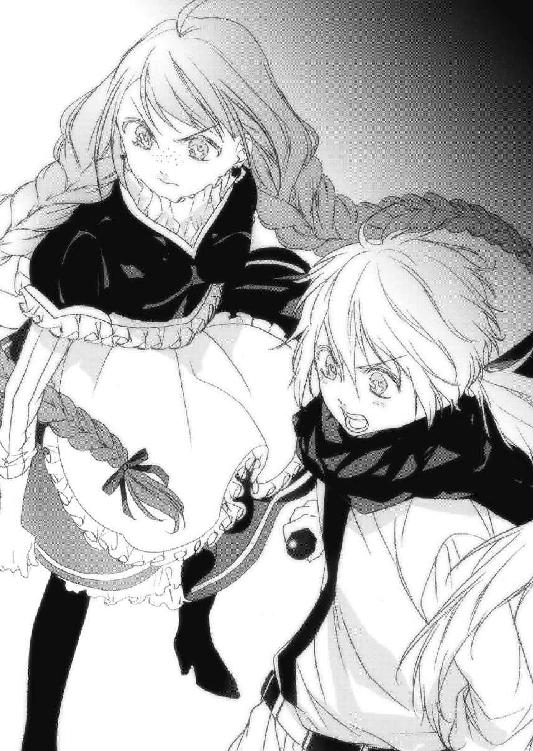
「東の......なるほど、その先に、私を待つ人物がいるのだな？」
「その通りです」
「わかった。それとこれはレベッカどのには伝えていなかったんだが、王国軍の将軍十名と、義兄弟が二人、そして刎頸の友が一人、計十三人が私と行動を共にしてくれるそうだ」
「それは......とても心強いですわ！」
名将と呼ばれるくらいだから、ヴォード将軍に呼応する将軍も現れるとは思っていたけど、まさかそんなに味方になってくれるとは。
これで王国軍の半数以上は、先王さまの旗下に集まることになる。
「この作戦、絶対に成功させるぞ、レベッカどの！」
「はい！」
スフィアは最後のガザリウム弾を握りしめ、上着を脱ぎ捨てた。
「さあいくよ、レベッカ！」
「うん。始めよう！」
彼はびくんと体を震わせ、天を仰いだ。彼の銀の髪が、青い瞳が、ひ弱そうな人間の肉体が、獰猛な獣をも屈服させる強靭なものへと変化した。
辺りはまた騒然となった。大漠腐を歩いて来る影の巨人、陣中に突如として現れた銀獣人。平和に慣れた者たちの想像を超えた出来事ばかりが目の前で起きているのだ。混乱して当然だろう。
その時、ヴォード将軍の大声が轟いた。
「狼狽えるな！ 彼こそが唯一、あの巨人を倒せるマールの使者、影砲士様だ！ 我々はこの場を影砲士様に任せ、メルガド市民の安全確保を最優先とする！ 第三軍は東の城門を開けろ！ 全市民をステーク方面に避難させる！」
大混乱を起こしかけていた王国軍はヴォード将軍の一声で我に返り、指示に従って機敏に動き始めた。
「こっちも行くぞ、レベッカ」
「え、わ、きゃ！」
銀獣の姿になったスフィアは有無をいわさずあたしを片手で担ぐと、背中に魔法陣を浮かべてふわりと飛び上がった。
「わわ、わ......」
初めて見る空からの眺めにあたしは戸惑いながらも、この姿になったスフィアってば本当に普段と違って強引で男らしくてこんな彼も素敵かななんて思ってちょっと熱くなっちゃったりしてあたしまで大混乱。
そんなあたしをスフィアは素知らぬ顔で王城の上空へと運ぶと、間抜けな顔をして周りに怒鳴り散らしているガザラ王が見えた。
「あそこよ、スフィア！」
彼は何も言わず急降下し、ガザラ王がいる部屋へ飛び込んだ。
「うわぁっ、ななな、なんじゃなんじゃ!?」
狼狽する王を無視し、あたしはスカートをはたいて気を取り直すと、スフィアの頰にキスをした。
「レベッカ......」
あたしは懐からスフィアに貰ったガザリウムの弾を出し、彼に差し出した。
「これ、使ったほうがいいんじゃない？」
スフィアは首を振り、あたしを覗き込む。
「影砲士が妻に与えた弾を返されるのは、別れの時だけだ。もしぼくに何かがあれば、それを形見にしてもらいたい」
「それならなおさら返すわ。あたしはあなたがいればいい。形見なんか欲しくない！」
「レベッカ......ならそれは、再会の約束の証だ」
「そういうことなら、絶対手放さないわ」
あたしとスフィアは笑い合った。
「スフィア、今回あなたの後ろに長城はないし、傷を治してくれるザイルもいない。だから、ケガしないでっていうのは無理だろうから......絶対に、死なないでね」
「ああ、約束する。ここから見ててくれ」
スフィアが気を入れてぎろりと北を睨むと、影の巨人はここからでもその姿がはっきり確認できるくらい迫っていた。
スフィアは牙を剝き、体中からマナを迸らせ、巨人に向かって一直線に飛んでいった。
「き、貴様は、あの無礼な娘ではないか！ なな、何をしにここへ参った!?」
振り返れば、聖騎士団のみ着用を許されている青い鎧に身を包んだ兵士に護られた、ガザラ王がいた。
あたしは影の巨人を指さして王に言った。
「あの巨人はあなたがここへ招いたってことを伝えに来たのよ、王様」
「何だと？ あ、あの化け物を、わしが？」
「そう。あなたがガザラ鉱山で働くドワーフと仲違いして、ガザリウムの弾を影砲士に届けなかった。その結果が、この有様よ！」
「ばば、バカな！ あんな化け物がガザリウムの弾くらいでどうにかなるものか！」
あたしはバカ王様の横っ面を軽く撫でた。
王は大袈裟に壁に激突し、鼻血を吹いた。
「き、きき、貴様ぁあああ！」
激高した王が聖騎士たちに合図を送ると、五人の聖騎士が剣に手をかけた。
『騒ぐなあ────────ッ！』
あたしの気迫の一喝で、五人の聖騎士はその手を止めた。
「これから影砲士があの巨人を撃つ。あんたたちはここから影砲士がどんなものかを、その目に焼きつけなさい！ もし影砲士があの巨人を仕留められなければ、その時はこの国が終わる時だと思えッ！」
その言葉で、五人の聖騎士と王は間近まで迫った影の巨人に視線を飛ばした。影の巨人は城壁に拳をぶつけ、まるで砂細工を壊すかのように城壁を破壊していった。
あたしたちはもう、スフィアに全てを託すしかないのだ。
町の上空で浮かぶ彼の姿は、青白く輝く小さな星のようだった。
その輝きは徐々に強さを増し、辺りに強烈な閃光を走らせた。
そして......。
ドォオオ────────ン！
強烈な爆発音が、メルガド中に響き渡った。
「ひぃあああああっ！」
ガザラ王は情けない声を出してしりもちをついた。
影の巨人は城壁を破壊し、メルガド内部に足を踏み入れたところだった。
そこへ、スフィアの砲撃が閃光となって巨人を襲った！
近距離砲撃の破壊力はさすがに凄まじく、巨人の両腕を吹き飛ばして顔に直撃し、そのまま弾は大漠腐の空に向かって一直線に消えていく。
巨人は体勢を崩してゆっくり倒れ、その衝撃で王城はゆりかごのように揺れた。
スフィアは砲撃の反動で流れ星のように尾を引き、北西にある丘に突き刺さった。
「スフィアあぁああッ！」
ここからならよくわかる。
あそこはメルガド地下迷宮の入り口だ！
あたしは呆けた連中を突き飛ばしながら城を出て、主人が逃げ出して野放しにされたであろう馬の背に飛び乗り、スフィアが落ちた場所に向かって走った。
既に、大通りに人気はなかった。
ヴォード将軍とその仲間が上手く市民を逃がしてくれたのだろう。あたしは丘の上にたどり着くと、必死にスフィアの姿を探した。
注意深く探ってみると、丘の土がえぐられた場所があった。
急いで駆けつけて底を覗くと、ぐったりとしているスフィアを見つけた！
「スフィア！」
えぐられた穴を滑り降り、彼の体を抱き寄せた。スフィアは銀獣人の姿のまま、気を失っていた。
「ああ......スフィア......」
あたしは彼を抱き締めた。
「ん......あ、レベッカ......」
目を開けたスフィアの唇を、強引に奪った。土の香りがした。
「巨人は、どう、なった？」
その時突然、あたしとスフィアは地面の揺れを感じた。
「ま、まさか、そんな......」
顔を上げたあたしの目に入ってきたのは、城壁の向こう側からこちらを睨みつけて立っている、腕を失った巨人の姿だった。
「スフィア、逃げよう！ 巨人はまだ生きてる！」
あたしが彼を背負って穴を出ようとしたその時、足下に一本の矢が突き刺さった。
いつのまにかあたしたちは、青い鎧を着た一団に取り囲まれていた。
ガザラ王国が誇る最強の聖騎士団たちだった。
その一糸乱れぬ隊列から一台の豪奢な馬車が割って入り、中からガザラ王が転がり落ちて出てきた。
「はあ、はあ、よ、よくも、よくも余を、コケにしてくれたな！」
何故馬車に乗って来た人が息を乱すのかしら？
それに彼らには、城壁の向こうに何がいるのかわかっていないようだ。
「きき、き貴様らを国王侮辱罪で処刑するっ！ 覚悟はいいな!?」
本当に、救えないほど愚かな王だわ。あたしは情けないやら悲しいやらで力が抜けかけたけど、それでも気力を振り絞って叫ぶ。
「バカなことを言ってないで早く逃げなさいッ！ 影の巨人が来るわッ！」
「な、何ぃ？」
その時、両腕を失った黒い巨大な人影が、町の中に足を踏み入れた。
とうとう、王都メルガドに影の巨人の侵入を許してしまった。
影の巨人はきょろきょろと辺りを見回すと、あたしたちの丘に焦点を定め、建物をなぎ倒しながらこちらに向かって来た！
「うわわわひぃいいいゃあああああ！」
ガザラ王は誰よりも真っ先に取り乱し、腰を抜かして馬車に這っていった。さすがの聖騎士団も動揺し、算を乱す。
巨人はほんの二、三歩で王都メルガドを壊滅状態にし、あっという間にあたしたちのいる丘へ上って来た。間近で見る巨人はその名の如く、ただ大きかった。聖騎士たちは各々勝手に弓矢や魔法で攻撃を試みたが、効いている様子は皆無だった。
『オオオオオオオオオオオオオオオ────────ンッ！』
巨人は地鳴りのような雄叫びを上げると、体を丸めてその形状を球体に変えて浮いた。そしてその身を地下迷宮の入り口上空まで移動させると、球体は徐々に小さく、より濃くなり、爆音と共に一気に地下迷宮へと落ちた！
砂煙が視界を奪い、地面の揺れが平衡感覚を狂わせる。四散する瓦礫が空から降り注ぎ、あたしはスフィアから離れまいと必死に抱きついた。
そして辺りに、不気味な静寂が戻った。
聖騎士たちは危機が去ったものと思って喚声をあげ、ガザラ王も再び重い腹を上げて笑みを浮かべていた。
「何じゃ、脅かしおって。もともと影の巨人なんぞ、害のないものだったのじゃ！」
その声に再び聖騎士団は喜びと鬨の声を上げ、あたしたちに投げ槍や弓矢を向ける。
だけど、その時あたしは気分が悪くなるほどの、得体の知れない何かを感じていた。
スフィアも全身から冷たい汗と生暖かい血を流し、体を震わせている。
間違いなく、事態は最悪の展開になってしまった。
頭ではなく、感覚でそれを理解した。
「さて、これまで散々余を愚弄してきた罪は当然、万死に値する。だがこの場でその額を地につけながら懇願すれば、命だけは許してやらんこともないぞ？」
勝ち誇ったガザラ王から出てくる言葉は無慈悲で無残で、悪趣味なものばかりだった。あたしはそんな野卑な声を聞き流し、傷ついたスフィアを背負って立ち上がった。
「勝手に動くなッ！ さあ謝れ、懇願しろ、命乞いをしろおぉ......お、おおおおおお!?」
無様な王のお腹がぶよぶよと揺れ、子供の玩具のように転んだ。聖騎士たちも、突然の大きな地震に足をすくわれていた。
「レベッカ、ぼくを置いて逃げろ！ 何か、とてつもなく恐ろしいものが......来る！」
スフィアはあたしを払いのけようとしたけど、その力は弱々しかった。
「わかってるけど、逃げない。もうどうしようもないところまで来てしまったのだから、こうなれば、最後まで一緒に──」
「駄目だ！ ぼくは、どうなってもいい。でも君は、君だけは！」
その時、突然迷宮の入り口を監視するために造られた建物を、一本の巨大な石槍が貫いた。建物は瞬時にして瓦解し、その巨大な石柱の一番上に一人の女が立っていた。
埃だらけの衣服が、柔らかな黒い髪が、風になびいて煙を上げる。
「どうやらあれが、胸騒ぎの原因ね」
あたしの目には、その女の周りに影の巨人と同じ黒いオーラが見えていた。
多分、マール石で生きているあたしだから、それを感知することが出来るのだろう。ガザラ王も聖騎士たちも、あの女が持つ異様な力に気づいている様子はなかった。
女はあたしとスフィアの姿を目に捕らえると、石柱の中にずぶずぶと埋まっていった。
「な、何──」
「セリオ？ いや、セリオの末裔か」
振り向くと、先程まであんなに遠い場所にいた女が、すぐ後ろに立っていた。
「お前たちが、長い間、私の復活を......妨げていたのね」
背中に氷を突きつけられたかのような、そんな冷たい声だった。
今なら、この女を倒せるのではないか。
そんな闘志が急に湧いてきた。あたしが本気で拳を振るえば、この女の薄い胸板を貫くことくらい造作もない。
あたしはスフィアから離れて瞬時に間合いを詰め、全力で拳を女の胸に突き刺すと、あたしの腕はその華奢な体をあっさりと貫通した！
「ふーん、私の体をこうも簡単に貫くとは。あなた、ただの娘ではないわね？」
悪寒を感じてすぐに間を取ろうとしたけど......腕が、抜けない！
「レベッカ！」
スフィアは弱った体に鞭を打って牙を剝いた。
低い姿勢から足を狙って飛びかかると、女はあたしの腕を体内に埋め込んだままふわりと浮かんだ。
「うぅあッ！」
浮き上がった時の衝撃があたしの腕に集中して、鋭い痛みが走った。
「レベッカ！ 待ってて、今助け──」
ごぼ、という音と共にスフィアは血を吐き、地面に膝を突いた。
いくら強靭な体とはいえ、影の巨人を撃った時の反動は、予想以上のダメージを彼に与えていた。
「スフィアっ！」
片腕の痛みに耐えながら、彼に手を伸ばす。
「あなた、あの銀獣人とどういう関係？」
女は静かにそう聞いた。あたしは軋む腕を押さえながら、叫んだ。
「あたしは誇り高き影砲士の妻よ！ あんたこそ、何なのよ！ 何で、体に、穴が、空いてるのに......あぁッ！」
ギリギリと締めつけがきつくなり、息が乱れる。
「そう、セリオの末裔は、影砲士と呼ばれているの」
「はぁ、はぁ......はな、しなさい、よッ、うぅッ」
「そうはいかないわ。あなたも、あの銀獣人も......」
「うう......あんた、な、何者？」
「私はリーゼ。百六十年ほど前にイストリアルからこの地を訪れた。そしてそこの忌々しい獣に力を抜き出され、醜いトカゲ人どもに裏切られ、ここに封印されていた。この私がアレンシアの連中にここまでしてやられるとは、思いもよらなかったわ」
イストリアル？
何を、言ってるの？
「影の巨人に、影砲士か。ふふ、アレンシア人は名付けだけは趣があるわね」
「影の巨人とは......なん、だったの？」
「私から抜き出された力、黒夢の塊よ。私はセリオに力を奪われた時、何処に飛ばされてもこの体に戻るように仕組んでおいた。もっと早く戻って来ると思ったけど、百五十年とはね。なかなかがんばったじゃない」
何だかよく......わからないけど、腕が引きちぎれそうなほど締め付けられ、体中に鳥肌が立った。
この女、静かな口調とは裏腹に相当怒ってる。
「くうぅッ、何故!? あんた、何でこんな状態で生きてられるのッ!?」
あたしの腕は完全にリーゼの体を貫通している。どんな生物でもこの状態で、こんなにすました顔でいられるわけがないのに！
「おや......これはまた、随分と好都合な......」
リーゼはあたしを石柱に叩きつけると、両腕を石柱に埋め込んで身動きを封じた。
「いっ......な、何を......」
「あなたは生かしておいてあげる。でもね」
次の瞬間、とんでもなく恐ろしい目つきであたしを睨みつけてきた。
「あの銀獣人だけは、許さない」
リーゼはあたしに微笑み、するすると地面に向かって降りていった。
その先には、スフィアがいた。
「スフィアあぁあああっ、逃げて───────────！」
両腕の苦痛に耐えながら叫んではみたものの、スフィアはどう見ても自力で動けるような状態じゃなかった。
膝を突いて呻くスフィアの前に、リーゼが降り立つ。
「念のため、あなたを試させてもらおうかしら。多分、駄目だと思うけど」
「あ......ううっ」
リーゼは懐から黒い石を出し、それをスフィアの手に無理矢理握らせた。
「あ......おあああああああああああああああああああああああああああああッ！」
スフィアの体がはち切れそうに膨張し、体内から一気に黒いオーラを吐き出した！
「スフィアぁあああっ!!」
あたしは必死にもがいたけど、石柱に埋め込まれた両腕がどうしても抜けなかった。
「うお、おおおっああああ、れ、べっかあああああああああああああっ！」
空から、地面から、川から......あらゆる場所からスフィアに向かって黒いオーラが流れ込む。
それは彼の体を引き裂き、砕き、打ちのめし、弾き飛ばした。
「ううううううああああああ！ やだぁ、やだよぉ、は、放せ、放してぇ────ッ！」
あたしは涙を流しながら、力の限り叫び続けた。
「ああ、あああ、や、やめろ、やめて、もうお願いだから、やめてえええええええ！」
突然、スフィアの手から黒い石が地面に落ちた。
スフィアの体はもうボロボロで、至る所から血が吹き出して......それでも、それでも彼はずっと、あたしの顔から、あたしの目から、視線を外さなかった。
いつもの優しい眼差しで。
口元には、笑みさえ浮かばせながら。
血だらけの口を、ゆっくりと動かした。
「あ、い、し、て、る」と。
そしてスフィアは、壊れた人形のように倒れた。
「あーあ、やっぱり駄目だった」
リーゼは眉一つ動かさず、平然と黒い石を拾い上げた。
「わああああああああああああああああああああああああああああああああっ!!」
よくもあたしの愛する人を！
大好きな旦那さまを！
あたしは腕に目一杯力を込めた。腕がもぎ取れたって構わない！
その力に石柱が割れ、血だらけになりながらも何とか腕を引き抜いた！
「リ───────ゼぇえええええええええええええええええッ！」
あたしは歯を食いしばって石柱を蹴り、リーゼに向かって矢のように飛んでいった。
両腕には力が入らない。だからあたしは目一杯勢いをつけた膝を、リーゼの顔に叩き込んだ！
不意を突かれたリーゼは無防備にあたしの膝を食らい、砂埃を巻き上げて地面を削りながら吹き飛んだ。
「はあ、はあ......スフィア......すふぃあぁ......」
あたしはスフィアの体を抱き起こす。
急速に、彼の体が冷たくなっていった。
「いや......あたしを、置いていかないでよぉ......スフィア！」
返事はない。
あたしは懐のガザリウム弾を握った。
「再会の証なんじゃなかったの？ これは!!」
動かなくなった彼の笑顔に、あたしの涙がぽたりと落ちた。
「ねえ起きてよ！ 起きて!! 一緒に逃げようよぉっ！」
突然、背後から肩を摑まれた！
「!!」
振り返ると、土の中から凄まじい形相をしたリーゼが顔を覗かせていた！
リーゼはもう一方の手であたしの額を摑むと、足が地から離れた。
「殺さないとは言ったけど、あまりふざけたことをするなら気が変わるわよ？」
手のひらから、絶望的なほどの力が伝わってくる。
駄目だ、この女は普通じゃない。
絶対に......勝てない。
あたしは涙を流しながら、初めて感じる恐怖に身を震わせた。
「少しだけ、私の力を見せてあげようかしら」
急に拘束が解かれ、あたしはお尻から堅い地面に落ちた。
見上げると、リーゼは目を閉じて両手を広げた。
すると、リーゼの背中から光の筋が脈打つ、黒く巨大な二本の腕が伸びて、抉れた大地を摑んだ。
地面が揺れ、岩が弾け、砂が舞い上がる。
「これは、影の巨人の......」
「その通り。私の中には、あなたたちが影の巨人と呼んでいたものが、丸ごと入っているようなものよ」
勝てるわけがなかった。
絶望と虚無があたしを支配する中、その黒い腕があたしをゆっくりと包み込む。
そして次の瞬間、あたしは衝撃を受けて意識を失った。
気がつくと、草むらに倒れていた。
辺りは既に日が暮れている。
いったい何が起こったのか......。
そばに、誰かが座っていた。
「目覚めた？」
その声はスフィアではなく......リーゼだった。
あたしは力なく懐から短剣を取り出し、躊躇なくそれをリーゼの背中に突き立てた。
「そんなもので何百回刺されても私は死なない」
そんなことはわかってる。
それでも何度も何度も、あたしは狂ったようにリーゼの背中を刺した。
この女にとってあたしは、地を這う蟻程度の存在なのだろう。
あたしを気にもとめず、ただ一点を眺めていた。
その先にあった光景に思わず手を止め、息を飲んだ。
それは炎に包まれるガザラ王都メルガドの、無残な姿だった。
「混乱に乗じて反乱でも起きたのかしら？」
あたしはこうならないよう、全身全霊で動いてきたのに......。
手が緩み、短剣が草の上に落ちた。
気を失いそうな喪失感に負けないよう足に力を入れ、震える口を開いた。
「彼は......スフィアは、どうなったの？」
「死んだわ」
「うそよ」
「確実に」
「うそ、うそよ！ そんなのウソにきまってるッ！」
「あなたに噓なんか言ってどうするの？」
「うそ......よぉ......」
あたしは膝を突いて、泣き崩れた。
ああ、スフィアぁ......。
「うううううわあああああああああああああ......」
猛烈な虚脱感が、あたしの体から立つ力を奪い去った。
「あなたは私が求めてきたものを持っている可能性がある。だからここに連れてきた」
あたしの中にあるもの？
この女の目的は......マール石なのだろうか。
でも、この石はあたしの生命活動に必要不可欠なものだ。
これを奪われたら、あたしはきっと死ぬだろう。
でも......。
「マール石が欲しいならさっさとあたしの体から抉り取れば？ スフィアがいないこの世に......未練なんかない」
ふと、さっき落とした短剣が触れた。
あたしはそれを手に取ると、自分の喉元に突き刺すつもりで力を込めた。
だがそれを止めたのは、意外にもリーゼだった。リーゼは素早くあたしの腕を取り刃を握ると、短剣はみるみる錆び、柄を残して粉々になった。
「やめておきなさい。あなたに宿っている子の命まで捨てることになるわ」
その言葉に、愕然とした。
あ、あたしの中に、スフィアの......彼の、子供が？
「影砲士の妻よ。これからあなたに平穏な時間は訪れないでしょう。何故なら、私が常にあなたの命を狙うから」
あたしは精一杯の勇気を振り絞って立ち上がり、リーゼと対峙した。
「あたしの命が欲しいなら、今すぐ殺しなさいよ」
「少し混乱しているのかしら？ もし私がその気なら、とっくにそうしているわ」
......そうかもしれない。
「影砲士をあっさり殺してしまったのは失敗だったわ。これじゃ百五十年も幽閉されてた私の気がすまないもの。だから、その妻であるあなたに......その業を背負ってもらう」
「何をする気なのよ！」
「まずは、その子を産みなさい。その子を抱いて幸せを嚙みしめなさい。温かな場所を作り上げなさい。その上で」
リーゼは残酷な笑いを浮かべ、あたしは俯いて涙を零した。
次にリーゼが言うことが、読めてしまったから。
「全部壊す。あなたを守る仲間も、お友達も、その子供も。そして、あなたも」
ただ転ぶよりも、持ち上げられて落とされるほうが何倍も痛い。
リーゼがしようとしていることは、そういうことだ。
あたしは膝をついて体を震わせ......泣いた。
「それくらいしなければ私の気は晴れないわ。これからはせいぜい用心して生きなさい。今日が無事でも、明日はどうだかわからないのだから」
「あなたの望みは、何なの？ 何で、こんな酷いことを......」
「全ては黒夢の魔王のためよ」
「黒夢の、魔王？」
「そう。魔王はイストリアルの再生者であり、アレンシアの破壊者」
意味が、わからなかった。
リーゼは口元を少しだけ緩めると、あたしの額に手をかざした。
「疲れたでしょう？ あなたはゆっくり眠りなさい。そう......一年くらいね」
「え？」
急に瞼が重くなり、強烈な睡魔が襲ってきた。体が重くなり、天地が引っ繰り返った。
「う、そ......やだ......」
蒼い月と、あたしを見下ろすリーゼとフィルティナの姿だけが視界を支配した。
「ぅ......う......すふぃ......あ......」
霞がかかったように頭がぼんやりとする。
あたしは頰に自分の涙がつたっていくのをかんじながら、ねむりという、、やみのなかに、、、、おちた。
第八章・裏 カナクとネウ
僕は不思議な場所にいた。
景色と呼べるものは皆無で、様々な色がついた油絵の具のような、ぐにゃぐにゃしたものがゆっくりとうねっている空間だった。
そんな中、目の前に小さな光が見えた。
とりあえず、僕はひたすらそこを目指した。
やがて視界が開け、辺りはとこしえの闇に包まれた。
どこを見てもただの暗い空間。
足下には道すらなく、自分が立っているのか浮いているのかすらわからない妙な浮遊感だった。
「おなか、すいた......」
突然、どこからか声が聞こえてきた。
「せなか、いたいな」
聞き覚えのある声だった。
「あ......血、まだ、とまってない」
これは、ユーリエの声だ！
「矢、上手く抜けなかったのかな」
何だこれ、何だこれ......何だこれ!!
「うう、痛いよう......」
バンッ！
耳を破裂音が襲うと、辺りの景色ががらりと変わった。
空も見えないほど高い木々に包まれ、しっとりとした空気が流れていた。
これは......ジェノア？
僕が当てもなく森の中を彷徨っていると、突然辺りが燃え上がり、瞬く間に火の海になった。
「イヤあっ!!」
また、叫び声が耳を突いた。
「何で!? どうして!?」
熱風が、喉にひりひりと染みた。
「ああ......みんな......いやああああああああああああああ！」
人の力ではどうすることも出来ないほどの火勢を前に、為す術もなかった。
また風景が変わる。
それは暗い、牢獄の中だった。
「もうすぐだよ。もうすぐ、ここは滅びる」
うう......ここは、ジーラの砦だ......。
「ほら、聞こえるでしょう？ 滅びの足音が」
格子がついた小さな窓から、もの凄い風が吹き込んできた。
「でも、本当にこれで良かったの？ 生きていれば、しあわせになれる可能性が少しでも残るんだよ？」
牢獄が揺れはじめ、砂や埃が天井からぱらぱらと降ってきた。
「死んじゃったら、絶対にしあわせには......なれないんだよ」
そして再び、深い闇に包まれた。
「もう、やめてくれ！」
僕は虚空に向かって叫んだ。
「もうたくさんだ！ 何でこんな──」
（あなたの大好きなこの娘も、きっと何度もそう思ったでしょうね）
別の女の声だった。
「リーゼか!? そうなんだろ!?」
目の前に光が差した。その中に、黒髪の女性が現れた。
リーゼだ。
（すべて、あなたのせい。この娘の苦しみは、あなたの想像なんかとても及ばないほど深く、そして辛い）
「そんなこと、わかってる！」
（いいえ。あなたは何もわかっていないわ）
リーゼが一歩、足を前に出した。
（私はイストリアルからいろんな者の生き様を見てきたけど、このユーリエという娘ほど惨い生を歩んできた者はいなかったわ。
もう一度言う。全部、あなたのせいよ）
「うう......う......ああ......」
（イストリアルは生と死の狭間にある、夢と意識の世界。でも今は、アレンシア人のせいでめちゃくちゃにされた、脆弱な世界）
また一歩、僕に近づいてくる。
（あなたは、彼女を救いたくない？）
「救いたいさ！ 出来ることなら救いたいに決まってる!!」
（なら何故、私を信じないの？）
「そう簡単に信じられるわけないだろう！ 僕に見せたこの世界だって、君が見せた幻かもしれないじゃないか！」
（まぼろし？）
リーゼはぴたりと足を止め、目を閉じて溜息をついた。
（あの娘の壮絶な人生を、あの娘が受けてきた痛みを、まぼろしだと言うの？）
「い、いや違う、そうじゃない！」
（私が見せたものは、あの娘の意識そのものよ）
「だって、そんなことが──」
（できるのよ、イストリアルでは。時間と空間を超えた世界だから）
「時間と空間を......超える？」
（信じがたいというのも無理はないわね。アレンシアに生きる者は、イストリアルを見れないから。箱の中に入れられた者が、箱の外を見ることが出来ないように。
でもこれを見れば、きっと信じてもらえると思うわ）
目の前から、再びリーゼの姿が消えた。
「カナク......ああ、カナク......」
足下よりも更に低いところから、僕の名を呼ぶ声が聞こえた。
「カナク......今、助けるからね。あなたを、守るからね！」
目の前に真っ赤な線が浮かび上がり、線と線、円と円、文字と文字が繫がっていく。
これは何だ？
見覚えのある形。
聞き覚えのある声。
「死なせない！ 絶対に、絶対に死なせない！」
ユーリエ？
ユーリエなの!?
「たとえこの身が砕け散っても......この命を失っても、絶対に！」
目の前の赤い線はやがて巨大な魔法陣になった。
そして、耳をつんざく叫び声が空間に轟いた。
『遥かなるイストリアルの力よ！ 彼の者の傷を癒せ......アルヴァダーグ！』
こ、これは、あの時の!?
赤い魔法陣は球体へと変わり、その球体の下部が裂けると、巨大な口となって僕に語りかけてきた。
「あなたが全てを見せるって言ったのは、その姿のことだったのね。銀色の獣......あんなに優しくて、思いやりがあって、クラスの女の子からもからかわれてたあなたに、そんな秘密があったなんて」
次の瞬間、球体が闇に溶け出し、辺りが真っ赤に染まった。
そして目の前に、涙を流して一生懸命何かを口にしている僕の姿が映った。
「カナク......私にはもうあなたの声が聞こえないけど、何を言ってるのかはわかるよ。
私も、あなたが大好きよ。好きで好きで、どうしようもないくらいだよ。せっかく思いが通じたのに......ここでお別れなんて、嫌だな......」
うう、ううう......。
「離れたくない......別れたくないよ」
強烈な思念が僕に流れ込んできて、胸を内側から抉るように強く握りしめた。
「カナク、カナク、カナク......」
目の前が真っ赤に染まった。僕の顔も見えなくなるくらい、濃い赤に。
「いや......だよぉ......」
「うわああああああー？？？っ！」
僕は両手で顔を覆い、膝をついた。
「リーゼ......君は僕に、何をさせたいんだ！」
（全てを、あなたに救ってもらいたいの）
後ろから、リーゼの声がした。
（上をごらんなさい）
顔をあげると、そこにはどす黒い、巨大なうねりが空一面にひろがっていた。
（あれが黒夢、即ち混沌の源よ。かつてはイストリアルはアレンシアから送られてくる欲望や自己中心的で勝手な夢、即ち〝黒夢〟を幸せな〝白夢〟に変えてあげられるほど豊かで、慈愛に満ちた世界だった。ところが黒夢の力がどんどん強くなってくると、イストリアルは自浄能力すら失い、急速に荒廃してしまった）
リーゼは僕の肩に手を置いた。何のぬくもりも感じなかった。
（今やイストリアルは、アレンシアの連中にいいように壊されるだけの世界。見たくもないものを見せられ、聞きたくないようなことを聞かされ、知りたくないようなことまで知らされる。あなたたちはいいでしょうね、好き放題できるんだから。
でも、イストリアルに住む者は、たまったもんじゃないわ）
その声には、たとえようのない怒気が含まれていた。
（このままでは、いずれイストリアルは崩壊する。そうなればアレンシアだってただじゃ済まないわ。だからあなたに、助けてもらいたいの）
「なら、口でそう言えばいいじゃないか。ユーリエの姿になったり、アルマを騙したり、ネウを眠らせたり、僕にあんなものを見せたりする必要は......ないじゃないか」
（言葉で私を信じてくれた？）
............。
（それにね、私の願いはあなたに相当の苦痛を強いるものなの。だから、それを受け入れる覚悟を決めてほしかった）
「君の、願い？」
（そう。それはね......）
リーゼが、僕の耳元で囁いた。
『あなたに〝黒夢の魔王〟になってもらいたいの』
「黒夢の、魔王？」
『そうよ。イストリアルとアレンシアを救うには、誰かがこのアレンシアで黒夢の魔王にならなければならない。当初の目的は、私が魔王になるはずだった。そのために、苦労してイストリアルからこのアレンシアにやってきたのよ』
リーゼは口惜しそうに言い、話を続けた。
『でもね、イストリアルの住人である私は、ここにやってきた代償として肉体を失ってしまった。肉体がなければ、黒夢の受け皿にはなれなかった。それも、ただの体じゃ駄目。強靭な精神力と肉体を併せ持っていなければ、たちまち黒夢に食われてしまうから』
............。
『だから、あなたなの。銀獣人ならきっと、黒夢をその身に受けても耐えられる』
「僕がその黒夢を受けて、何になる？」
『黒夢は夢の中で最も強いエネルギーよ。それをあなたが受けてくれれば、その間にイストリアルは自浄能力を取り戻せる。そうすれば、全てが救われるわ』
「でも......でもそれが、何故ユーリエを救うことになる？」
『黒夢の魔王はその名の通り、黒夢を自分の力にできる。その力は、現世であるアレンシアからイストリアルへ行けるほど強力なものよ。あなたが望むならアレンシアを滅ぼすことも、イストリアルを滅ぼすこともできる』
「と、いうことは、その力で時間と空間を超えることも......」
『もちろん、可能よ』
「それが、たとえ千年前でも？」
『何年前だろうが関係ないわ。アレンシアの常識で考えないで』
「ユーリエのそばに、行ける......」
『そもそもあの娘が使ったあの『アルヴァダーグ』という術はアレンシアの魔法ではなく、イストリアルの力。即ち黒夢の力よ。だから黒夢の力を蓄えれば、あなたは千年前の彼女の元に行って、その力を......あの恐ろしい副作用を、無力化することだってできる』
「マールが背負ったあの辛すぎる宿命を、消せる!?」
『私の話と黒夢の力は、さっき見せたことで証明になったはずよ。あなたは重い後悔を引きずったまま、あのダークエルフと添い遂げることを望んでいるの？』
リーゼは僕の前に歩いてくると、片手を天にかかげた。
辺りが徐々に明るくなり、白い輝きに包まれていった。
『さあ、これで私の話はおしまい。あとは、向こうであなたが決めなさい』
「向こう？」
『そう。覚醒と現世の世界、アレンシアでね』
リーゼはまばゆい輝きに包まれ、溶け込んでいった。
「............ナク......さん......カナクさん！」
「バカ神官！ おいこらッ！」
僕は誰かに揺り動かされていた。
「ネウ......アルマ？」
気がつくと、僕はネウに抱きかかえられていた。
「お前、敵を目の前にして、何でいきなり寝られるんだ!?」
敵？ 何の、ことだろう？
「あなたには何時間にも感じたでしょう。でもこちらの世界では、ほんの数秒しか経っていないわ」
声のほうに顔を向けると、礼拝堂の祭壇に腰掛けるリーゼの姿があった。
「時間と空間を超えるとは、こういうことよ。理解できた？」
リーゼは静かに立ち上がり、ゆっくりと歩いてきた。
咄嗟にネウとアルマが姿勢を低くして身構える。
「もうちょっとだけ、あなたに考える時間をあげましょう」
次の瞬間、ネウがワンドで魔法陣を描いて呪文を唱えた。
「零の白霧!!」
リーゼの頭上に黒い霧のようなものが降りかかった。あれは、かけた者の視界を奪う幻術系魔法だ。そしてすかさず、アルマが正面から短剣でリーゼの体を切り裂いた！
「どーだ、このやろ──」
アルマが動揺した。切り裂いたはずのリーゼの傷口からは血ではなく、さらさらと砂が流れ落ちたからだ。
そういえばリーゼは肉体を持たないと言っていた。
つまり、あれが今のリーゼを構成している器なんだ。
それは即ち......砂だ。
呆然と立ち尽くすアルマの横を、リーゼは何食わぬ顔ですりぬけた。そして片手で指を鳴らすと、彼女を覆っていた零の白霧が瞬時にして吹き飛んだ。
「あう、う......」
焦るネウの肩をぽんと叩き、リーゼは機嫌良さそうに礼拝堂から出て行った。
第九章・表 夕闇の影砲士
「──せんせい、来てくださいっ！」
誰かの声がした。
なんか随分久しぶりに人の声を聞いた気がする。
ゆっくりと瞼を開くと、見知らぬ部屋の天井が目に入った。
あたしの傍らには、小さな女の子がいた。
絹のように滑らかな淡い水色の髪とガラス玉のような翡翠色の瞳を持ち、幼いながらも惹き付けられる端正な顔立ちをした、ハーフエルフの女の子だった。
「おお！ 眠りの客人がようやく目を覚ましましたか!?」
違う人の声がしたのでそちらに顔を向けようとしたが......首がうまく動かなかった。
なんだろう、この全身を包む虚脱感は。
まるで自分が自分じゃないみたいで、体中がくすぐったい。
「どうですか、気がつきましたか？」
あたしを覗き込んで来たのは派手な衣装に丸眼鏡をかけ、美しい金色の髪を短く整えた、清涼感のあるハーフエルフだった。
その優しい眼差しから、悪い人ではなさそうだと思った。
「今はまだ動かないほうがいいでしょう。何せあなたは一年近く眠っていたんですから」
何を言っているの？ 人がそんなに長い間、眠れるわけがない。
「一体何があったのか聞きたいところですが、もっと心の整理をしてからのほうがいいでしょう。とても強力な魔法をかけられていたようですし」
強力な、魔法？ あたしが？
魔法をかけられて、眠っていた？
何で？ あたし、何か悪いことをしたかな──？
その時、唐突にあの日の情景が蘇って来た。
恐ろしい影の巨人、地下迷宮、不敵な笑みを浮かべるリーゼ、燃えるメルガド。
そして、傷だらけのスフィア！
「うぅあ、ああああっ！」
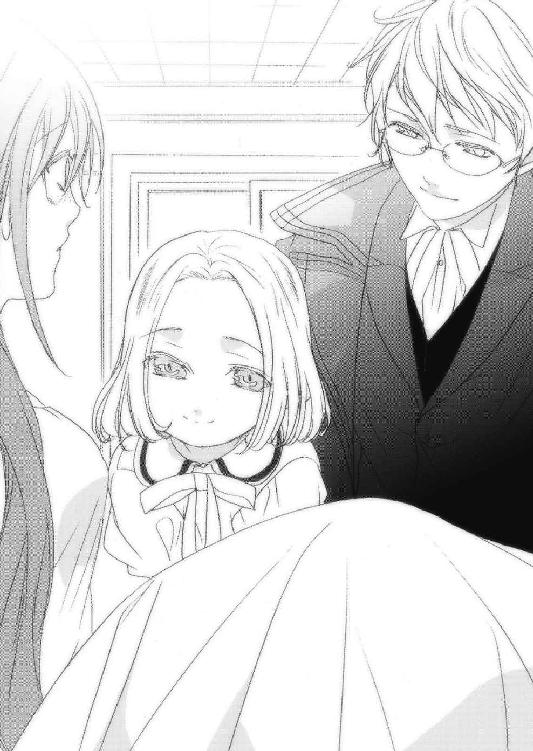
「駄目です！ まだ動くことはできないはずです。普通、これほど眠りについていた人間は、倍の時間をかけないともとの身体能力に戻ることは──」
あたしは、ゆっくりと上体を起こした。
「できないはずなんですが、あれ？」
驚く丸眼鏡の人に、あたしはうっすらと笑みを見せた。
そして起き上がろうとした時、下腹部に何かが挟まって身動きしづらいことに気がついた。
お腹が、ぽっこりと膨らんでいた。
「いやまったくこれは、異例なことづくしですね。奇跡としか言いようがない。強力な睡眠の魔法を受けた人間がすぐに体を起こしたり、眠っている間に胎児が育ったり」
胎児？
そっか......スフィアとあたしの子供なんだ。
膨らんだお腹を優しく撫でると、かつん、とあたしの手を打った。
涙が、零れた。
「普通は有り得ないんですよ。妊娠した女性が睡眠の魔法を受けた例はいくつかありますが、どの例も衰弱が激しくて胎児もろとも眠りから覚めなかった」
そういえばザイルが、子供を作れば、マール石のマナを消耗しすぎてしまうと言っていたっけ。
でも不思議なことに、あたしの体はそれほどの負担を感じていなかった。
おそらく......あのリーゼが、何かやったんだ。
あたしを弄ぶために！
「とにかく、今はまだ休んでください。奇跡は、そう立て続けに起きるものではありませんからね」
あたしは素直にその言葉に従って、再び横になった。
「ここ、どこ？ 今は何年なの？」
「ここはセレンディアの町っ！ 双月暦１４９９年だよー！」
小さな女の子が、元気よくそう答えた。
セレンディア......ああ、たしかアレンシアの西方の町だ。
それに、１４９９年。ということは、あたしがリーゼと戦ってから丸一年経ってる。
徐々に、頭が冴えてきた。
「ありがとう、お嬢さん。体はまだまだだけど、頭のほうはもう大丈夫よ」
「よかったぁ、えへへっ！」
子供らしい純粋な笑顔を残して、少女は部屋を元気良く走り去っていった。
「いい子ですね。あなたのお子さん？」
あたしは部屋に残ったハーフエルフの紳士にそう言うと、少し照れ笑いを浮かべた。
「私はそう思っています。あの子はまだ私を、父とは呼んでくれませんが」
何か事情がありそうね。でも、そこまで詮索するのは失礼だろう。
「あなたは、あたしが何故ここにいるのか、ご存じですか？」
その人は頷いて、ベッドに腰掛けた。
「私はソーン音楽団の団長、ルイ・ソーンと申します。あなたはここセレンディアの町とフェーン地方を結ぶ街道に倒れていたんです。旅をしていた我々はあなたを保護し、この聖神殿に預けたのです。ここの神官さまが、私の友人でしたので」
「ルイ・ソーン......フェルゴート王国の五英雄、吟遊詩人ルイ・ソーンとは、あなたのことですか」
「私のことを知っていらっしゃるということは、あなたはフェルゴート人ですか？」
「いえ、あたしはガザラです。でもフェルゴート五英雄の話は聞いたことがあります」
「それは、恐縮です。ところで私もあなたに質問があります。あなたが何者で、その身に何があったんですか？」
あたしはこの人に全てを話してよいものかと悩んだけど、この人は恩人なのだから、全てを話してもいいと思った。
ウルグローブからキンドリーへ嫁に出たこと、長城で出会った二人の衛兵のこと、影の巨人、メルガドの地下迷宮のこと、そしてリーゼと名乗った不思議な女のこと。
そして、勇敢に戦った愛する人......スフィアのことを。
「そうですか......いろいろあったんですね。ガザラの反乱の話は私も聞いています」
「ガザラはどうなったんですか？」
「反乱軍の圧勝でした。ガザラ十八世はメルガドに火を放って逃亡を図りましたが、すぐに捕らえられました。王都メルガドは損傷が激しく、今は新王都ステークでガザラ十七世が王の座につき、徐々に元の豊かさを取り戻しつつあります」
そっか......無血とはいかなかったけど、クーデターは成功したんだ。
「影砲士スフィアの名は新生ガザラ王国で知らぬ者はいません。ガザラ救国の英雄として国葬が行われ、ステークには彼を忘れぬよう銅像が建てられました」
国葬......。
スフィア、よかったね。
あなたのことを、みんなが偲んでくれたんだね。
一粒、二粒と、手に涙が落ちた。
最愛の人を失った悲しみが、あたしの体を駆けめぐった。
あたしを置いて、行っちゃったんだね。
その時、突然神官衣を着た人が部屋に入ってきたので、あたしは慌てて涙を拭った。
歳は四十前くらいだろうか。穏和な表情の中に、強い意志を感じる人だった。
「お話し中、失礼。先ほどヤヒロがわしを呼びに来たんでな。それで、どうかなルイ、眠りの客人の具合は？」
ルイ・ソーンは立ち上がって神官に話した。
「まだ動くのは無理そうですが、意識はしっかりしています。レベッカさん、こちらはここセレンディア・マール聖神殿の神官長様です」
神官長なんだ。雰囲気は武人そのものなのに。
「そうか、それはよかった。このままだと、眠ったままの出産になるかと思ったからな」
あたしは改めて、自分のお腹に目をやった。
この中に、愛しい人との子供が生きている。
そうだ、あたしはまだ一人じゃない。
この子は何としても、産んであげなくては！
「まだ目が覚めたばかりなのだから、あまり無理をせんように。それとルイ、そろそろ演奏に行く時間ではないのか？」
「ああっ、そうでした！ ではレベッカさん、また後ほど！」
ソーンさんは慌てて眼鏡をかけ直した。
「ありがとうございます、神官長さま、ソーンさん」
神官さまとソーンさんは安堵の笑みを浮かべ、部屋を出て行った。
第九章・裏 黒夢の魔王
「くっそおッ！ 砂の体だと!?」
僕らは三人とも、その場にへたり込んでしまった。
「あたしたちの力じゃ、どうにもならないのかな」
ネウの声は弱々しく、悲嘆が込められていた。二人はリーゼの驚異を目の当たりにして、僕の内面に起きている変化に気づいていなかった。
リーゼが言っていたことは、信じてよさそうだ。
黒夢という力を集めれば、イストリアルに行けるんだ。
ということは......ユーリエに、会える。
だって彼女は言っていた。自分はイストリアルを救うためにアレンシアにやって来たと。そしてそれはこのアレンシアを救うことにもなるのだと。
だったら、リーゼは悪者じゃない。やり方はかなり強引だけど、それは世界を救いたいがために仕方なく取った行動じゃないのか。
僕らが一方的に、彼女を悪者に仕立てていただけなんじゃないか？
「カナクさん、顔色が悪いですけど大丈夫ですか？」
ネウが僕のそばに来た。
「うん、大丈夫。ネウこそ無事？」
「はい。突然アルマの姿をしたリーゼに眠らされましたけど、特に怪我もしていないし、大丈夫だと思います」
「そっか......よかった」
「ちっきしょ────っ！」
アルマが立ち上がって叫ぶと、そのまま歩き出した。
「ちょっと、どこにいくの!?」
ネウの言葉に、アルマは振り返らずに小さく言った。
「このままじゃ最悪の事態になりかねないし、俺らじゃそれを止める術がない。どーせあいつのことだ、また二、三日はここに来ないだろう。
だから俺は、その間に助っ人を呼んでくる」
「アルマ、君は何でそこまで？」
ぴた、と足を止めた。
「仕事だ。今夜中には戻る」
アルマは、それ以上何も言わずに走っていった。
「相変わらず変な人ですね」
ネウが僕の服の袖を握って言った。
「うん」
平静を装う必要がある。
「どんな理由があるにせよ、アルマはまだ僕らに何かを隠しているね」
彼女に気づかれないようにしなければ。
「そうですね。あたしもそう思います」
アルマは今夜中に戻ると言った。あまり時間はない。
「おなか、すきましたよね。何か作りますよ」
何とか......ネウを遠ざけないと。
「いや、大丈夫。それより、君に頼みたいことがあるんだ」
誰にも気づかれず、あの場所へ行かなきゃ。
「はい、何でしょう？」
時間が、ない。
「アルマがどこへ何をしに行ったのかを、探って欲しいんだ」
「アルマを？」
なるべく、自然に。
「でも、あんなに足の速い人を探し出すのは厳しいのでは？」
「アルマはこの村からは出ていないわけだから、少し考えてみれば見当はつくよ」
「と、言いますと？」
なるべく無理のない理由をつけて。
「この聖神殿は丘の上にある。南の一本道を下ればマールの村だけど、北側には深い森が広がっている。どこかに行くとしたら、多分あそこだろうね。
アルマにはまだ謎が多い。ひょっとしたら、何か企んでいるのかもしれない」
「......わかりました。あのどろぼー男がこそこそと何してるのか、探ってきます」
「うん、よろしく頼むよ」
ネウはワンドを手にして、礼拝堂を飛び出していった。
これでいい。暫くは時間が稼げるはずだ。
僕は急いで神官室に戻ると羽根ペンを手にして一通の書き置きに、ここで見つかった貴重な本『マールの軌跡』と、その隣に神官の証である首飾りを添えた。
そしてワンドを懐にしまい、石碑の間へやってきた。
ユーリエが残した、五つ目の石碑。
ユーリエが最後に、僕だけに残した石碑。
ユーリエの、強い愛の形。
終わってない。
まだ、何一つ終わっていない！
これから始まるんだ！
待っててね、ユーリエ！
「リーゼ、いるんだろ!?」
僕がそう言うと、石碑の前の土が盛り上がって人の形になった。
「心は、決まったみたいね」
長い黒髪をなびかせて、リーゼが僕の前に現れた。
「何で、ここに私がいるとわかったの？」
「君は砂の体を持ち、土があるところなら自在に移動できるんだろ？ 君は初めからどこかに隠れていたわけじゃなく、常に僕のそばにいたんだ。そして僕やネウ、アルマらを密かに監視していた。違うかい？」
リーゼはその真っ赤な唇を緩めた。
「さすがね、私が見込んだだけあるわ」
「知っているだろうけど、今ここには僕しかいない。さあ聞かせてくれ！ 僕は何をどうすれば、魔王になれるんだ！」
リーゼは懐に手をやると、そこからあめ玉のように丸くて黒い石を取り出した。
「これは黒晶石という魔石よ。肉体を持つものがこれを手にすれば、霧散する黒夢をその身に集めることが出来る」
「つまり、僕がそれを手にすればいいってこと？」
「ただ手にするだけでは駄目よ。銀獣人の肉体は確かに膨大な黒夢の力に耐えられる。でも、心は別なの。強い精神力がなければ、心が黒夢に耐えられない。
それほど黒夢の想念は強力なものなの。だから、あなたは相当の覚悟をしなければならないわ。絶対に、あの娘を救うんだという強い意志と共に」
覚悟ならとうに出来ている。
一人で何十年も旅を続けたユーリエの艱難辛苦に比べれば、なんてことはない！
目を閉じて、静かに手のひらをリーゼに差し出した。
「さあ、その石を、僕に！」
リーゼは僕に頭を下げた。
「ありがとう。これで世界は救われるわ」
「神官としてはあるまじきことだけど、僕は世界を救う気なんてない。
僕の願いはただ一つ。ユーリエの元へ行くことだけだ！」
「いいんじゃない？ 世界を救うなんて漠然とした想いじゃ黒夢を制御できないわ。黒夢はアレンシアの負の力。それこそが憎むべき、私たちの本当の敵なんだから。
あなたはひたすらあの娘のことを考えなさい。ただ一心に。その想いが、世界を救うことにつながるのだから」
リーゼは黒晶石を差し出し、僕が意を決してそれを受け取ろうとした、その時だった。
『ダメ────────ッ!!』
振り返った僕の目に飛び込んできたのは、肩で息をするネウの姿だった。
「ネウ!! 何故ここに!?」
ネウの顔には、見ていて痛々しいほどの悲壮感が浮かんでいた。
「か、カナクさんは、あたしに噓をついたことは一度もなかった。だから気づいたんです。あれだけ悪い人じゃないと言っていたアルマを、いきなり疑うなんて不自然です！」
「......慣れないことは、するものじゃないね」
「カナクさんは夢を見ているんです！ ユーリエさんは、千年前に亡くなった人なんですよ！ それは紛れもない事実で、逃れようのない現実なんです！ だから、そんな女の言葉に、騙されちゃいけませんッ！」
リーゼはただ目を閉じて、静かにネウの言葉を聞いていた。
「カナクさん、あなたは立派な人です。尊敬できる、マールの神官です！ お願いですから......お願いだから、悪い夢から目を醒まして！」
「............」
「あたしが至らないのであれば、何でもします！ もっとマールの教えを広めて、迷える人に手を差し伸べて下さい！
マールの神官として、今を一緒に生きようよ......カナクさん！」
「ごめん。僕にはもう、無理だ」
「何がですか!?」
「ユーリエを救える手段があるのに、それをしないことがさ」
「何の確証もないじゃない！」
「確証ならある。リーゼは、それを示してくれた」
「そんなの、絶対上手くいくことなの!?」
「上手くいかないとわかっていても、やらないわけにはいかないんだ！」
僕は拳を握りしめた。
「たとえ成功する確率がゼロでも、僕はやらなきゃいけない」
「カナクさん......」
「僕はもう、ユーリエをマールとして崇めることは出来ない。だって、マールなんて最初からいなかったんだ！ 千年前に現れた暁の賢者はマールじゃない、ユーリエだ。
僕の大好きなユーリエ・セレンディアその人なんだ！」
「うう......」
ネウは泣きそうな顔になった。
「だから僕はもうマール聖神殿の神官じゃない。ユーリエという女の子を追い求める、ただの男なんだよ」
その時、リーゼが僕に黒晶石を差し出した。
「さあカナク、これを」
僕はイストリアルを救い、アレンシアを救い......ユーリエを救うッ！
「ダメ......いやあ！」
ネウの悲痛な叫びを甘んじてこの身に受けながら、僕は魔石に手を伸ばした。
「いやあああああああああああああああああああああああああああああああッ！」
黒晶石が僕の指に触れた瞬間、石はどす黒い輝きを辺りに振りまいた。
「カナクさんッ！」
ネウの叫びが、微かに聞こえた。
だが僕は、ネウに意識を向けることが出来ないほどの衝撃に襲われていた。
体が瞬時に銀獣人へと変化し、体の中に凄まじい力が入り込んできた。
「ぐぅううううううううううッ......おおおおおおあああああああああああああ！」
僕は膝を突いて、懸命にその力を押さえ込もうとした。
肩から、徐々に黒い蛇のような模様が腕に降りてくる。
マナではない、もっと不自然で不条理な力が、僕を引き裂こうとしていた。
「ふふ......あーっはっはっは！ どんなに長いことこの瞬間を待ち望んでいたか！ ついに、ついにこのアレンシアに、黒夢の魔王が誕生したわ！」
リーゼは高らかに笑うと、指先で空中に赤い魔法陣を描き、黒い球体を出現させた。
これも、瞬間移動魔法なのか？
僕がかけた対・瞬間移動魔法はまだ発動しているのに!?
「さあ、行きましょう！ ここは、あなたのいるべき場所ではない」
僕は胸に激痛を覚え、手のひらで押さえた。
黒晶石は、いつの間にか僕の胸に埋め込まれていた。
僕はこの体を得て、この力の根源を理解した。黒夢とは、自然に宿るマナとは対なるエネルギーなのだ。つまり、生物が作り出した様々な感情、不自然の塊だ。
そして今、僕はアレンシアで唯一、この力を操れる存在になったんだ。
「あう、行かないで......カナクさん......」
その時、ネウが僕の体に抱きついてきた。
「あたしも連れて行って！ そうでなければ、この場であたしを......殺してっ！」
「ぐうううっ......き、君は、ここを出ろ。ここじゃない場所で、幸せに......」
ネウは頭を振って、僕の顔を見た。
「いやあ......いやああっ！ 離れたくない！ 一緒にいたいの！」
「ご、ごめんね。ほんとうに、ごめん」
僕は震える手を彼女の頭に乗せ、ほんの少しだけ黒夢の力を注いだ。
「あ──」
どさり、とネウの体が崩れた。
「やだ......こんなの、やだぁ......」
体に害はない。ただ少し、眠ってもらうだけだ。
「か......な、く......さん......」
ネウはがくりと力を落とし、眠りについた。
「さすがは魔王さま。もう黒夢の力を理解したのね」
僕はぎろりとリーゼを睨んだ。
「ねうに、きがいを、くわえるな」
リーゼは膝をついて僕に頭を垂れる。
「承知しました。これより私は、あなたの元で働きます」
「いくぞ」
「はっ」
リーゼが黒い球体に入っていった。
僕は意識を失ったネウに心の中で別れを告げ、リーゼの後に続いた。
第十章・表 夕闇の影砲士
それからまた幾月か流れ、あたしはスフィアの子を出産した。
スフィアによく似た、男の子だった。
後に神官さまから教わったことだけど、銀獣人の子供は全て男の子で、あらゆる種族との間で子を成すことが出来るらしい。その子は父親の外見を全て受け継ぎ、母親の特徴は全く現れないのだそうだ。
とはいえ銀毛に包まれ獣の姿でこの世に誕生して来たこの子は、博識の神官さまをたいそう驚かせた。銀獣人は希少種族なので、実際にその目に触れることは稀なのだという。
ルイ・ソーンとその音楽団は既にセレンディアを離れていたので、この子を見せてあげることはできなかった。でも縁があれば、いつの日かきっとこの子と会えるだろう。
あたしはその子に「カナク」という名を与えた。カナクとは、ガザラ王国北部に伝わる言葉で「希望」という意味がある。
この子は、あたしとスフィアの希望そのものだ。
彼と過ごした時間はとても短かったけれど、その分、濃密だった。
だからこの子だけは、何としても幸せにしてあげなければ。
あたしは床に伏せながら、強くそう思っていた。
カナクを産んでから十七日目の夜。
ようやく立って歩けるまで回復し、幼いカナクを胸に抱いて神官さまの部屋を訪れた。
「おお、レベッカどのにカナク。二人とも元気かね？」
「はい、おかげさまで。ありがとうございます」
あたしは神官さまに促され、椅子に座った。
「丁度今、君のところに行こうと思っていたんだ。驚かないでくれよ、ガザラから君宛に書簡が届いたんだ」
ガザラから？ 誰からだろう？
「拝見してよろしいですか？」
「勿論だとも。さあ、カナクはこっちに」
神官さまは手紙をあたしの前に置き、カナクを抱いてくれた。
神官さまはこのセレンディアに三つの養育施設を運営している。子供の扱いはあたしよりも慣れたものだった。
あたしは厳重にロウで封をされた袋を破り、書簡に目を通した。
それは、ガザラの現王である、ジョンさんからのものだった。
国は既に混乱から立ち直り、新たに丞相として任じられたザイルの手腕や、すぐに和解が成立したドワーフたちの助力もあって、国力はかなり持ち直したとのことだ。
影砲士スフィア、その妻レベッカは今や国民的な英雄となっている。だから一刻も早くガザラに戻って、王家を助けてほしいと締めくくられていた。
あたしは目を閉じて手紙を神官さまに渡し、カナクを抱いた。
最近この子は獣の姿になることはなく、ただの可愛い人間の赤ん坊にしか見えなかった。
出来ることなら、ずっとこの子と一緒に暮らしたい。
でも、それは叶わぬ夢なのだ。
そしてあたしは、苦しい決断をしなければならない。
「驚いたよ、君はガザラ王の知り合いだったんだな。しかもこの文面を見ると、まるで恩人を迎えるかのようだ」
「それほどのことをした覚えはありません。ただ、やるべきことをしたまでです。つきましては、神官さまにお願いがあります」
「ん、何だね？」
「カナクを......神官さまの養育施設で育てていただけませんか？」
その言葉に神官さまは顔を紅潮させて立ち上がった。
「何をバカなことを！ 私が面倒を見ているのは戦で両親を亡くした、身寄りのない者たちだけだ！ 断じて引き受けかねる！」
「でも、この子をあたしの側に置いておくわけにはいかないんです。あたしを一年もの間眠らせたリーゼという女が、いつまたあたしの前に現れるかわかりません。
リーゼは言いました。あたしの周りのものは、全部壊すと。仲間も、友人も......子供も。そして、あたし自身も」
神官さまの顔色が変わる。
それほど、重い言葉だった。
「本当に、そんなことを言われたのかね？」
「はい。そして、リーゼという女はそれを実行に移す力を持っています。やると言ったら、きっとやるでしょう」
「正気の沙汰とは思えんな......」
「その時、あたしには全てを守れる自信がないのです。この子と離れるのは身を引き裂かれるほど辛いです。でもこの子の幸せを考えれば、あたしと共にいてはいけないんです」
カナクを抱き締めながら、涙を流して神官さまに懇願した。
「そこまで考えてのことならその話、引き受けてもよいが、一つ条件がある」
「はい」
「いつの日か必ず、この子を迎えに来るのだ。自分が母親だと明かし、頭を下げてこの子に謝るのだ。それまで君は逃げ出すことも死ぬことも許さない。それができるか？」
あたしは俯いて逡巡し、眠るカナクをもう一度抱き締めた後、神官さまに渡した。
「約束します。必ず、必ず迎えに参ります」
神官さまは仕事机からハサミを取り出すとカナクの髪の毛を少し切り、それを革の小袋に入れてあたしに渡した。
「この子にとって、母親は君だけなのだ。それをいつ何時も忘れるな。よいな？」
「あ、ありがとう、ございます......本当に......」
「では、ガザラには何と返事をするつもりか？」
「彼らには、もうあたしは必要ないんです。自力で決断し、立ち上がり、今の平和を手にしたのですから。あたしは死んだことにして、名を変えて旅に出るつもりです。そのほうが、全ての人にとって、安全だと思います」
「そう、か......」
神官さまは天を仰いだ。あたしの境遇に、同情して下さっているのだろう。
「ならば、わしがお主に新たな名を授けよう」
「あ、ありがとうございます」
「そうだな......オリヴィア、というのはどうか？」
「オリヴィア？」
「この地方で『希望』という意味として使われる『オリヴァ』を少し捻ったものだ。君にとってカナクが希望なら、カナクにとっても君は希望なのだからな」
オリヴィア。あたしは今から、オリヴィア。
「では、今をもってレベッカは亡き者となった。ガザラとこの子には、そう伝えよう。
だが、彼女は二つの希望を残した。カナクと、そしてオリヴィアという希望をな」
堰を切ったように涙が溢れた。
「そうだ、ルイにはこの子の秘密を話すぞ？ あの男だって君とは無関係ではないし、何より信頼できる。きっと将来、この子の力になってくれるはずだからな」
「はい......ありがとうございます」
温かかった幼子の代わりに冷たい小さな小袋を握り締め、静かに頭を下げた。
そしてあたしは神官さまだけに挨拶し、セレンディアを後にした。
目指したのはセレンディアとフェルゴートの中間、フェーン地方コルセア自治区だ。
コルセアは王族すら討たれ、滅亡の危機に瀕している勢力だった。
だが、それ故にこの身一つで身を立てるにはうってつけの環境だった。
コルセアであたしは獅子奮迅の働きをした。敵になる者は容赦なく倒し、あらゆる策を講じて戦場を駆け巡った。必死に剣を振るって腕を磨き、ありとあらゆる魔法を調べ、あのリーゼを倒せる方法を探し求めた。
そうしているうちに、いつのまにかコルセアはフェーン地方を統一し、アレンシアでも一目置かれるほどの大勢力となっていた。共に戦った仲間たちはあたしを新国王にと推挙し、あたしはそれを受けて新生コルセア王国の初代国王となった。
スフィアがくれた紅の鎧と、顔が明かされぬよう目許を覆う仮面に身を包み、戦場を所狭しと暴れまわったあたしは、いつしか烈翔紅帝と呼ばれていた。
ガザラ王国はジョンさんが見事なまでに立て直した。
だが、さしもの賢君も寄る年波には勝てず、在位五年、七十六歳でこの世を去った。
その後ジョンさんの後を継いだのはガゾの町で再起を図っていたジョンさんの次男だった。彼はガザラ十八世の兄に当たる人物で、温厚で人望も厚く、正式にジョンさんからガザラ十九世の名を賜り、王位に就いたという。
ガザラ十八世と元丞相のサリューはキンドリーの長城に追放された。しかも、スフィアやあたしがいた頃とは違い、キンドリーの長城は今や罪人のための施設として再建され、過酷な懲役を科せられているのだという。
あれだけのことをして命があっただけでも、寛大な措置だろう。
そしてザイルは丞相から亜父という地位になった。第二の父という意味を持つこの位はジョンさんが作ったもので、もし現王がその道を外れた政治を行った時、王を追放することができる特権を持つという。
ジョンさんは国の未来をザイルに託したのだ。
彼ならば、きっとやりとげる。
ガザラ王国に彼がある限り、その未来は安泰だ。
「失礼します」
机に座って政務に励んでいたあたしの背後から、不意に声がした。
「アルマ？」
「はい」
あたしは椅子をくるりと反転させた。
アルマは盗賊団リュシオルファクルに所属する盗賊だ。
あたしがコルセアをここまでにするには、リュシオルファクルの貢献がかなり大きい。彼らが持つ盗賊のネットワークは、大いにあたしの武器として役立ってくれた。もちろん彼らとしても仕事なのだから莫大な報酬を約束しなければならなかったけど、戦の勝利を金で買えるなら、安い買い物だった。
「良い知らせかしら？」
「どちらかといえば、そうかもしれません」
「さて、何かしらね」
「陛下の探し人らしき者を発見しました」
その言葉で、あたしの体に電撃が走った。
「そ、そう......どこにいたの？」
「それが、意外な場所でした」
「意外な場所？ どこ？」
「はい。ここコルセアです」
あたしは立ち上がって、壁にかかっている剣を手にした。
やっと......やっとスフィアの敵が討てる！
「どこにいるの？ 案内して！」
「マールの村です」
「!!」
マールの......村!?
ということは、まさかリーゼの狙いは！
あたしはその時、燃えるメルガドを見下ろす丘でリーゼが言っていたことを思い出した。
『あなたは私が求めてきたものを持っている可能性がある。だからここに連れてきた』
あれはまさか、カナクのことだったの!?
「しまった......！」
どうしてもっと早く気づかなかったのか！
リーゼは銀獣人を求めていたんだ。それも、自分の意のままになりそうな者を。
その事実を隠すために、リーゼはスフィアを殺したんだ！
あたしの目がカナクに向かないようにするために！
あくまで夫の敵だと思わせるために！
「いかがいたしましょう？」
あたしは剣を床に投げ、机の引き出しを開けて奥から指輪を取り、アルマに握らせた。
「女王さま、これは？」
「アルマ、よく聞きなさい。これは瞬間移動魔法が込められた指輪よ。これを使えば魔術師の禁術である瞬間移動魔法が使えるわ。ただし、ポータルの出現時間はわずか十分ほどだから、リーゼが姿を現すまでとっておいて」
「は、はあ......そんな高価なものを......よろしいのですか？」
「あなたはそれを持って直ちにマールの村に行ってちょうだい。そして再びリーゼが現れた時、指輪を使ってすぐにあたしを呼びなさい！」
「女王さまを、ですか？」
「あの女には、あたしでなければ勝てない。これは厳命よ。逆らうことは許さないわ」
「......わかりました」
アルマは一礼し、闇に溶けていった。
間に合ってくれればいいんだけど......。
第十章・裏 カナクとネウ
小さなものが、ぺちぺちとあたしのほっぺを叩いていた。
「ぴ──！ ぴ──！」
それは小動物の鳴き声にも似た音だった。
......そっか、カナちゃんとユーちゃんだ。
「ぴ───────っ！」
必死の叫び声だった。
この草人は、カナクさんとユーリエさんの絆だ。
「草人には、きっと想いが宿るんだ。僕が考え出した草人が、まさかこんな形でユーリエの想いを伝えてくれるとは思わなかった」
カナクさんが優しい手つきで頰を撫でると、草人たちはきゃっきゃっと笑い転げた。
カナクさんは、本当に優しい人。
純粋で、まっすぐな人。
たとえ叶わない恋だとしても、そばにいたかったな。
それだけで、幸せだったのに。
カナクさん......。
「カナクさん！」
あたしは血相を変えて飛び起きた。
「うっ──」
体中が痛かった。
頭もぼーっとする。
あ、あれから、あれからどうなったの!?
辺りを見渡すと、そこは聖神殿の石碑の間だった。
ここで......そっか、あたしはカナクさんに眠らされたんだ。
軋む肩を押さえたままゆっくりと立ち上がると、足下に二人の草人が涙をこぼしてあたしを見上げていた。
「起こしてくれて、ありがとう。あなたたちのおかげだよ」
あたしは泣きながら走ってきた二人を、胸で受け止めた。
「いっちゃったね」
草人たちも、カナクさんが大好きだった。
「いっちゃった......あたしたちの、大好きな人」
あたしは草人を、優しく抱き締めた。
カナクさんがあたしを眠らせてから、丸一日が経っていた。
その間、あたしの体はまるで時が止まっていたかのようだった。
おなかも空いてないし、汗ひとつかいていない。
窓の外は、また雨降りの夜だった。
あたしは二人の草人を肩に乗せて冷たい廊下を歩き、主を失った神官室に入った。
あたしはカナクさんの残した雰囲気を探りつつ、部屋を歩いた。
ああ、カナクさんの匂いがする。
カナクさんが使っていた椅子、本棚、衣装たんす......そして、カナクさんの机に目を落としたとき、あたしは驚いて体を震わせた。
『ネウへ』
そうしたためられた手紙と一冊の本、その横にカナクさんがいつも大事に着けていたネックレスが置いてあった。
あたしは急いで、その手紙を手にした。
君がこれを見ている時、僕はもうここにはいないと思います。
僕は、ユーリエの元へ行くことにしました。
リーゼは、それほど悪い人ではありません。
彼女はイストリアルを、アレンシアを、世界を救いたいと言いました。
そして僕は、どうしてもユーリエを救いたい。
そのための手段が同じだっただけなのです。
でも、君には本当に悪いことをしたと思っています。
本当に、ごめんなさい。
そして長い間、僕のそばにいてくれてありがとう。
君のおかげで、僕は随分救われました。
僕には、君がそばにいてくれた。
でもユーリエには、誰もいないのです。
だから、僕は彼女のところに行きます。
僕との約束は忘れてください。
村から出て、幸せに生きてください。
これはささやかながら、僕からのお礼です。
ご恩は一生忘れません。
ありがとう、そして、さようなら。
カナクより
手紙に、一滴の涙が落ちた。
カナクさん......あなた、やっぱり何もわかってないよ。
あたしは、あたしの意志でここにいたんだもん。
あたしは十分、幸せだったもん！
カナクさんさえいれば、他に何もいらなかったのに！
「うう......あうう......」
涙が止まらなかった。
「うう、ひっく......ううう」
ずっと堪えてきたけど、一度溢れてしまった感情の波を制御することはできなかった。
「わああああああううううあああああああああああっ！」
前が見えないほど涙がにじみ出た。
「カナクさん、カナクさん、かなくさん!!」
あたしはしばらく、机の上で突っ伏して泣きじゃくった。
カナクさんが残したネックレスを握り、あたしは彼がいなくなってしまった現実を必死に受け止めようとした。
そして少しだけ、あたしはカナクさんの気持ちを理解することができた。カナクさんがユーリエさんを失った時も、きっとこんな感じだったんだ。
カナクさんは、ユーリエさんがすき。
あたしは、カナクさんがだいすき。
ユーリエさんは、もうこの世にはいない。
でも、あたしとカナクさんは、生きているんだ。
生きていれば......きっと......。
「おーい！ バカ神官、ドジ修道士！ 誰もいないのか!?」
遠くで、アルマの声がした。
「何か、様子がおかしいわ」
聞いたことがない声が、もうひとつあった。
なんだろ、とても力強くて、温かい声だな。
「おいっ！ 誰もいないのかっ！」
あたしは手紙とネックレスを手にすると、草人を肩に乗せて部屋を出た。
「アルマ......」
通路で、あたしを探すアルマともう一人の人と出くわした。
「何だ、いるんじゃないか。返事ぐらいしろよ！ で、バカ神官はどこだ？」
「............」
「大事な話があるんだ！ 連れてきてくれ！」
「............」
俯いたまま喋れないでいるあたしに、もう一人の人が優しく声をかけてきた。
「遅くなってごめんね。もっと早く来たかったんだけど」
あたしはその人を見て、驚きのあまり体が固まってしまった。
亜麻色の髪、目と鼻を覆った仮面、紅の鎧......全身に漂う、高貴なオーラ。
「まさか、オリヴィア女王さま!?」
何故、ここに!?
「そうよ。大丈夫？」
あたしはとっさに膝をついた。
「ご尊顔を拝し、まことに──」
「よけいな挨拶はいらないわ。それよりカナクはどこ？ ここで何があったの？」
あたしはカナクさんからの手紙を女王さまに渡し、石碑の間で起きたことを一部始終、話した。再びここに現れたリーゼのこと、ユーリエさんを救うべく自ら魔王になった、カナクさんのこと。
そしてそれを止められなかった、あたしの無力さを。
陛下はそんなあたしを、力強く抱き締めてくれた。
「ネウ、あなたは本当によくやったわ。全ては私のミスよ。ごめんね」
「あう......あああああああああああん」
あたしは思わず陛下の胸の中で、泣いた。
女王さまは少し落ち着いたあたしを食堂に移し、そこで話を聞いた。
「リーゼは以前にも、一人の銀獣人を魔王にしようとしたことがあったわ」
「前にも、ですか」
「その時リーゼは失敗し、その銀獣人は命を落とした」
なんで、女王さまはそんなに詳しいんだろう？
「それ以来、私は彼の敵を討とうと必死になってリーゼを探し、そしてようやくアルマからリーゼを発見したと報告を受けた」
あたしは膝の上で戯れる草人たちに目を落としたまま話を聞いていた。
そっか......女王さまの言う銀獣人って、きっと大切な人だったんだ。
あたしが、カナクさんを想うように。
「女王さまはリーゼの狙いがバカ神官だとすぐに気づいて、俺に護衛を依頼したんだ。リーゼの動向を監視し、バカ神官を守る役目をな」
「アルマがいつまでも聖神殿にいたのは、そういうことだったのね」
「そうだ。でもな、ここからは俺のミスだ。女王様はリーゼが現れたらすぐに自分を呼ぶようにと、強く俺に言っていたのに......いざ女王様にお知らせしようと思ったら、瞬間移動魔法が発動しなかった！
まさか、ここのまわりに対・瞬間移動魔法がかけられていたとは！ おかげで俺はこいつを使うために、一旦この村の端まで行かなきゃならなかった」
アルマは悔しそうに右手の指輪を外して叩きつけた。魔法の道具......しかも、瞬間移動魔法が込められているとなると、かなり価値の高いものだ。
「あなたはよくやってくれたよ。カナクさんだって、あなたがいてくれて助かるって言ってたもの」
「............!!」
その言葉にアルマは目を見開いて顔を背け......肩を震わせた。
「リーゼという女を甘く見てしまった、私の完敗だわ。本当に、あなたには辛い思いをさせたわね。ごめんなさい」
女王さまはあたしに向かって頭を下げた。
「と、とんでもございません！ あたしの力が至らなかったんです。もっと早く素直になっていれば......もっと早く、カナクさんを好きだと言っていれば、ひょっとしたらカナクさんは、あたしを......この世界を、選んでくれたかもしれません」
あたしたちは皆、口をつぐんだ。
今こうして、罪の奪い合いをしても何も始まらない。
既にカナクさんはリーゼの手に落ちて、魔王になってしまったのだから。
「女王さま、黒夢の魔王って、ご存じですか？」
「詳しいことはわからないわ。リーゼが魔王を望んでいたことは知っていたけど」
「リーゼは言ってました。アレンシアの者が見る悪夢や欲望の夢、すなわち黒夢が、夢の世界イストリアルを滅ぼそうとしている。黒夢の魔王はその黒夢をアレンシアで集め、操れる。そうすることでイストリアルは救われ、そしていずれ魔王はイストリアルに行くことも可能になるだろう、と」
女王さまは顎に指を当て、考えた。
「なるほど。つまり、カナクはまだアレンシアにいるのね？」
「はい。きっとどこかで、力を蓄えていると思います」
「カナクがまだこちらにいるなら、手の打ちようはあるか」
「ど、どうなさるおつもりで？」
女王はあたしに背を向けた。
「カナクを......討つ」
「討つ......ですか......」
「かつてリーゼは言っていた。魔王はイストリアルの再生者であり、アレンシアの破壊者だとな。あいつはイストリアルを救うために、アレンシアを滅ぼす気だ」
「そ、それでは......カナクさんに言っていたことと......」
「騙したんだよ。それも、カナクが絶対に疑えないやり方で」
女王さまの声も、辛そうだった。
「ネウ、私は城に帰る。早急に善後策を打たねばならないわ」
「はい」
「それと、この聖神殿のことだけど──」
あたしはどきっとした。
主を失った聖神殿......カナクさんとユーリエさん、そしてあたしとカナクさんの思いが詰まったこの場所。
できれば、他の神官に来てもらいたくはない。
「あなたが守りなさい、ネウ」
「えっ!?」
「あなたの評価はアルマやカナクから聞いているわ。立派に修行に励んでいたし、村の人々からも信頼が厚いとね。ここを守るのは、あなた以外にはいないと思う」
「女王さま......」
「それに、カナクから神官の証を託されたんでしょう？ ならば問題ないわ。今をもって修道士ネウを、神官に昇格させる」
「あ、ありがとうございます」
あたしは頭を深く下げた。
「いずれ時が来たら、あなたにも声をかけるわ」
「な、何のですか？」
女王さまは扉を開け、静かに、でも力強く言った。
「覚悟はしておきなさい」
「......はい」
女王さまは辛い一言を残して、去っていった。
翌朝。
あたしとアルマは朝靄の中、聖神殿の入り口に立っていた。
草人たちはあたしの肩で眠そうなあくびをしていた。
「アルマ、また来てくれる？」
「んー、まあ、そういう依頼があったらな」
アルマは頭をかきながら言った。
「その、今回の件は、本当に悪かった」
「仕方ないよ。あの人が、自ら選んだ道だから」
アルマはふっと笑い、あたしの手を取って何かを握らせた。
ぴかぴかに磨かれた、黄金の小鳥の彫像だった。
「新たなる神官の誕生祝いに、それをやるよ」
「え、だって、これ、何？」
「実はな、この村の近くに古い坑道があったんだ。試しにいろいろ調べてみたら、そこには何者かが住んでいた形跡があったんだ。魔獣もいたから、立派なダンジョンだ。
本当はこの情報を手みやげにアジトに帰ろうと思ったんだが、やめだ！」
「アルマ......」
あたしたちが見ない間に、そんなことをしてたんだ。
「ああ、ったく、今回はいいことなしだッ！ いつかまた会うこともあるだろう。その時まで、もっと腕を磨いておくからな！」
「あたしも、神官の名に恥じないよう努力する。あなたにバカにされないようにね！」
アルマとあたしは笑いあった。
「んじゃな、ドジ......じゃなかった、ネウ神官」
「こそどろ男にも、小さじ一杯ぶんのマールのご加護がありますように」
「ふんっ」
アルマはにっと笑ってバックパックを背負い、ゆっくり坂道を下っていった。
最終章・表 烈翔紅帝
その日は宮廷晩餐会が行われていた。
あたしは紅のドレスに身を包み、コルセア王国を支えてくれている貴族や、有力者たちに笑顔を振りまいた。
決して媚びず、それでも今があるのはあなたのおかげですと軽く頭を下げる。あたしの胸中なんか知らない連中は、気分を良くしてグラスを傾ける。
あたしはこの白々しい場をグウェイルに任せ、一人、謁見の間の玉座に腰掛けた。
目の前には妖刀『紫焰』が妖しい輝きを放っている。
遠くから宮廷音楽家が奏でる柔らかな音楽が耳を撫でた。
何だか無性に、腹立たしかった。
あたしは目を閉じて、カナクの産毛が入った革袋を胸から取り出し、抱き締めた。
先ほど入った情報によると、ジェドの領内を「夢魔」と呼ばれる得体の知れないものが暴れ回っているという。夢魔は真っ黒の体に白い仮面をつけており、それを被せられた者は覚めることのない眠りに落ちるのだそうだ。
夢魔は恐れを知らず暴れ回り、さしものジェドもアレンシア各地に派遣していた兵を呼び戻さなければならないほどの混乱に陥っているという。
それともう一つ。
リュシオルファクルからの情報で、ジェド北西部に行った者からの便りが途絶え、誰一人として帰ってこないのだそうだ。
多分そこにリーゼと、カナクがいる。
リーゼはあたしから愛する夫を奪っただけでなく、今度は息子をこの手にかけさせようというのか。スフィアの敵であるリーゼを倒し、アレンシアを救うためには......最愛の息子を倒さなければならないのか!?
「ううっ......！」
あたしは目を見開くと、紫焰を握った。
涙が頰から顎へ伝い、刀身に零れて弾ける。
スフィアとあたしの愛の結晶......カナク。
絶対に守ってあげるって、思ってたのに！
何故、なんで魔王なんかになった！
リーゼなんかに唆されたッ！
やっぱり何が起ころうとも、カナクをそばに置いておくべきだった！
スフィア......あたしは、あなたとの子を斬らなければならないよう。
そんなこと、したくないよう......。
あたしは悔しくて、何もしてやれなかった自分を恥じて、紫焰を思うまま振るった。
「うう......スフィアぁ......っ！」
轟音とともに壁が弾け、テーブルから炎が上がる。
「......カナクぅ」
椅子が粉々に切り刻まれ、天井から巨大なシャンデリアが落ちる。
「あああああああああああああああああああああああああああああああああああああああああああああああああああああああああああああああああああああああああああああああああああああああああああ───────────────────っ！！！！！！」
あたしは頭が真っ白になるまで剣を振るった。
「はあ、はあ......」
気がつけば、謁見の間は嵐の直撃を受けた小さな村のようになっていた。
肩で息をしながら、紫焰を鞘に収めた。
何をどうしても、状況は好転しない。
だからこの手で、全ての決着をつけるしかないんだ。
あたしは拳をきつく握り、目を閉じて天を仰いだ。
最終章・裏 あなたのもとへ
カナクさんがいなくなって、三ヶ月が過ぎた。
一人でいる聖神殿はとても寂しかったけれど、あたしは神官として一生懸命働くことで、それを紛らわせていた。
幸いあたしはカナクさんと一緒に巡回していたため、誰がどう調子が悪いのかもよく知っていた。だから、仕事の手順は慣れたものだった。
「最近あまり元気がねぇな、お嬢ちゃん」
あたしはボーラさんの膝に薬を塗りながら、話を上の空で聞いていた。
「あ！ ご、ごめんなさい！」
「いや、いいんだ。あの神官さまがいなくなってから、お嬢ちゃんすっかり元気がなくなっちまったからな。大体の察しはつくよ」
悟られるようじゃいけないんだ。深く反省しなければ。
「ところでよ、昨日の定期便の船長から聞いたんだが、ジェドで何か動きがあったらしいぜ。なんたらの魔王が現れたとか言ってたな」
それが耳に入った瞬間、あたしは薬瓶を床に落としてしまった。
「黒夢の、魔王!?」
「あーそれだそれ。詳しいな、お嬢ちゃん」
「い、いえ、そうでもないです」
あたしは薬瓶や治療用の道具を片付けながら、魔王のことを考えていた。
黒夢の魔王......カナクさん......そしてあの魔導師リーゼが、動き出した！
「お嬢ちゃん、顔つきが変わったな」
ボーラさんの声で我に返った。
「あ、その──」
「その顔つきは嫌いだ。その表情を見せたヤツは、大抵いなくなっちまうからな」
「すす、すいません」
しょげるあたしの頭に、ボーラさんがそのゴツゴツした手を乗せてきた。
「勘違いすんなよ！ お嬢ちゃんが嫌いだって言ったわけじゃねぇ！」
「は、はひ──っ！」
ボーラさんって、年の割には元気で声も大きい。怖い。
「もし村を出て行きたきゃ、行ったっていいんだ」
「え......そ、そんなことをしたら、この村に神官がいなくなっちゃいますよ！」
「そんなの気にするこたぁねえ！ 神官なんぞ、いくらでも代わりが来てくれらあ」
代わりの神官......それは、そうかもしれないけれど......。
「それよりもな、お嬢ちゃんのその顔つき、ただごとじゃねえな。おおかた、前の神官さまが絡んでんじゃないのか？」
「うぐ。す、鋭いですね」
「はっはっは、伊達に何年もお前さんらを見てきたわけじゃねぇよ。お嬢ちゃんがあの神官さまにホレてんのなんざ、村中が知ってるぜ！」
「うえええっ!? そうなんですか!?」
は、恥ずかしい......。
「お嬢ちゃん、神官さまの所に行きてぇか？」
その質問に、あたしは目を伏せた。
「いいえ」
「何故だ!?」
「神官さまは......カナクさんは、自ら望まれてここから出て行かれました。今更彼に会っても、あたしに何が出来るでしょう──」
「バカヤロ────ッ！」
「ひゃああっ！」
ボーラさんの力強い声に体が震え、目を丸くした。
「おまえさんは本当に闇種族っぽくねぇな。もっとも、そこがあんたのいいところだけどな、あんたの表情はまるっきり吹っ切れてねぇよ！ そんなシケたツラした神官なんざ、いたって村のみんなに迷惑だ！」
「う......」
「お前さんは神官さまが好きなんだろ？ 好きで好きでどうしようもないんだろ？ だったら悩むな。神官さまにどんな事情があるか知らないが、神官さまがはっきりとお前さんを拒むまで諦めんな！」
「ボーラさん......」
「今何もしなければ、一生後悔することになる。あの時こうしていればとか、あの時ちゃんと言えてればとか、そんなことばっかり考えて生きていかなきゃならなくなる。あんたそれでもいいのか？ きちんとやるべきことを全てやった上で、ここにいるのか？」
それは、ボーラさんの言う通りかもしれない。
「全力でぶつかって行け。それでもダメなら、またここに戻ってこい。この村は、いつだってネウ神官を歓迎する。ここが、あんたの帰る場所なんだからな」
「あうう......」
あたしはボーラさんに抱きついて涙した。涙と一緒に、心の中にへばりついていた何かも流れ出たような気がした。
「さてと、今日の連絡船が来るのは昼十二時。今が十一時だから、あと一時間しかねぇ。どうすんだ、神官さま」
ボーラさんが力強い目であたしを見た。
背中を、押してくれている。神官がいなくなれば、ボーラさんだって......村の人たちだってみんな困るのに。
でも、あたしは......カナクさんの所に行きたい。
カナクさんは、リーゼに騙されているんだ！
彼を、リーゼの手から救ってあげたい！
あたしは目に力を込めてボーラさんを見つめ返し、言った。
「あたし、行きます！」
ボーラさんは目を閉じてにやっと笑った。
「いい目だ。ここ最近で、一番の美人さんだぜ」
あたしはボーラさんから離れ、涙を拭った。
「聖神殿と、村の人たちと、それとそれと......ぜんぶ、よろしくお願いします！」
「ああ、まかせときな！」
あたしはボーラさんに深くお辞儀をすると、全力で走り出した。
カナクさんに、会いに行こう。
カナクさんを、救いに行こう。
聖神殿に向かう上り坂を一気に駆け上がり、急いで身支度を整えた。
「カーナーちゃーん！ ユーちゃーん！」
草人の二人を大声で呼ぶと、二人は慌ててあたしの所に走ってきた。
あたしはかがんで、二人に話しかけた。
「カナちゃん、ユーちゃん......あたし、もう迷わない。カナクさんのところに行くよ！ あなたたちも来る？」
ユーちゃんはカナちゃんを抱えてあたしの肩に飛びついてきた。ユーちゃんはあたしに笑顔で頰ずりし、カナちゃんは泣きべそをかいていた。
それが、答えだった。
「よーし、行こう！」
あたしはカナクさんと過ごした聖神殿に別れを告げ、走り始めた。
空は青く澄み渡り、風は冷たくて、木々は青々とした葉を茂らせはじめている。
そして太陽の光を受けて輝く湖には、連絡船の姿があった。
「いっけない！ 早くしないと！」
あたしは足を一生懸命前に出した。いろいろと詰め込んだ鞄ががちゃがちゃと踊り、腰に当たった。坂を下りきって村を駆け抜け、湖の桟橋まで休まずに走った。
時間的には、もう船は来ちゃってる。
間に合わないかも......いや、諦めちゃだめなんだ！
最初の一歩を諦めて、この先どうしてやっていけるのか！
あたしは息を切らせ、汗を飛ばしてひたすら走った。
カナちゃんとユーちゃんはあたしの頭の上で、必死に髪の毛にしがみついていた。
桟橋に着くと、船は少ない荷物を下ろし終わっていた。
驚いたことに、かなりの人数がそこに集まっていた。
「お────────いっ！ ネウちゃんが来たぞ──！」
群衆の中から誰かがそう叫ぶと、みんなが一斉にあたしを見た。
マールの村の人たちだった。
「ネウちゃん！ 急いで急いで！」
「船はあたしたちが止めといたから！」
「道を空けろ！ 急げ急げ！」
ありがとう、皆さん。ありがとう！
あたしは開けた人の間を駆け抜け、一気に桟橋に上がった。
船の渡し板は、まだ橋に掛けられたままだった。
「はあ、はあ、おま、お待たせして、すいません！」
「ま、急だったからしかたねぇわな」
顔を上げると、そこにいたのは弱り顔の男の人と、ボーラさんだった。
「困るんですよ、ボーラさん。定期便なんだから、定刻には出ないと──」
「うーるっせぇ！ お前、いつからこの俺にモノを言えるほど偉くなったんだ？」
「うっ......すいません」
ボーラさんって、謎っ！
「お嬢ちゃん、いやネウ神官。あんたの旅に、マールのご加護がありますように」
ボーラさんが手を差し出した。あたしはその手を強く握った。
「ありがとうございます。この村に、末永くマールのご加護を」
桟橋の下から、わあああ、と声が上がった。
「ネウちゃーん！ いってらっしゃーい！」
「必ず帰って来いよ～！」
「おねーちゃーん！ いってらっしゃ～い！」
「マールのご加護をー！」
みんな優しくて、本当に温かい。
あたしは天を仰ぎ、船に乗り込んだ。
そしていつまでも湖畔にそって追いかけてくる村の人に、手を振り続けた。
これからあたしは何を見て、何を感じるのだろう。
その行く末が、決して幸せな結末じゃなくても......あたしは行く。
それが魔女と魔王の親友である、あたしの使命なのだから。
船は帆を張り、風を受けて滑るように動き出した。
あとがき
お久しぶりです、上総朋大です。
カナクのキセキ二巻、お楽しみいただけましたでしょうか？
本年一月にデビューさせて頂いてからこの二巻発売まで、あっという間でした。
書店でファンタジア文庫の棚に一巻が置いてあるのを見かけ、何とも言い表せない感情が湧き起こってきました。
感慨無量とは、こういうことなのでしょう。
では、今回のあとがきは少しだけ本作の裏話をしたいと思います。
実は元々、カナクは悪役として、魔王として誕生しました。
そもそも発想の原点が「魔女と魔王の純愛」だったのです。
世界に仇なす二人が、その愛を貫き通すために畏怖され、嫌われ、虐げられ......世界中に不幸をまき散らしながら、それでもなお、前へと進んでいく物語。
それこそが『カナクのキセキ』なのです。
この巻では一巻の主人公カナクに、裏章へまわってもらいました。
入稿直前まで表章がカナク、裏章はレベッカを主人公として描いてきたのですが、やはりこの巻はスフィアとレベッカの初々しい愛を全面に出したいと思い、ギリギリの決断でこうなりました。
そしてこの巻には、一巻と読み比べると明らかに違和感のあるキャラが何人かいます。鋭い方はお気づきになるかもしれませんが、この伏線に関しては次巻以降で描こうと考えております。
それまでは、その違和感をお楽しみください（笑）。
話は変わりますが、この言葉を今回も皆様にお伝えできることを嬉しく思います。
「カナクのキセキ三巻、書き上がっています！」
三巻は一、二巻の総ざらいとし、カナク、ユーリエ、スフィア、レベッカと総出演のお話です。これまで悲恋の物語が続きましたので、次は明るい話にしました。
もちろん、純愛も描きます。
誰の誰に対するものなのかは、読んでからのお楽しみとさせてください。
読書や運動や焼き芋が似合う季節に、手にとって頂けたら幸いと存じます。
さて、二巻発売にあたり、今回も様々な方にお世話になりました。
まずは担当の高野さん。
本当にお世話になっております。毎回楽しい打ち合わせで、僕のインスピレーションをビシバシ刺激してくださり、とても有り難く思っております。まだまだ未熟者ですのでご指導ご鞭撻のほど、（お手柔らかに）よろしくお願いします（笑）。
イラストのさらちよみさん。
今回も素敵なイラストを描いて頂き、この感謝の気持ちをどう言い表せばいいかわかりません。さらちさん抜きでカナクのキセキは語れません。お忙しいとは存じますが、カナクたちに命を吹き込んで頂けたら、とてもうれしく思います。
あと、サインください（笑）。
さらに、素敵なＰＶを作って頂いた森井ケンシロウ様、最高のイメージソングを手掛けて下さった黒うさＰ様、素晴らしい歌声で物語に花を添えて下さったＫＡＮＡＮ様。
そして何より、この物語を読んで下さった、読者の皆様。
心温まるファンレターを下さった皆様。
おかげさまで僕は楽しく、情熱を持って小説を書くことができています。
本当に、本当にありがとうございます！
最終巻まで皆様にお楽しみ頂けるよう、全力で筆を走らせる所存です。
最後になりますが、ここはやはり、この言葉で締めたいと思います。
〝全ての皆様に、マールのご加護がありますように〟
上総朋大（二〇一一年二月二十六日、喫茶店にて）
カナクのキセキ２
上総朋大
平成23年9月1日 発行
発行者 山下直久
発行所 株式会社富士見書房
〒102-8144 東京都千代田区富士見2-12-14
http://www.fujimishobo.co.jp/
(C)2011 Tomohiro Kazusa, Yomi Sarachi/Fujimishobo